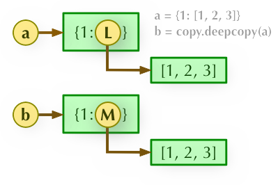
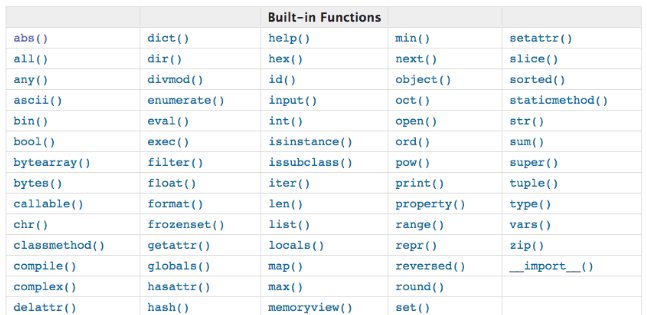
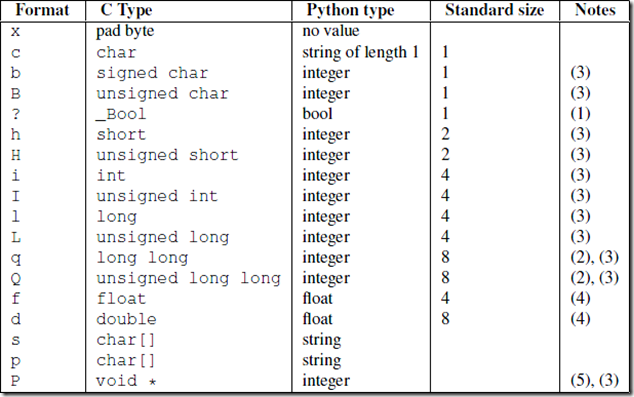
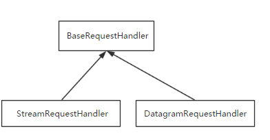
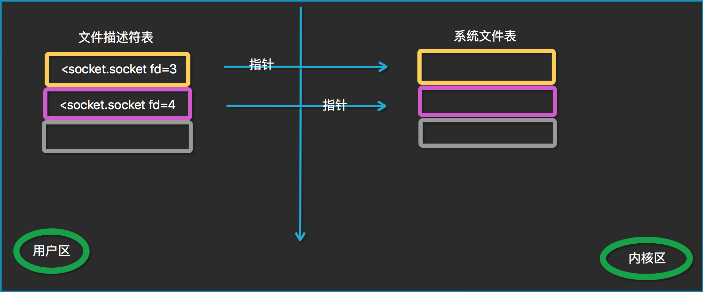

零零 小东西 星号的作用 传递实参和定义形参（所谓实参就是调用函数时传入的参数，形参则是定义函数是定义的参数）的时候，你还可以使用两个特殊的语法：、 * 。
调用函数时 使用* ，**
test(*args)中 * 的作用：其实就是把序列 args 中的每个元素，当作位置参数传进去。比如上面这个代码，如果 args 等于 (1,2,3) ，那么这个代码就等价于 test(1, 2, 3) 。
test(**kwargs)中 的作用：则是把字典 kwargs 变成关键字参数传递。比如上面这个代码，如果 kwargs 等于 {‘a’:1,’b’:2,’c’:3} ，那这个代码就等价于 test(a=1,b=2,c=3) 。
定义函数参数时 使用* 、**
def test(*args):
def test(**kwargs):
普通的参数定义和传递方式和 * 们都可以和平共处，不过显然 * 必须放在所有位置参数的最后，而 ** 则必须放在所有关键字参数的最后，否则就要产生歧义了。
exec 1 2 3 4 5 6 7 8 9 10 11 12 13 14 15 16 17 18 19 20 21 22 23 24 25 g={ 'x' :1 , 'y' :2 } l={} exec (''' global x,z x=100 z=200 m=300 ''' ,g,l)print (g) print (l)
字符串编码方式
ASCII：8位二进制数，第一位为0，有128个符号
Unicode：有许多种不同的二进制格式，可以用来表示 Unicode
UTF-8：是一种变长的编码方式。它可以使用1~4个字节表示一个符号，根据不同的符号而变化字节长度。
对于单字节的符号，字节的第一位设为0，后面7位为这个符号的 Unicode 码。因此对于英语字母，UTF-8 编码和 ASCII 码是相同的。
对于n字节的符号（n > 1），第一个字节的前n位都设为1，第n + 1位设为0，后面字节的前两位一律设为10。剩下的没有提及的二进制位，全部为这个符号的 Unicode 码。
字符串前的urb字母 u/U:表示unicode字符串
r/R:非转义的原始字符串
b:bytes
列表 1 2 3 l =[1 ,2 ,3 ,4 ] l.pop(2 ) 按照索引删除 l.remove(2 ) 按照值删除
深拷贝，浅拷贝 https://www.runoob.com/w3cnote/python-understanding-dict-copy-shallow-or-deep.html
直接赋值： 其实就是对象的引用（别名）。浅拷贝(copy)： 拷贝父对象，不会拷贝对象的内部的子对象。深拷贝(deepcopy)： copy 模块的 deepcopy 方法，完全拷贝了父对象及其子对象。
字典浅拷贝实例 实例
a = {1: [1,2,3]}
深度拷贝需要引入 copy 模块：
实例
import copy
解析 1、b = a: 赋值引用，a 和 b 都指向同一个对象。
2、b = a.copy(): 浅拷贝, a 和 b 是一个独立的对象，但他们的子对象还是指向统一对象（是引用）。
b = copy.deepcopy(a): 深度拷贝, a 和 b 完全拷贝了父对象及其子对象，两者是完全独立的。

更多实例 以下实例是使用 copy 模块的 copy.copy（ 浅拷贝 ）和（copy.deepcopy ）:
实例 1 2 3 4 5 6 7 8 9 10 11 12 13 import copy a = [1 , 2 , 3 , 4 , ['a' , 'b' ]] b = a c = copy.copy(a) d = copy.deepcopy(a) a.append(5 ) a[4 ].append('c' ) print ( 'a = ' , a ) print ( 'b = ' , b ) print ( 'c = ' , c ) print ( 'd = ' , d )
以上实例执行输出结果为：
1 2 3 4 ('a = ', [1, 2, 3, 4, ['a', 'b', 'c'], 5]) ('b = ', [1, 2, 3, 4, ['a', 'b', 'c'], 5]) ('c = ', [1, 2, 3, 4, ['a', 'b', 'c']]) ('d = ', [1, 2, 3, 4, ['a', 'b']])
字典循环 1 2 for key,value in dic.items(): pass
print颜色 1 print ('\033[32;1mcontent\033[0m' )
类设置属性 1 2 setattr (obj,key,value)obj.__dict__[key] = value
零、文件 文件读写
一读一写
1 2 with open (file1,'r' ) as x, open (file2, 'w' ) as y: y.write(x.read())
有文件句柄，写完文件之后一定要close()
如果直接config.write(open(‘1.txt’,’w’))不用close
文件操作
1 2 3 4 5 6 import osimport shutilos.remove(path) os.removedirs(path) shutil.rmtree(path)
shutil
python 中使用 shutil 实现文件或目录的复制、删除、移动
一、函数 global x 全局
1、匿名函数 lambda函数用完即在内存中删除。
应用：
1 2 func = lambda x: x+1 func(10)
2.函数尾调用 在函数执行的最后一步调用另一个函数。尾递归调用优化：
3.高阶函数 高阶函数：函数的传入参数/返回值是一个函数名
1 2 3 4 5 6 def test(func, args): ret = [] for i in args: ret.append(func(args)) return ret test(lambda x:x+1, args)
map的第一个参数为函数对象（匿名函数或函数名均可），第二个参数为可迭代对象，返回结果为一个list，迭代器，只能迭代一次。
1 2 res = map(lambda x:x+1, num_l) print(res)
（2）filter函数
1 res = filter(lambda x:x.endswith('sb'), num_l)
（3）reduce函数
1 2 3 from functools import reduce reduce(lambda x,y:x*y,num_list) reduce(lambda x,y:x*y,num_list, start_num)
4.内置函数 
eval()提取字符串中的数据结构
模块就是一个.py文件
1 2 3 module_name = 'test' m = __import__ (module_name) m.sayhi()
二、文件处理 1.基本操作 1 2 3 f = open (file_name,encoding = 'utf-8' ,'w' ) f.read() f.close()
2.打开方式 w写，r读，a追加(默认以文本方式打开，即wt，rt，at)
读
1 2 3 4 f.read() f.readable() f.readline() f.readlines()
写
1 2 3 4 f.write('text\n' ) f.writelines(['text\n' ,'text2\n' ])
+标识可以同时读写 ，使用：w+,r+,a+均可，均为读写
使用
1 2 3 4 with open (file_name,'w' ,newline='' ) as f: f.read()
linux中读取文件，vim将文件读取到内存中进行操作，cat不读取到内存中b模式
1 2 f.write(bytes ('xx' ,encoding='utf-8' )) f.write('xx' .encoding('utf-8' ))
其他操作
1 2 3 4 5 f.flush() f.read(4 ) f.tell() f.seek(1 ) f.truncate(10 )
seek的高级操作
基于相对位置的seek
1 2 3 f.seek(10 ,0 ) f.seek(10 ,1 ) f.seek(-10 ,2 )
日志文件的读取（读取文件最后一行）
1 2 3 4 5 6 7 8 9 10 for i in f: offs = -10 while True : f.seek(offs,2 ) data = f.readlines() if len (data)>1 : print ('文件的最后一行是{}' .format (data[-1 ].decode('utf-8' ))) break offs*=2
循环文件的推荐方式
三.迭代器协议 林海峰博客
1.迭代器协议 迭代器协议：对象必须提供一个next方法，执行该方法要么返回迭代器中的下一项，要么就引起一个Stopiteration异常，以终止迭代（只能往后，不能往前）
可迭代对象：实现了迭代器协议的对象（实现方法：对象内部定义一个__iter__()方法）
迭代器运行
2.for循环机制 for循环的工作原理
3.生成器和列表解析 生成器只能遍历一次
只要函数内部包含有yield关键字，那么函数名()的到的结果就是生成器，并且不会执行函数内部代码
生成器自动实现了可迭代协议，不用调用__iter__()方法
三元表达式：
1 'xx' if name =='xuexuan' else 'yy'
列表解析(会生成列表，会占用内存)
1 l = [i for i in range (10 ) if i >5 ]
生成器表达式(节省内存)
1 l = (i for i in range (10 ))
sum参数中的加入生成器不需要小括号
yield的作用：
相当于return控制函数的返回值，x = yield num
2）接受send传过来的值 x = yield test().send(value)
3）函数中有yield，则调用func()不会执行函数中的内容，使用next()
四、装饰器 本质就是函数，功能是为其他函数添加附加功能
装饰器 = 高阶函数 + 函数嵌套 + 闭包
1 2 3 4 def func2 (func1 ): def wrapper (*args,**kwargs ): return func1(*args,**kwargs) return wrapper
@func2相当于 func1 = func2(func1)
带参数的装饰器，外面添加一层
1 2 3 4 5 6 7 def func3 (para ): def func2 (func1 ): def wrapper (*args,**kwargs ): func1(*args,**kwargs) return wrapper return func2
1.原则 （1）不修改被修饰函数的运行方式
*解压序列 1 2 3 4 l = [10 ,15 ,45 ,8 ,78 ,687 ,9 ,87987 ,987 ,78 ,7 ] a,*_,c = l a,*b,c = l a,b = b,a
五、模块 http://www.cnblogs.com/yuanchenqi/articles/5732581.html
tips (1) from a import b 会执行a中所有的语句
临时修改环境变量，sys.path.append()
1.内置模块 time,sys等模块是C语言实现的，嵌入到python解释器中，调用时一定会有限调用。
1.1 time模块 1 2 3 4 5 6 7 8 9 10 11 12 13 14 15 16 17 18 19 20 21 22 23 time.time() time.localtime() time.localtime().tm_year time.gmtime() time.mktime(time.localtime()) time.strftime("%Y-%m-%d %X" ,time.localtime()) time.strptime('2016:12:24:17:50:36' ,'%Y:%m:%d:%X' ) time.asctime() time.ctime() time.sleep()
1 2 import datetimedatetime.datetime.now()
1.2 random模块 1 2 3 4 5 6 7 8 random print (random.random())print (random.randint(1 ,3 )) print (random.randrange(1 ,3 )) print (random.choice([1 ,'23' ,[4 ,5 ]]))print (random.sample([1 ,'23' ,[4 ,5 ]],2 ))print (random.uniform(1 ,3 )) print (random.shuffle([123 ,4 ,5234 ,5 ]))
1.3 os模块 os模块只能删除空文件夹，不能删除非空文件夹
删除文件用os.remove()
1 2 3 4 5 6 7 8 9 10 11 12 13 14 15 16 17 18 19 20 21 22 23 24 25 26 27 28 29 30 31 os.getcwd() 获取当前工作目录，即当前python脚本工作的目录路径 os.getpid() 获得进程的进程id os.getppid() 获得父进程的进程id os.chdir("dirname" ) 改变当前脚本工作目录；相当于shell下cd os.curdir 返回当前目录: ('.' ) os.pardir 获取当前目录的父目录字符串名：('..' ) os.makedirs('dirname1/dirname2' ) 可生成多层递归目录 os.removedirs('dirname1' ) 若目录为空，则删除，并递归到上一级目录，如若也为空，则删除，依此类推 os.mkdir('dirname' ) 生成单级目录；相当于shell中mkdir dirname os.rmdir('dirname' ) 删除单级空目录，若目录不为空则无法删除，报错；相当于shell中rmdir dirname os.listdir('dirname' ) 列出指定目录下的所有文件和子目录，包括隐藏文件，并以列表方式打印 os.remove() 删除一个文件 os.rename("oldname" ,"newname" ) 重命名文件/目录 os.stat('path/filename' ) os.sep 输出操作系统特定的路径分隔符，win下为"\\" ,Linux下为"/" os.linesep 输出当前平台使用的行终止符，win下为"\r\n" ,Linux下为"\n" os.pathsep 输出用于分割文件路径的字符串 win下为;,Linux下为: os.name 输出字符串指示当前使用平台。win->'nt' ; Linux->'posix' os.system("bash command" ) 运行shell命令，直接显示 (推荐使用：subprocess模块) os.environ 获取系统环境变量 os.path.abspath(path) 返回path规范化的绝对路径 os.path.split(path) 将path分割成目录和文件名二元组返回 os.path.dirname(path) 返回path的目录。其实就是os.path.split(path)的第一个元素 os.path.basename(path) 返回path最后的文件名。如何path以／或\结尾，那么就会返回空值。即os.path.split(path)的第二个元素 os.path.exists(path) 如果path存在，返回True ；如果path不存在，返回False os.path.isabs(path) 如果path是绝对路径，返回True os.path.isfile(path) 如果path是一个存在的文件，返回True 。否则返回False os.path.isdir(path) 如果path是一个存在的目录，则返回True 。否则返回False os.path.join(path1[, path2[, ...]]) 将多个路径组合后返回，第一个绝对路径之前的参数将被忽略 os.path.getatime(path) 返回path所指向的文件或者目录的最后存取时间 os.path.getmtime(path) 返回path所指向的文件或者目录的最后修改时间
1.4 sys模块 1 2 3 4 5 6 7 sys.argv 命令行参数List ，第一个元素是程序本身路径（文件名） sys.exit(n) 退出程序，正常退出时exit(0 ) sys.version 获取Python解释程序的版本信息 sys.maxint 最大的Int值 sys.path 返回模块的搜索路径，初始化时使用PYTHONPATH环境变量的值 sys.platform 返回操作系统平台名称 sys.stdout.write('#' ) 向屏幕显示相应的内容
进度条
1 2 sys.stdout.write('#') #写入缓存 sys.stdout.flush() #将缓存中的文件显示在屏幕
1.5 Json&Pickel
json可以进行任何语言间的数据交换，将变量改变为字符串。最多储存到函数级别
只要是js字符串就可以被loads，不一定需要dump
Pickle写入文件需要wb模式，
python中对象依托于类存在，pickle load时必须有相应的类才能load
序列化
我们把对象(变量)从内存中变成可存储或传输的过程称之为序列化，在Python中叫pickling，在其他语言中也被称之为serialization，marshalling，flattening等等，都是一个意思。
序列化之后，就可以把序列化后的内容写入磁盘，或者通过网络传输到别的机器上。
反过来，把变量内容从序列化的对象重新读到内存里称之为反序列化，即unpickling。
json
如果我们要在不同的编程语言之间传递对象，就必须把对象序列化为标准格式，比如XML，但更好的方法是序列化为JSON，因为JSON表示出来就是一个字符串，可以被所有语言读取，也可以方便地存储到磁盘或者通过网络传输。JSON不仅是标准格式，并且比XML更快，而且可以直接在Web页面中读取，非常方便。
JSON表示的对象就是标准的JavaScript语言的对象，JSON和Python内置的数据类型对应如下：
1 2 3 4 5 6 7 8 9 10 11 12 13 14 15 16 import json dic={'name' :'alvin' ,'age' :23 ,'sex' :'male' } print (type (dic)) j=json.dumps(dic) print (type (j)) f=open ('序列化对象' ,'w' ) f.write(j) f.close() import jsonf=open ('序列化对象' ) data=json.loads(f.read())
Pickle是python特有的，支持的数据类型更多。
Pickle的问题和所有其他编程语言特有的序列化问题一样，就是它只能用于Python，并且可能不同版本的Python彼此都不兼容，因此，只能用Pickle保存那些不重要的数据，不能成功地反序列化也没关系。
1.5 shelve open函数，返回类似字典的对象，可读可写;key必须为字符串，而值可以是python所支持的数据类型
1 2 3 4 5 6 7 8 9 10 11 import shelve f = shelve.open(r'shelve.txt') # f['stu1_info']={'name':'alex','age':'18'} # f['stu2_info']={'name':'alvin','age':'20'} # f['school_info']={'website':'oldboyedu.com','city':'beijing'} # # # f.close() print``(f.get(``'stu_info'``)[``'age'``])
1.6 XML模块 xml是实现不同语言或程序之间进行数据交换的协议，跟json差不多，但json使用起来更简单，不过，古时候，在json还没诞生的黑暗年代，大家只能选择用xml呀，至今很多传统公司如金融行业的很多系统的接口还主要是xml。
1 2 3 4 5 6 7 8 9 10 11 12 13 14 15 16 17 18 19 20 21 22 23 <?xml version="1.0"?> <data> <country name="Liechtenstein"> <rank updated="yes">2</rank> <year>2008</year> <gdppc>141100</gdppc> <neighbor name="Austria" direction="E"/> <neighbor name="Switzerland" direction="W"/> </country> <country name="Singapore"> <rank updated="yes">5</rank> <year>2011</year> <gdppc>59900</gdppc> <neighbor name="Malaysia" direction="N"/> </country> <country name="Panama"> <rank updated="yes">69</rank> <year>2011</year> <gdppc>13600</gdppc> <neighbor name="Costa Rica" direction="W"/> <neighbor name="Colombia" direction="E"/> </country> </data>
操作xml
1 2 3 4 5 6 7 8 9 10 11 12 13 14 15 16 17 18 19 20 21 22 23 24 25 26 27 28 29 30 31 32 33 34 35 36 37 import xml.etree.ElementTree as ET tree = ET.parse("xmltest.xml" ) root = tree.getroot() print (root.tag) for child in root: print (child.tag, child.attrib) for i in child: print (i.tag,i.text) for node in root.iter ('year' ): print (node.tag,node.text) import xml.etree.ElementTree as ET tree = ET.parse("xmltest.xml" ) root = tree.getroot() for node in root.iter ('year' ): new_year = int (node.text) + 1 node.text = str (new_year) node.set ("updated" ,"yes" ) tree.write("xmltest.xml" ) for country in root.findall('country' ): rank = int (country.find('rank' ).text) if rank > 50 : root.remove(country) tree.write('output.xml' )
创建xml文件
1 2 3 4 5 6 7 8 9 10 11 12 13 14 15 16 import xml.etree.ElementTree as ET new_xml = ET.Element("namelist" ) name = ET.SubElement(new_xml,"name" ,attrib={"enrolled" :"yes" }) age = ET.SubElement(name,"age" ,attrib={"checked" :"no" }) sex = ET.SubElement(name,"sex" ) sex.text = '33' name2 = ET.SubElement(new_xml,"name" ,attrib={"enrolled" :"no" }) age = ET.SubElement(name2,"age" ) age.text = '19' et = ET.ElementTree(new_xml) et.write("test.xml" , encoding="utf-8" ,xml_declaration=True ) ET.dump(new_xml)
1.7 re模块 正则表达式
字符匹配（普通字符，元字符）：
1 普通字符：大多数字符和字母都会和自身匹配
2 元字符：. ^ $ * + ? { } [ ] | ( ) \
1 2 3 4 5 6 7 8 9 10 11 12 13 14 15 16 17 18 19 20 21 22 23 24 25 26 27 28 29 30 31 32 33 34 35 36 37 38 39 40 41 42 43 . 通配符（一个字符） ^ 以xxx开头 $ 以xxx结尾 *+?{} * 按照紧挨的字符重复 0~∞次(注意是0次开始) + 按照紧挨的字符重复 1~∞次(注意是1次开始) ? 按照紧挨的字符重复 0或1次 {} 按照紧挨的字符重复 {0,}:* {1,}:+ *+?都是贪婪匹配，后面加?为变为惰性匹配 元字符之转义符\ 反斜杠后边跟元字符去除特殊功能,比如\. 反斜杠后边跟普通字符实现特殊功能,比如\d \d 匹配任何十进制数；它相当于类 [0-9]。 \D 匹配任何非数字字符；它相当于类 [^0-9]。 \s 匹配任何空白字符；它相当于类 [ \t\n\r\f\v]。 \S 匹配任何非空白字符；它相当于类 [^ \t\n\r\f\v]。 \w 匹配任何字母数字字符；它相当于类 [a-zA-Z0-9_]。 \W 匹配任何非字母数字字符；它相当于类 [^a-zA-Z0-9_] \b 匹配一个特殊字符边界，比如空格 ，&，＃等 在“”中使用转义字符时，需要进行r"". python str --> python解释器--->re层""进行匹配 #-----------------------------eg1: import re ret=re.findall('c\l','abc\le') print(ret)#[] ret=re.findall('c\\l','abc\le') print(ret)#[] ret=re.findall('c\\\\l','abc\le') print(ret)#['c\\l'] ret=re.findall(r'c\\l','abc\le') print(ret)#['c\\l'] #-----------------------------eg2: #之所以选择\b是因为\b在ASCII表中是有意义的 m = re.findall('\bblow', 'blow') print(m) m = re.findall(r'\bblow', 'blow') print(m)
[] 字符集
1 2 3 4 5 6 7 8 9 10 11 12 13 14 15 16 17 18 19 20 21 ret=re.findall('a[bc]d' ,'acd' ) print (ret) ret=re.findall('[a-z]' ,'acd' ) print (ret)ret=re.findall('[.*+]' ,'a.cd+' ) print (ret) ret=re.findall('[1-9]' ,'45dha3' ) print (ret)ret=re.findall('[^ab]' ,'45bdha3' ) print (ret) ret=re.findall('[\d]' ,'45bdha3' ) print (ret)
| 或
1 2 ret=re.search('(ab)|\d' ,'rabhdg8sd' ) print (ret.group())
（）分组
当匹配中有分组时，findall优先返回分组中的匹配机制，
如果要返回所有的匹配结果，使用(?:xxxxx)
1 2 3 4 5 6 7 8 m = re.findall(r'(ad)+' , 'add' ) print (m) m = re.findall('(?:abc)+' ,'abcabcabc' ) ret=re.search('(?P<id>\d{2})/(?P<name>\w{3})' ,'23/com' ) print (ret.group())print (ret.group('id' ))
re下的常用方法
1 2 3 4 5 6 7 8 9 10 11 12 13 14 15 16 17 18 19 20 21 22 23 24 25 26 27 28 29 30 import rere.findall('a' ,'alvin yuan' ) re.search('a' ,'alvin yuan' ).group() re.match('a' ,'abc' ).group() ret=re.split('[ab]' ,'abcd' ) print (ret) ret=re.sub('\d' ,'abc' ,'alvin5yuan6' ,1 ) print (ret)ret=re.subn('\d' ,'abc' ,'alvin5yuan6' ) print (ret) obj=re.compile ('\d{3}' ) ret=obj.search('abc123eeee' ) print (ret.group())import reret=re.finditer('\d' ,'ds3sy4784a' ) print (ret) print (next (ret).group())print (next (ret).group())
1.8 logging模块 1 2 3 4 5 6 7 import logging logging.debug('debug message' ) logging.info('info message' ) logging.warning('warning message' ) logging.error('error message' ) logging.critical('critical message' )
默认情况下Python 的logging模块将日志打印到了标准输出中，且只显示了大于等于WARNING级别的日志，这说明默认的日志级别设置为WARNING（日志级别等级CRITICAL > ERROR > WARNING > INFO > DEBUG > NOTSET），默认的日志格式为日志级别：Logger名称：用户输出消息。
二 灵活配置日志级别，日志格式，输出位置
1 2 3 4 5 6 7 8 9 10 11 12 import logging logging.basicConfig(level=logging.DEBUG, format='%(asctime)s %(filename)s[line:%(lineno)d] %(levelname)s %(message)s', datefmt='%a, %d %b %Y %H:%M:%S', filename='/tmp/test.log', filemode='w') logging.debug('debug message') logging.info('info message') logging.warning('warning message') logging.error('error message') logging.critical('critical message')
在logging.basicConfig()函数中可通过具体参数来更改logging模块默认行为，可用参数有
format参数中可能用到的格式化串：
三 logger对象
上述几个例子中我们了解到了logging.debug()、logging.info()、logging.warning()、logging.error()、logging.critical()（分别用以记录不同级别的日志信息），logging.basicConfig()（用默认日志格式（Formatter）为日志系统建立一个默认的流处理器（StreamHandler），设置基础配置（如日志级别等）并加到root logger（根Logger）中）这几个logging模块级别的函数，另外还有一个模块级别的函数是logging.getLogger([name])（返回一个logger对象，如果没有指定名字将返回root logger）
先看一个最简单的过程：
1 2 3 4 5 6 7 8 9 10 11 12 13 14 15 16 17 18 19 20 21 22 import logginglogger = logging.getLogger() fh = logging.FileHandler('test.log' ) ch = logging.StreamHandler() formatter = logging.Formatter('%(asctime)s - %(name)s - %(levelname)s - %(message)s' ) fh.setFormatter(formatter) ch.setFormatter(formatter) logger.addHandler(fh) logger.addHandler(ch) logger.debug('logger debug message' ) logger.info('logger info message' ) logger.warning('logger warning message' ) logger.error('logger error message' ) logger.critical('logger critical message' )
四、两个logger对象
1 2 3 4 5 6 7 8 9 10 11 12 13 14 15 16 17 18 19 20 21 22 23 24 logger1 = logging.getLogger('mylogger' ) logger1.setLevel(logging.DEBUG) logger2 = logging.getLogger('mylogger' ) logger2.setLevel(logging.INFO) logger1.addHandler(fh) logger1.addHandler(ch) logger2.addHandler(fh) logger2.addHandler(ch) logger1.debug('logger1 debug message' ) logger1.info('logger1 info message' ) logger1.warning('logger1 warning message' ) logger1.error('logger1 error message' ) logger1.critical('logger1 critical message' ) logger2.debug('logger2 debug message' ) logger2.info('logger2 info message' ) logger2.warning('logger2 warning message' ) logger2.error('logger2 error message' ) logger2.critical('logger2 critical message' )
(1)我们明明通过logger1.setLevel(logging.DEBUG)将logger1的日志级别设置为了DEBUG，为何显示的时候没有显示出DEBUG级别的日志信息，而是从INFO级别的日志开始显示呢？
原来logger1和logger2对应的是同一个Logger实例，只要logging.getLogger（name）中名称参数name相同则返回的Logger实例就是同一个，且仅有一个，也即name与Logger实例一一对应。在logger2实例中通过logger2.setLevel(logging.INFO)设置mylogger的日志级别为logging.INFO，所以最后logger1的输出遵从了后来设置的日志级别。
(2)为什么logger1、logger2对应的每个输出分别显示两次?
1.9 configparser模块 好多软件的常见文档格式如下：
1 2 3 4 5 6 7 8 9 10 11 12 [DEFAULT] ServerAliveInterval = 45 Compression = yes CompressionLevel = 9 ForwardX11 = yes [bitbucket.org] User = hg [topsecret.server.com] Port = 50022 ForwardX11 = no
如果想用python生成一个这样的文档怎么做呢？
1 2 3 4 5 6 7 8 9 10 11 12 13 14 15 16 import configparser config = configparser.ConfigParser() config["DEFAULT"] = {'ServerAliveInterval': '45', 'Compression': 'yes', 'CompressionLevel': '9'} config['bitbucket.org'] = {} config['bitbucket.org']['User'] = 'hg' config['topsecret.server.com'] = {} topsecret = config['topsecret.server.com'] topsecret['Host Port'] = '50022' # mutates the parser topsecret['ForwardX11'] = 'no' # same here config['DEFAULT']['ForwardX11'] = 'yes'<br> with open('example.ini', 'w') as configfile: config.write(configfile)
config section名称不区分大小写
1 2 3 4 5 6 7 8 9 10 11 12 13 14 15 16 17 18 19 20 21 22 23 24 25 26 27 28 29 30 31 32 33 34 35 36 37 38 import configparserconfig = configparser.ConfigParser() print (config.sections()) config.read('example.ini' ) print (config.sections()) print ('bytebong.com' in config)print (config['bitbucket.org' ]['User' ]) print (config['DEFAULT' ]['Compression' ]) print (config['topsecret.server.com' ]['ForwardX11' ]) for key in config['bitbucket.org' ]: print (key) print (config.options('bitbucket.org' ))print (config.items('bitbucket.org' )) print (config.get('bitbucket.org' ,'compression' ))config.add_section('yuan' ) config.remove_section('topsecret.server.com' ) config.remove_option('bitbucket.org' ,'user' ) config.set ('bitbucket.org' ,'k1' ,'11111' ) config.write(open ('i.cfg' , "w" ))
1.10 hashlib模块 摘要算法：md5，sha256等。只能将明文变为密文，不是可逆操作。
密码操作将所有的明文都变成密文在进行比较
1 2 3 4 5 6 7 8 9 10 11 12 13 14 import hashlib m=hashlib.md5() m.update('hello' .encode('utf8' )) print (m.hexdigest()) m.update('alvin' .encode('utf8' )) print (m.hexdigest()) m2=hashlib.md5() m2.update('helloalvin' .encode('utf8' )) print (m2.hexdigest())
hash
1 2 3 4 5 6 7 import hashlib hash = hashlib.sha256('898oaFs09f' .encode('utf8' ))hash .update('alvin' .encode('utf8' ))print (hash .hexdigest())
不同对象的区分
1 2 3 4 5 6 7 8 9 10 11 import hashlibimport timedef create_md5 (): m = hashlib.md5() m.update(str (time.time()).encode(utf-8 )) return m.hexdigest() class school : def __init__ (self ): self.id = create_md5()
1.11 subprocess模块 我们需要调用系统的命令的时候，最先考虑的os模块。用os.system()和os.popen()来进行操作。但是这两个命令过于简单，不能完成一些复杂的操作，如给运行的命令提供输入或者读取命令的输出，判断该命令的运行状态，管理多个命令的并行等等。这时subprocess中的Popen命令就能有效的完成我们需要的操作。
subprocess模块允许一个进程创建一个新的子进程，通过管道连接到子进程的stdin/stdout/stderr，获取子进程的返回值等操作。
这个模块一个类：Popen。
1 `#Popen它的构造函数如下：` `subprocess.Popen(args, bufsize``=``0``, executable``=``None``, stdin``=``None``, stdout``=``None``,stderr``=``None``, preexec_fn``=``None``, close_fds``=``False``, shell``=``False``,<br> `
1 2 3 4 5 subprocess.Popen('dir' ,shell=True ) res = subprocess.Popen('dir' ,shell=True ) res.stdout.read().decode() stdout-->输出给管道 管道中对象只能取一次
1 2 3 4 5 6 7 8 9 10 11 res = subprocess.Popen(cmd, shell=True, stderr=subprocess.PIPE, stdout=subprocess.PIPE, stdin=subprocess.PIPE) err = res.stderr.read() if err: msg = err else: msg = res.stdout.read() print(msg.decode('utf-8')) if msg: self.send_bytes(msg) else: self.send_msg('No return msg.')
简单命令：
1 2 3 4 5 6 7 8 9 10 11 12 13 14 15 16 17 18 import subprocess a=subprocess.Popen('ls' ) print ('>>>>>>>' ,a) ''' >>>>>>> <subprocess.Popen object at 0x10185f860> __init__.py __pycache__ log.py main.py '''
subprocess.PIPE
在创建Popen对象时，subprocess.PIPE可以初始化stdin, stdout或stderr参数。表示与子进程通信的标准流。
1 2 3 4 5 6 import subprocess p=subprocess.Popen('ls' ,stdout=subprocess.PIPE) print (p.stdout.read())
这是因为subprocess创建了子进程，结果本在子进程中，if 想要执行结果转到主进程中，就得需要一个管道，即 ： stdout=subprocess.PIPE
subprocess.STDOUT
创建Popen对象时，用于初始化stderr参数，表示将错误通过标准输出流输出。
Popen的方法
1 2 3 4 5 6 7 8 9 10 11 12 13 14 15 16 17 18 19 20 21 22 23 24 25 26 27 28 29 30 31 32 Popen.poll() 用于检查子进程是否已经结束。设置并返回returncode属性。 Popen.wait() 等待子进程结束。设置并返回returncode属性。 Popen.communicate(input=None) 与子进程进行交互。向stdin发送数据，或从stdout和stderr中读取数据。可选参数input指定发送到子进程的参数。 Communicate()返回一个元组：(stdoutdata, stderrdata)。注意：如果希望通过进程的stdin向其发送数据，在创建Popen对象的时候，参数stdin必须被设置为PIPE。同样，如 果希望从stdout和stderr获取数据，必须将stdout和stderr设置为PIPE。 Popen.send_signal(signal) 向子进程发送信号。 Popen.terminate() 停止(stop)子进程。在windows平台下，该方法将调用Windows API TerminateProcess（）来结束子进程。 Popen.kill() 杀死子进程。 Popen.stdin 如果在创建Popen对象是，参数stdin被设置为PIPE，Popen.stdin将返回一个文件对象用于策子进程发送指令。否则返回None。 Popen.stdout 如果在创建Popen对象是，参数stdout被设置为PIPE，Popen.stdout将返回一个文件对象用于策子进程发送指令。否则返回 None。 Popen.stderr 如果在创建Popen对象是，参数stdout被设置为PIPE，Popen.stdout将返回一个文件对象用于策子进程发送指令。否则返回 None。 Popen.pid 获取子进程的进程ID。 Popen.returncode 获取进程的返回值。如果进程还没有结束，返回None。
supprocess模块的工具函数
1 2 3 4 5 6 7 8 9 10 11 12 13 supprocess模块提供了一些函数，方便我们用于创建进程来实现一些简单的功能。 subprocess.call(*popenargs, **kwargs) 运行命令。该函数将一直等待到子进程运行结束，并返回进程的returncode。如果子进程不需要进行交 互,就可以使用该函数来创建。 subprocess.check_call(*popenargs, **kwargs) 与subprocess.call(*popenargs, **kwargs)功能一样，只是如果子进程返回的returncode不为0 的话，将触发CalledProcessError异常。在异常对象中，包 括进程的returncode信息。 check_output(*popenargs, **kwargs) 与call()方法类似，以byte string的方式返回子进程的输出，如果子进程的返回值不是0 ，它抛出CalledProcessError异常，这个异常中的returncode包含返回码，output属性包含已有的输出。 getstatusoutput(cmd)/getoutput(cmd) 这两个函数仅仅在Unix下可用，它们在shell中执行指定的命令cmd，前者返回(status, output)，后者返回output。其中，这里的output包括子进程的stdout和stderr。
1 2 3 4 5 6 7 8 9 10 11 12 13 14 15 16 17 18 19 20 21 22 23 24 25 26 27 28 29 30 31 32 33 34 35 36 37 38 39 40 41 42 import subprocess''' hello.py ok.py web ''' ''' hello.py ok.py web ''' ''' hello.py ok.py web ''' ''' hello.py ok.py web '''
1.12 struct 模块 1 2 3 import structl = struct.pack('i' ,123 ) struct.unpack('i' ,l)
1.13 partial模块 为函数提供参数
1 2 3 4 5 6 7 def test (x,y ): return x+y import partialfunc = partial(test,1 ) func(3 )
1.14 optparse模块 1 2 3 4 5 6 7 8 9 10 11 import optparsex = optparse.OptionParser() x.add_option('-s' ,'--s' ,dest='server' ) x.add_option('-P' ,'--port' ,dest='port' ) options,args = x.parse_args() options.server
1.15 uuid 1 2 import uuid uuid.uuid4() 生成随机数
1.16 concurrent 1 2 3 4 5 6 7 8 9 10 11 12 13 14 15 16 17 from concurrent.futures import ThreadPoolExector import request def task(url): response = request.get(url) print(response) return response def func(future,*args,**kwargs): future 默认为task的返回值 pool = ThreadPoolExector(5) v = pool.submit(task,url) v.add_done_callback(func,args) concurrent有参数xx
1.XX iter的参数 1 2 3 4 5 6 7 8 l = [12 ,41 ,25 ,5 ] def test (): return l.pop() iiii = iter (test,41 ) 41 为终止参数 iiii.__next__() iiii.__next__() iiii.__next__() 返回41 时报错iterstop
六、面向对象 面向对象https://www.cnblogs.com/linhaifeng/articles/6182264.html
<classname>.__dict__ 返回属性字典
函数的输入输出要分开，类中函数只包含逻辑
类中变量调用
点调用：在实例属性–》类属性中寻找
非点调用：在类外寻找
静态属性
1 2 3 4 5 6 7 8 @property将函数变为静态属性，调用时直接点调用静态属性即可 class yy : @property def test (self ): return xx a = yy() print (a.test)
类方法
与类绑定，不与实例绑定
不需要实例化类，可以直接使用
类方法不能调用实例属性，即不能使用self.xxx
1 2 3 4 5 6 7 class yy : tmp = 1 @classmethod def test (cls ): return cls.tmp print (yy.test())
静态方法
不与类绑定，也不与实例绑定，只是类的工具包
实例无法调用
1 2 3 4 5 6 class yy : @staticmethod def test (a ): return a y.a
组合
软件重用的重要方式除了继承之外还有另外一种方式，即：组合
组合指的是，在一个类中以另外一个类的对象作为数据属性，称为类的组合
类与类之间的关联
1 2 3 4 5 6 7 8 9 10 11 12 13 14 15 16 17 18 19 20 21 22 23 24 25 26 27 class School : def __init__ (self,name,addr ): self.name=name self.addr=addr def zhao_sheng (self ): print ('%s 正在招生' %self.name) class Course : def __init__ (self,name,price,period,school ): self.name=name self.price=price self.period=period self.school=school s1=School('oldboy' ,'北京' ) s2=School('oldboy' ,'南京' ) s3=School('oldboy' ,'东京' ) c1=Course('linux' ,10 ,'1h' ,s1) print (c1.__dict__)print (c1.school.name)print (s1)
1. 三大特性 继承、封装、多态
1.1继承 继承与派生
当类之间有显著不同，并且较小的类是较大的类所需要的组件时，用组合比较好。
当类之间有很多相通的功能，提取这些共同的功能做成基类，用继承比较好。
继承有两种含义
含义一：继承基类的方法，并且做出自己的改变或拓展（代码重用） —》有害，代码之间存在耦合
在python中根本就没有一个叫做interface的关键字，如果非要去模仿接口的概念http://pypi.python.org/pypi/zope.interface
抽象类
与java一样，python也有抽象类的概念但是同样需要借助模块实现，抽象类是一个特殊的类，它的特殊之处在于只能被继承，不能被实例化
抽象类与接口
抽象类的本质还是类，指的是一组类的相似性，包括数据属性（如all_type）和函数属性（如read、write），而接口只强调函数属性的相似性。
抽象类是一个介于类和接口直接的一个概念，同时具备类和接口的部分特性，可以用来实现归一化设计
接口继承
1 2 3 4 5 6 7 8 9 10 11 12 13 14 15 16 17 18 19 20 21 22 23 24 25 26 27 28 29 30 31 32 33 34 35 import abcclass All_file (metaclass=abc.ABCMeta ): @abc.abstractmethod def read (self ): pass @abc.abstractmethod def write (self ): pass class Disk (All_file ): def read (self ): print ('disk read' ) def write (self ): print ('disk write' ) class Cdrom (All_file ): def read (self ): print ('cdrom read' ) def write (self ): print ('cdrom write' ) class Mem (All_file ): def read (self ): print ('mem read' ) def write (self ): print ('mem write' ) m1=Mem() m1.read() m1.write()
归一化设计
接口继承实质上要求“作出一个良好的抽象，这个抽象规定了一个兼容接口，使得外部调用者无需关心具体细节，可一视同仁的处理是吸纳了特定接口的所有对象”—这在程序设计上叫做归一化。
派生
当然子类也可以添加自己新的属性或者在自己这里重新定义这些属性（不会影响到父类），需要注意的是，一旦重新定义了自己的属性且与父类重名，那么调用新增的属性时，就以自己为准了。
** 继承顺序**
在Java和C#中子类只能继承一个父类，而Python中子类可以同时继承多个父类，如A(B,C,D)
如果继承关系为非菱形结构，则会按照先找B这一条分支，然后再找C这一条分支，最后找D这一条分支的顺序直到找到我们想要的属性
如果继承关系为菱形结构，那么属性的查找方式有两种，分别是：深度优先和广度优先
1 2 3 4 5 6 7 8 9 10 11 12 13 14 15 16 17 18 19 20 21 22 23 24 25 26 27 28 29 30 31 32 class A (object def test (self ): print ('from A' ) class B (A ): def test (self ): print ('from B' ) class C (A ): def test (self ): print ('from C' ) class D (B ): def test (self ): print ('from D' ) class E (C ): def test (self ): print ('from E' ) class F (D,E ): pass f1=F() f1.test() print (F.__mro__)
继承原理（python如何实现的继承）
python到底是如何实现继承的，对于你定义的每一个类，python会计算出一个方法解析顺序(MRO)列表，这个MRO列表就是一个简单的所有基类的线性顺序列表，例如
1 2 >>> F.mro() #等同于F.__mro__ [<class '__main__.F'>, <class '__main__.D'>, <class '__main__.B'>, <class '__main__.E'>, <class '__main__.C'>, <class '__main__.A'>, <class 'object'>]
为了实现继承,python会在MRO列表上从左到右开始查找基类,直到找到第一个匹配这个属性的类为止。
1.2 子类中调用父类方法 需要先执行_init _()方法一 ：指名道姓，即父类名.父类方法()
1 2 3 4 5 6 7 8 9 10 11 12 13 14 15 16 17 18 19 20 21 22 23 24 25 __author__ = 'Linhaifeng' class Vehicle : Country='China' def __init__ (self,name,speed,load,power ): self.name=name self.speed=speed self.load=load self.power=power def run (self ): print ('开动啦...' ) class Subway (Vehicle ): def __init__ (self,name,speed,load,power,line ): Vehicle.__init__(self,name,speed,load,power) self.line=line def run (self ): print ('地铁%s号线欢迎您' %self.line) Vehicle.run(self) line13=Subway('中国地铁' ,'180m/s' ,'1000人/箱' ,'电' ,13 ) line13.run()
方法二 ：super()
1 2 3 4 5 6 7 8 9 10 11 12 13 14 15 16 17 18 19 20 21 22 23 class Vehicle : Country='China' def __init__ (self,name,speed,load,power ): self.name=name self.speed=speed self.load=load self.power=power def run (self ): print ('开动啦...' ) class Subway (Vehicle ): def __init__ (self,name,speed,load,power,line ): super ().__init__(name,speed,load,power) self.line=line def run (self ): print ('地铁%s号线欢迎您' %self.line) super (Subway,self).run() line13=Subway('中国地铁' ,'180m/s' ,'1000人/箱' ,'电' ,13 ) line13.run()
二者使用哪一种都可以，但最好不要混合使用
即使没有直接继承关系，super仍然会按照mro继续往后查找
1.2 多态 http://www.cnblogs.com/linhaifeng/articles/7340687.html
定义 在面向对象方法中一般是这样表述多态性：向不同的对象发送同一条消息（！！！obj.func():是调用了obj的方法func，又称为向obj发送了一条消息func），不同的对象在接收时会产生不同的行为（即方法）。也就是说，每个对象可以用自己的方式去响应共同的消息。所谓消息，就是调用函数，不同的行为就是指不同的实现，即执行不同的函数。
比如：老师.下课铃响了（），学生.下课铃响了()，老师执行的是下班操作，学生执行的是放学操作，虽然二者消息一样，但是执行的效果不同
1.3 封装 http://www.cnblogs.com/linhaifeng/articles/7340801.html
x.python OOP的常用术语 抽象/实现
抽象指对现实世界问题和实体的本质表现,行为和特征建模,建立一个相关的子集,可以用于 绘程序结构,从而实现这种模型。抽象不仅包括这种模型的数据属性,还定义了这些数据的接口。
对某种抽象的实现就是对此数据及与之相关接口的现实化(realization)。现实化这个过程对于客户 程序应当是透明而且无关的。
封装/接口
封装描述了对数据/信息进行隐藏的观念,它对数据属性提供接口和访问函数。通过任何客户端直接对数据的访问,无视接口,与封装性都是背道而驰的,除非程序员允许这些操作。作为实现的 一部分,客户端根本就不需要知道在封装之后,数据属性是如何组织的。在Python中,所有的类属性都是公开的,但名字可能被“混淆”了,以阻止未经授权的访问,但仅此而已,再没有其他预防措施了。这就需要在设计时,对数据提供相应的接口,以免客户程序通过不规范的操作来存取封装的数据属性。
注意：封装绝不是等于“把不想让别人看到、以后可能修改的东西用private隐藏起来”
真正的封装是，经过深入的思考，做出良好的抽象，给出“完整且最小”的接口，并使得内部细节可以对外透明
（注意：对外透明 的意思是， 外部调用者可以顺利的得到自己想要的任何功能，完全意识不到内部细节的存在）
合成
合成扩充了对类的 述,使得多个不同的类合成为一个大的类,来解决现实问题。合成 述了 一个异常复杂的系统,比如一个类由其它类组成,更小的组件也可能是其它的类,数据属性及行为, 所有这些合在一起,彼此是“有一个”的关系。
派生/继承/继承结构
派生描述了子类衍生出新的特性,新类保留已存类类型中所有需要的数据和行为,但允许修改或者其它的自定义操作,都不会修改原类的定义。
泛化/特化
基于继承
多态与多态性
多态指的是同一种事物的多种状态：水这种事物有多种不同的状态：冰，水蒸气
多态性的概念指出了对象如何通过他们共同的属性和动作来操作及访问,而不需考虑他们具体的类。
冰，水蒸气，都继承于水，它们都有一个同名的方法就是变成云，但是冰.变云(),与水蒸气.变云()是截然不同的过程，虽然调用的方法都一样
自省/反射
自省也称作反射，这个性质展示了某对象是如何在运行期取得自身信息的。如果传一个对象给你,你可以查出它有什么能力,这是一项强大的特性。如果Python不支持某种形式的自省功能,dir和type内建函数,将很难正常工作。还有那些特殊属性,像__dict__,__name__及__doc__
1.4 面向对象进阶 https://www.cnblogs.com/linhaifeng/articles/6204014.html
1.4.1动态导入模块 1 2 3 4 5 6 module_t = __import__ (m1.t) module_t等价于 m1 import importlibm = importlib.import_module(m1.t) m等价于m1.t
导入包时，会自动执行__init__.py文件
1.4.2 双下划线开头的attr方法 1 2 3 4 5 6 7 8 9 10 11 12 13 14 15 16 17 18 19 20 21 22 23 24 25 26 27 28 29 30 31 32 class Foo : x=1 def __init__ (self,y ): self.y=y def __getattr__ (self, item ): print ('----> from getattr:你找的属性不存在' ) def __setattr__ (self, key, value ): print ('----> from setattr' ) def __delattr__ (self, item ): print ('----> from delattr' ) self.__dict__.pop(item) f1=Foo(10 ) print (f1.__dict__) f1.z=3 print (f1.__dict__)f1.__dict__['a' ]=3 del f1.aprint (f1.__dict__)f1.xxxxxx
1.4.3 __getattribute__ 无论属性是否存在，都会触发__getattribute____getattr__
1.4.4 授权 1 2 3 4 5 6 7 8 9 10 11 12 13 14 15 16 import timeclass FileHandle : def __init__ (self,filename,mode='r' ,encoding='utf-8' ): self.file=open (filename,mode,encoding=encoding) def write (self,line ): t=time.strftime('%Y-%m-%d %T' ) self.file.write('%s %s' %(t,line)) def __getattr__ (self, item ): return getattr (self.file,item) f1=FileHandle('b.txt' ,'w+' ) f1.write('你好啊' ) f1.seek(0 ) print (f1.read())f1.close()
1.4.5 isinstance(obj,cls)和issubclass(sub,super) 1 2 3 4 5 6 7 8 9 10 class Foo (object pass obj = Foo() isinstance (obj, Foo) class Foo (object pass class Bar (Foo ): pass issubclass (Bar, Foo)
1.4.6 __setitem__,__getitem__,__delitem__ 字典（中括号）方式触发的是item操作
点操作触发的是attr操作
1 2 3 4 5 6 7 8 9 10 11 12 13 14 15 16 17 18 19 20 21 22 23 class Foo : def __init__ (self,name ): self.name=name def __getitem__ (self, item ): print (self.__dict__[item]) def __setitem__ (self, key, value ): self.__dict__[key]=value def __delitem__ (self, key ): print ('del obj[key]时,我执行' ) self.__dict__.pop(key) def __delattr__ (self, item ): print ('del obj.key时,我执行' ) self.__dict__.pop(item) f1=Foo('sb' ) f1['age' ]=18 f1['age1' ]=19 del f1.age1 del f1['age' ] f1['name' ]='alex' print (f1.__dict__)
1 2 3 4 5 6 7 8 9 10 11 12 13 14 15 16 17 18 19 20 21 22 23 24 25 26 27 28 29 30 31 32 33 34 35 36 37 38 39 40 __author__ = 'Linhaifeng' format_dict={ 'nat' :'{obj.name}-{obj.addr}-{obj.type}' , 'tna' :'{obj.type}:{obj.name}:{obj.addr}' , 'tan' :'{obj.type}/{obj.addr}/{obj.name}' , } class School : def __init__ (self,name,addr,type ): self.name=name self.addr=addr self.type =type def __repr__ (self ): return 'School(%s,%s)' %(self.name,self.addr) def __str__ (self ): return '(%s,%s)' %(self.name,self.addr) def __format__ (self, format_spec ): if not format_spec or format_spec not in format_dict: format_spec='nat' fmt=format_dict[format_spec] return fmt.format (obj=self) s1=School('oldboy1' ,'北京' ,'私立' ) print ('from repr: ' ,repr (s1))print ('from str: ' ,str (s1))print (s1)''' str函数或者print函数--->obj.__str__() repr或者交互式解释器--->obj.__repr__() 如果__str__没有被定义,那么就会使用__repr__来代替输出 注意:这俩方法的返回值必须是字符串,否则抛出异常 ''' print (format (s1,'nat' ))print (format (s1,'tna' ))print (format (s1,'tan' ))print (format (s1,'asfdasdffd' ))
自定义format
1 2 3 4 5 6 7 8 9 10 11 12 13 14 15 16 17 18 19 20 21 date_dic={ 'ymd' :'{0.year}:{0.month}:{0.day}' , 'dmy' :'{0.day}/{0.month}/{0.year}' , 'mdy' :'{0.month}-{0.day}-{0.year}' , } class Date : def __init__ (self,year,month,day ): self.year=year self.month=month self.day=day def __format__ (self, format_spec ): if not format_spec or format_spec not in date_dic: format_spec='ymd' fmt=date_dic[format_spec] return fmt.format (self) d1=Date(2016 ,12 ,29 ) print (format (d1))print ('{:mdy}' .format (d1))
1.4.8 __slot__ 类的数据属性
1 2 3 4 5 6 7 8 9 10 11 12 13 14 15 16 17 18 19 20 21 22 23 24 25 26 27 28 29 ''' 1.__slots__是什么:是一个类变量,变量值可以是列表,元组,或者可迭代对象,也可以是一个字符串(意味着所有实例只有一个数据属性) 2.引子:使用点来访问属性本质就是在访问类或者对象的__dict__属性字典(类的字典是共享的,而每个实例的是独立的) 3.为何使用__slots__:字典会占用大量内存,如果你有一个属性很少的类,但是有很多实例,为了节省内存可以使用__slots__取代实例的__dict__ 当你定义__slots__后,__slots__就会为实例使用一种更加紧凑的内部表示。实例通过一个很小的固定大小的数组来构建,而不是为每个实例定义一个 字典,这跟元组或列表很类似。在__slots__中列出的属性名在内部被映射到这个数组的指定小标上。使用__slots__一个不好的地方就是我们不能再给 实例添加新的属性了,只能使用在__slots__中定义的那些属性名。 4.注意事项:__slots__的很多特性都依赖于普通的基于字典的实现。另外,定义了__slots__后的类不再 支持一些普通类特性了,比如多继承。大多数情况下,你应该 只在那些经常被使用到 的用作数据结构的类上定义__slots__比如在程序中需要创建某个类的几百万个实例对象 。 关于__slots__的一个常见误区是它可以作为一个封装工具来防止用户给实例增加新的属性。尽管使用__slots__可以达到这样的目的,但是这个并不是它的初衷。 更多的是用来作为一个内存优化工具。 ''' class Foo : __slots__='x' f1=Foo() f1.x=1 f1.y=2 print (f1.__slots__) class Bar : __slots__=['x' ,'y' ] n=Bar() n.x,n.y=1 ,2 n.z=3 __slots__使用
1.4.9 __doc__ 无法继承给子类
1 2 3 4 5 6 7 class Foo : '我是描述信息' pass class Bar (Foo ): pass print (Bar.__doc__)
1.4.10 __module__和__class__ __module__ 表示当前操作的对象在那个模块
__class__ 表示当前操作的对象的类是什么
1 2 3 4 5 from lib.aa import Cobj = C() print obj.__module__ print obj.__class__
1.4.11 __del__ 析构方法，当对象在内存中被释放时，自动触发执行。
注：如果产生的对象仅仅只是python程序级别的（用户级），那么无需定义__del__,如果产生的对象的同时还会向操作系统发起系统调用，即一个对象有用户级与内核级两种资源，比如（打开一个文件，创建一个数据库链接），则必须在清除对象的同时回收系统资源，这就用到了__del__
1 2 3 4 5 6 7 8 9 10 11 12 class Foo : def __del__ (self ): print ('执行我啦' ) f1=Foo() del f1print ('------->' )执行我啦 ------->
1.4.12 __call__ 对象后面加括号，触发执行。
注：构造方法的执行是由创建对象触发的，即：对象 = 类名() ；而对于 __call__ 方法的执行是由对象后加括号触发的，即：对象() 或者 类()()
1 2 3 4 5 6 7 8 9 10 class Foo : def __init__ (self ): pass def __call__ (self, *args, **kwargs ): print ('__call__' ) obj = Foo() obj()
1.4.13 迭代器协议 1 2 3 4 5 6 7 8 9 10 11 12 13 14 15 16 17 18 19 class Foo : def __init__ (self,start,stop ): self.num=start self.stop=stop def __iter__ (self ): return self def __next__ (self ): if self.num >= self.stop: raise StopIteration n=self.num self.num+=1 return n f=Foo(1 ,5 ) from collections import Iterable,Iteratorprint (isinstance (f,Iterator))for i in Foo(1 ,5 ): print (i)
斐波那契数列
1 2 3 4 5 6 7 8 9 10 11 12 13 14 15 16 17 18 19 20 21 22 23 class Fib : def __init__ (self ): self._a=0 self._b=1 def __iter__ (self ): return self def __next__ (self ): self._a,self._b=self._b,self._a + self._b return self._a f1=Fib() print (f1.__next__())print (next (f1))print (next (f1))for i in f1: if i > 100 : break print ('%s ' %i,end='' )
1.4.14 描述符（__get__,__set__,__delete__） 1 描述符是什么:描述符本质就是一个新式类,在这个新式类中,至少实现了__get__(),__set__(),__delete__()中的一个,这也被称为描述符协议__get__():调用一个属性时,触发__set__():为一个属性赋值时,触发__delete__():采用del删除属性时,触发
1 2 3 4 5 6 7 8 9 class Foo : def __get__ (self, instance, owner ): pass def __set__ (self, instance, value ): pass def __delete__ (self, instance ): pass 定义一个描述符
2 描述符是干什么的:描述符的作用是用来代理另外一个类的属性的(必须把描述符定义成这个类的类属性，不能定义到构造函数中)
1 2 3 4 5 6 7 8 9 10 11 12 13 14 15 16 class Foo : def __get__ (self, instance, owner ): print ('触发get' ) def __set__ (self, instance, value ): print ('触发set' ) def __delete__ (self, instance ): print ('触发delete' ) f1=Foo() f1.name='egon' f1.name del f1.name引子:描述符类产生的实例进行属性操作并不会触发三个方法的执行
描述符的使用
1 2 3 4 5 6 7 8 9 10 11 12 13 14 15 16 17 18 19 20 21 22 23 24 25 26 27 28 29 30 31 32 33 34 35 36 37 38 39 40 41 42 43 44 45 46 47 48 class Str : def __get__ (self, instance, owner ): print ('Str调用' ) def __set__ (self, instance, value ): print ('Str设置...' ) def __delete__ (self, instance ): print ('Str删除...' ) class Int : def __get__ (self, instance, owner ): print ('Int调用' ) def __set__ (self, instance, value ): print ('Int设置...' ) def __delete__ (self, instance ): print ('Int删除...' ) class People : name=Str() age=Int() def __init__ (self,name,age ): self.name=name self.age=age p1=People('alex' ,18 ) p1.name p1.name='egon' del p1.namep1.age p1.age=18 del p1.ageprint (p1.__dict__)print (People.__dict__)print (type (p1) == People) print (type (p1).__dict__ == People.__dict__)
3 描述符分两种
1 2 3 4 5 1 class Foo: 2 def __set__(self, instance, value): 3 print('set') 4 def __get__(self, instance, owner): 5 print('get')
二 非数据描述符:没有实现__set__()
1 2 3 1 class Foo: 2 def __get__(self, instance, owner): 3 print('get')
4 注意事项:
类属性>数据描述符
1 2 3 4 5 6 7 8 9 10 11 12 13 14 15 16 17 18 19 20 21 22 23 24 25 26 27 28 29 30 31 32 #描述符Str class Str: def __get__(self, instance, owner): print('Str调用') def __set__(self, instance, value): print('Str设置...') def __delete__(self, instance): print('Str删除...') class People: name=Str() def __init__(self,name,age): #name被Str类代理,age被Int类代理, self.name=name self.age=age #基于上面的演示,我们已经知道,在一个类中定义描述符它就是一个类属性,存在于类的属性字典中,而不是实例的属性字典 #那既然描述符被定义成了一个类属性,直接通过类名也一定可以调用吧,没错 People.name #恩,调用类属性name,本质就是在调用描述符Str,触发了__get__() People.name='egon' #那赋值呢,我去,并没有触发__set__() del People.name #赶紧试试del,我去,也没有触发__delete__() #结论:描述符对类没有作用-------->傻逼到家的结论 ''' 原因:描述符在使用时被定义成另外一个类的类属性,因而类属性比二次加工的描述符伪装而来的类属性有更高的优先级 People.name #恩,调用类属性name,找不到就去找描述符伪装的类属性name,触发了__get__() People.name='egon' #那赋值呢,直接赋值了一个类属性,它拥有更高的优先级,相当于覆盖了描述符,肯定不会触发描述符的__set__() del People.name #同上 '''
数据描述符>实例属性
1 2 3 4 5 6 7 8 9 10 11 12 13 14 15 16 17 18 19 20 21 22 23 #描述符Str class Str: def __get__(self, instance, owner): print('Str调用') def __set__(self, instance, value): print('Str设置...') def __delete__(self, instance): print('Str删除...') class People: name=Str() def __init__(self,name,age): #name被Str类代理,age被Int类代理, self.name=name self.age=age p1=People('egon',18) #如果描述符是一个数据描述符(即有__get__又有__set__),那么p1.name的调用与赋值都是触发描述符的操作,于p1本身无关了,相当于覆盖了实例的属性 p1.name='egonnnnnn' p1.name print(p1.__dict__)#实例的属性字典中没有name,因为name是一个数据描述符,优先级高于实例属性,查看/赋值/删除都是跟描述符有关,与实例无关了 del p1.name
**实例属性>非数据描述符 **
1 2 3 4 5 6 7 8 9 10 11 12 13 14 15 16 17 18 19 20 21 class Foo: def func(self): print('我胡汉三又回来了') f1=Foo() f1.func() #调用类的方法,也可以说是调用非数据描述符 #函数是一个非数据描述符对象(一切皆对象么) print(dir(Foo.func)) print(hasattr(Foo.func,'__set__')) print(hasattr(Foo.func,'__get__')) print(hasattr(Foo.func,'__delete__')) #有人可能会问,描述符不都是类么,函数怎么算也应该是一个对象啊,怎么就是描述符了 #笨蛋哥,描述符是类没问题,描述符在应用的时候不都是实例化成一个类属性么 #函数就是一个由非描述符类实例化得到的对象 #没错，字符串也一样 f1.func='这是实例属性啊' print(f1.func) del f1.func #删掉了非数据 f1.func()
再次验证：实例属性>非数据描述符
1 2 3 4 5 6 7 8 9 10 11 12 13 14 15 16 17 18 19 20 21 22 23 24 25 26 27 28 29 30 31 32 33 34 35 36 37 class Foo: def __set__(self, instance, value): print('set') def __get__(self, instance, owner): print('get') class Room: name=Foo() def __init__(self,name,width,length): self.name=name self.width=width self.length=length #name是一个数据描述符,因为name=Foo()而Foo实现了get和set方法,因而比实例属性有更高的优先级 #对实例的属性操作,触发的都是描述符的 r1=Room('厕所',1,1) r1.name r1.name='厨房' class Foo: def __get__(self, instance, owner): print('get') class Room: name=Foo() def __init__(self,name,width,length): self.name=name self.width=width self.length=length #name是一个非数据描述符,因为name=Foo()而Foo没有实现set方法,因而比实例属性有更低的优先级 #对实例的属性操作,触发的都是实例自己的 r1=Room('厕所',1,1) r1.name r1.name='厨房'
非数据描述符>找不到
1 2 3 4 5 6 7 8 9 class Foo: def func(self): print('我胡汉三又回来了') def __getattr__(self, item): print('找不到了当然是来找我啦',item) f1=Foo() f1.xxxxxxxxxxx
描述符的使用(类型检查)
1 2 3 4 5 6 7 8 9 10 11 12 13 14 15 16 17 18 19 20 21 22 23 24 25 26 27 28 29 30 31 32 33 34 class Typed : def __init__ (self,name,expected_type ): self.name=name self.expected_type=expected_type def __get__ (self, instance, owner ): print ('get--->' ,instance,owner) if instance is None : return self return instance.__dict__[self.name] def __set__ (self, instance, value ): print ('set--->' ,instance,value) if not isinstance (value,self.expected_type): raise TypeError('Expected %s' %str (self.expected_type)) instance.__dict__[self.name]=value def __delete__ (self, instance ): print ('delete--->' ,instance) instance.__dict__.pop(self.name) class People : name=Typed('name' ,str ) age=Typed('name' ,int ) salary=Typed('name' ,float ) def __init__ (self,name,age,salary ): self.name=name self.age=age self.salary=salary p1=People(123 ,18 ,3333.3 ) p1=People('egon' ,'18' ,3333.3 ) p1=People('egon' ,18 ,3333 ) 大刀阔斧
描述符+类装饰器
1 2 3 4 5 6 7 8 9 10 11 12 13 14 15 16 17 18 19 20 21 22 23 24 25 26 27 28 29 30 31 32 33 34 35 36 37 class Typed : def __init__ (self,name,expected_type ): self.name=name self.expected_type=expected_type def __get__ (self, instance, owner ): print ('get--->' ,instance,owner) if instance is None : return self return instance.__dict__[self.name] def __set__ (self, instance, value ): print ('set--->' ,instance,value) if not isinstance (value,self.expected_type): raise TypeError('Expected %s' %str (self.expected_type)) instance.__dict__[self.name]=value def __delete__ (self, instance ): print ('delete--->' ,instance) instance.__dict__.pop(self.name) def typeassert (**kwargs ): def decorate (cls ): print ('类的装饰器开始运行啦------>' ,kwargs) for name,expected_type in kwargs.items(): setattr (cls,name,Typed(name,expected_type)) return cls return decorate @typeassert(name=str ,age=int ,salary=float ) class People : def __init__ (self,name,age,salary ): self.name=name self.age=age self.salary=salary print (People.__dict__)p1=People('egon' ,18 ,3333.3 ) 刀光剑影
property底层魔法的实现
1 2 3 4 5 6 7 8 9 10 11 12 13 14 15 16 17 18 19 20 21 22 23 class Lazyproperty : def __init__ (self,func ): self.func=func def __get__ (self, instance, owner ): print ('这是我们自己定制的静态属性,r1.area实际是要执行r1.area()' ) if instance is None : return self return self.func(instance) class Room : def __init__ (self,name,width,length ): self.name=name self.width=width self.length=length @Lazyproperty def area (self ): return self.width * self.length r1=Room('alex' ,1 ,1 ) print (r1.area)自己做一个@property
延迟计算
1 2 3 4 5 6 7 8 9 10 11 12 13 14 15 16 17 18 19 20 21 22 23 24 25 26 27 28 class Lazyproperty : def __init__ (self,func ): self.func=func def __get__ (self, instance, owner ): print ('这是我们自己定制的静态属性,r1.area实际是要执行r1.area()' ) if instance is None : return self else : print ('--->' ) value=self.func(instance) setattr (instance,self.func.__name__,value) return value class Room : def __init__ (self,name,width,length ): self.name=name self.width=width self.length=length @Lazyproperty def area (self ): return self.width * self.length r1=Room('alex' ,1 ,1 ) print (r1.area) print (r1.area) 实现延迟计算功能
1.4.15 __enter__/__exit__ 我们知道在操作文件对象的时候可以这么写
1 2 1 with open('a.txt') as f: 2 '代码块'
上述叫做上下文管理协议，即with语句，为了让一个对象兼容with语句，必须在这个对象的类中声明__enter__和__exit__方法
1 2 3 4 5 6 7 8 9 10 11 12 13 14 15 16 class Open : def __init__ (self,name ): self.name=name def __enter__ (self ): print ('出现with语句,对象的__enter__被触发,有返回值则赋值给as声明的变量' ) def __exit__ (self, exc_type, exc_val, exc_tb ): print ('with中代码块执行完毕时执行我啊' ) with Open('a.txt' ) as f: print ('=====>执行代码块' ) 上下文管理协议
__exit__()中的三个参数分别代表异常类型，异常值和追溯信息,with语句中代码块出现异常，则with后的代码都无法执行
1 2 3 4 5 6 7 8 9 10 11 12 13 14 15 16 17 18 19 class Open : def __init__ (self,name ): self.name=name def __enter__ (self ): print ('出现with语句,对象的__enter__被触发,有返回值则赋值给as声明的变量' ) def __exit__ (self, exc_type, exc_val, exc_tb ): print ('with中代码块执行完毕时执行我啊' ) print (exc_type) print (exc_val) print (exc_tb) with Open('a.txt' ) as f: print ('=====>执行代码块' ) raise AttributeError('***着火啦,救火啊***' ) print ('0' *100 )
如果__exit__()返回值为True,那么异常会被清空，就好像啥都没发生一样，with后的语句正常执行
1 2 3 4 5 6 7 8 9 10 11 12 13 14 15 16 17 18 19 20 class Open : def __init__ (self,name ): self.name=name def __enter__ (self ): print ('出现with语句,对象的__enter__被触发,有返回值则赋值给as声明的变量' ) def __exit__ (self, exc_type, exc_val, exc_tb ): print ('with中代码块执行完毕时执行我啊' ) print (exc_type) print (exc_val) print (exc_tb) return True with Open('a.txt' ) as f: print ('=====>执行代码块' ) raise AttributeError('***着火啦,救火啊***' ) print ('0' *100 )
模拟open
1 2 3 4 5 6 7 8 9 10 11 12 13 14 15 16 17 18 19 20 21 22 23 24 class Open : def __init__ (self,filepath,mode='r' ,encoding='utf-8' ): self.filepath=filepath self.mode=mode self.encoding=encoding def __enter__ (self ): self.f=open (self.filepath,mode=self.mode,encoding=self.encoding) return self.f def __exit__ (self, exc_type, exc_val, exc_tb ): self.f.close() return True def __getattr__ (self, item ): return getattr (self.f,item) with Open('a.txt' ,'w' ) as f: print (f) f.write('aaaaaa' ) f.wasdf 练习：模拟Open
1.4.16 类的装饰器 无参数
1 2 3 4 5 6 7 8 9 10 11 12 def decorate (cls ): print ('类的装饰器开始运行啦------>' ) return cls @decorate class People : def __init__ (self,name,age,salary ): self.name=name self.age=age self.salary=salary p1=People('egon' ,18 ,3333.3 )
带参数
1 2 3 4 5 6 7 8 9 10 11 12 13 def typeassert (**kwargs ): def decorate (cls ): print ('类的装饰器开始运行啦------>' ,kwargs) return cls return decorate @typeassert(name=str ,age=int ,salary=float ) class People : def __init__ (self,name,age,salary ): self.name=name self.age=age self.salary=salary p1=People('egon' ,18 ,3333.3 )
1.4.17 再看property 用法一
1 2 3 4 5 6 7 8 9 10 11 12 13 14 15 16 17 18 19 20 class Foo : @property def AAA (self ): print ('get的时候运行我啊' ) @AAA.setter def AAA (self,value ): print ('set的时候运行我啊' ) @AAA.deleter def AAA (self ): print ('delete的时候运行我啊' ) f1=Foo() f1.AAA f1.AAA='aaa' del f1.AAA用法一
用法二
1 2 3 4 5 6 7 8 9 10 11 12 13 14 15 16 17 class Foo : def get_AAA (self ): print ('get的时候运行我啊' ) def set_AAA (self,value ): print ('set的时候运行我啊' ) def delete_AAA (self ): print ('delete的时候运行我啊' ) AAA=property (get_AAA,set_AAA,delete_AAA) f1=Foo() f1.AAA f1.AAA='aaa' del f1.AAA用法二
http://www.cnblogs.com/linhaifeng/articles/8029564.html
class关键字创建类的流程分析 上文我们基于python中一切皆为对象的概念分析出：我们用class关键字定义的类本身也是一个对象，负责产生该对象的类称之为元类（元类可以简称为类的类），内置的元类为type
class关键字在帮我们创建类时，必然帮我们调用了元类OldboyTeacher=type(…)，那调用type时传入的参数是什么呢？必然是类的关键组成部分，一个类有三大组成部分，分别是
自定义元类
1 2 3 4 5 6 7 8 9 10 11 12 13 14 15 16 17 18 19 20 21 22 23 24 25 26 class Mymeta (type def __call__ (self, *args, **kwargs ): obj=self.__new__(self) self.__init__(obj,*args,**kwargs) obj.__dict__={'_%s__%s' %(self.__name__,k):v for k,v in obj.__dict__.items()} return obj class OldboyTeacher (object ,metaclass=Mymeta school='oldboy' def __init__ (self,name,age ): self.name=name self.age=age def say (self ): print ('%s says welcome to the oldboy to learn Python' %self.name) t1=OldboyTeacher('egon' ,18 ) print (t1.__dict__)
自定义元类控制类OldboyTeacher的调用 储备知识：call
1 2 3 4 5 6 7 8 9 10 class Foo: def __call__(self, *args, **kwargs): print(self) print(args) print(kwargs) obj=Foo() #1、要想让obj这个对象变成一个可调用的对象，需要在该对象的类中定义一个方法__call__方法，该方法会在调用对象时自动触发 #2、调用obj的返回值就是__call__方法的返回值 res=obj(1,2,3,x=1,y=2)
由上例得知，调用一个对象，就是触发对象所在类中的__call__方法的执行，如果把OldboyTeacher也当做一个对象，那么在OldboyTeacher这个对象的类中也必然存在一个__call__方法
1 2 3 4 5 6 7 8 9 10 11 12 13 14 15 16 17 18 19 20 21 22 23 24 class Mymeta(type): #只有继承了type类才能称之为一个元类，否则就是一个普通的自定义类 def __call__(self, *args, **kwargs): print(self) #<class '__main__.OldboyTeacher'> print(args) #('egon', 18) print(kwargs) #{} return 123 class OldboyTeacher(object,metaclass=Mymeta): school='oldboy' def __init__(self,name,age): self.name=name self.age=age def say(self): print('%s says welcome to the oldboy to learn Python' %self.name) # 调用OldboyTeacher就是在调用OldboyTeacher类中的__call__方法 # 然后将OldboyTeacher传给self,溢出的位置参数传给*，溢出的关键字参数传给** # 调用OldboyTeacher的返回值就是调用__call__的返回值 t1=OldboyTeacher('egon',18) print(t1) #123
默认地，调用t1=OldboyTeacher(‘egon’,18)会做三件事
1 2 3 4 5 6 7 8 9 10 11 12 13 14 15 16 17 18 19 20 21 22 23 class Mymeta(type): #只有继承了type类才能称之为一个元类，否则就是一个普通的自定义类 def __call__(self, *args, **kwargs): #self=<class '__main__.OldboyTeacher'> #1、调用__new__产生一个空对象obj obj=self.__new__(self) # 此处的self是类OldoyTeacher，必须传参，代表创建一个OldboyTeacher的对象obj #2、调用__init__初始化空对象obj self.__init__(obj,*args,**kwargs) #3、返回初始化好的对象obj return obj class OldboyTeacher(object,metaclass=Mymeta): school='oldboy' def __init__(self,name,age): self.name=name self.age=age def say(self): print('%s says welcome to the oldboy to learn Python' %self.name) t1=OldboyTeacher('egon',18) print(t1.__dict__) #{'name': 'egon', 'age': 18}
上例的__call__相当于一个模板，我们可以在该基础上改写__call__的逻辑从而控制调用OldboyTeacher的过程，比如将OldboyTeacher的对象的所有属性都变成私有的
1 2 3 4 5 6 7 8 9 10 11 12 13 14 15 16 17 18 19 20 21 22 23 24 25 class Mymeta(type): #只有继承了type类才能称之为一个元类，否则就是一个普通的自定义类 def __call__(self, *args, **kwargs): #self=<class '__main__.OldboyTeacher'> #1、调用__new__产生一个空对象obj obj=self.__new__(self) # 此处的self是类OldoyTeacher，必须传参，代表创建一个OldboyTeacher的对象obj #2、调用__init__初始化空对象obj self.__init__(obj,*args,**kwargs) # 在初始化之后，obj.__dict__里就有值了 obj.__dict__={'_%s__%s' %(self.__name__,k):v for k,v in obj.__dict__.items()} #3、返回初始化好的对象obj return obj class OldboyTeacher(object,metaclass=Mymeta): school='oldboy' def __init__(self,name,age): self.name=name self.age=age def say(self): print('%s says welcome to the oldboy to learn Python' %self.name) t1=OldboyTeacher('egon',18) print(t1.__dict__) #{'_OldboyTeacher__name': 'egon', '_OldboyTeacher__age': 18}
上例中涉及到查找属性的问题，比如self.__new__，请看下一小节
再看属性查找 结合python继承的实现原理+元类重新看属性的查找应该是什么样子呢？？？
1 2 3 4 5 6 7 8 9 10 11 12 13 14 15 16 17 18 19 20 21 22 23 24 25 26 27 28 class Mymeta(type): #只有继承了type类才能称之为一个元类，否则就是一个普通的自定义类 n=444 def __call__(self, *args, **kwargs): #self=<class '__main__.OldboyTeacher'> obj=self.__new__(self) self.__init__(obj,*args,**kwargs) return obj class Bar(object): n=333 class Foo(Bar): n=222 class OldboyTeacher(Foo,metaclass=Mymeta): n=111 school='oldboy' def __init__(self,name,age): self.name=name self.age=age def say(self): print('%s says welcome to the oldboy to learn Python' %self.name) print(OldboyTeacher.n) #自下而上依次注释各个类中的n=xxx，然后重新运行程序，发现n的查找顺序为OldboyTeacher->Foo->Bar->object->Mymeta->type
于是属性查找应该分成两层，一层是对象层（基于c3算法的MRO）的查找，另外一个层则是类层（即元类层）的查找
1 2 3 #查找顺序： #1、先对象层：OldoyTeacher->Foo->Bar->object #2、然后元类层：Mymeta->type
依据上述总结，我们来分析下元类Mymeta中__call__里的self.__new__的查找
1 2 3 4 5 6 7 8 9 10 11 12 13 14 15 16 17 18 19 20 21 22 23 24 25 26 27 28 29 30 31 32 33 34 35 36 37 38 class Mymeta(type): n=444 def __call__(self, *args, **kwargs): #self=<class '__main__.OldboyTeacher'> obj=self.__new__(self) print(self.__new__ is object.__new__) #True class Bar(object): n=333 # def __new__(cls, *args, **kwargs): # print('Bar.__new__') class Foo(Bar): n=222 # def __new__(cls, *args, **kwargs): # print('Foo.__new__') class OldboyTeacher(Foo,metaclass=Mymeta): n=111 school='oldboy' def __init__(self,name,age): self.name=name self.age=age def say(self): print('%s says welcome to the oldboy to learn Python' %self.name) # def __new__(cls, *args, **kwargs): # print('OldboyTeacher.__new__') OldboyTeacher('egon',18) #触发OldboyTeacher的类中的__call__方法的执行，进而执行self.__new__开始查找
总结，Mymeta下的__call__里的self.__new__在OldboyTeacher、Foo、Bar里都没有找到__new__的情况下，会去找object里的__new__，而object下默认就有一个__new__，所以即便是之前的类均未实现__new__,也一定会在object中找到一个，根本不会、也根本没必要再去找元类Mymeta->type中查找__new__
我们在元类的__call__中也可以用object.new (self)去造对象
但我们还是推荐在__call__中使用self.__new__（self）去创造空对象，因为这种方式会检索三个类OldboyTeacher->Foo->Bar,而object.__new__则是直接跨过了他们三个
最后说明一点
1 2 3 4 5 6 7 8 9 10 11 12 13 14 15 16 17 18 19 20 21 22 23 24 25 26 27 28 29 30 31 32 33 34 class Mymeta (type n=444 def __new__ (cls, *args, **kwargs ): obj=type .__new__(cls,*args,**kwargs) print (obj.__dict__) return 123 def __init__ (self,class_name,class_bases,class_dic ): print ('run。。。' ) class OldboyTeacher (object ,metaclass=Mymeta n=111 school='oldboy' def __init__ (self,name,age ): self.name=name self.age=age def say (self ): print ('%s says welcome to the oldboy to learn Python' %self.name) print (type (Mymeta))
2. 软件目录结构规范 为什么要设计好目录结构? “设计项目目录结构”，就和”代码编码风格”一样，属于个人风格问题。对于这种风格上的规范，一直都存在两种态度:
一类同学认为，这种个人风格问题”无关紧要”。理由是能让程序work就好，风格问题根本不是问题。
另一类同学认为，规范化能更好的控制程序结构，让程序具有更高的可读性。
我是比较偏向于后者的，因为我是前一类同学思想行为下的直接受害者。我曾经维护过一个非常不好读的项目，其实现的逻辑并不复杂，但是却耗费了我非常长的时间去理解它想表达的意思。从此我个人对于提高项目可读性、可维护性的要求就很高了。”项目目录结构”其实也是属于”可读性和可维护性”的范畴，我们设计一个层次清晰的目录结构，就是为了达到以下两点:
可读性高: 不熟悉这个项目的代码的人，一眼就能看懂目录结构，知道程序启动脚本是哪个，测试目录在哪儿，配置文件在哪儿等等。从而非常快速的了解这个项目。
可维护性高: 定义好组织规则后，维护者就能很明确地知道，新增的哪个文件和代码应该放在什么目录之下。这个好处是，随着时间的推移，代码/配置的规模增加，项目结构不会混乱，仍然能够组织良好。
所以，我认为，保持一个层次清晰的目录结构是有必要的。更何况组织一个良好的工程目录，其实是一件很简单的事儿。
目录组织方式 1 2 3 4 5 6 7 8 9 10 11 12 13 14 15 Foo |-- bin / | |-- |-- conf/ | |-- |-- db/ | |-- |-- lib/ | |-- |-- log/ | |-- |-- src/ | |--
关于如何组织一个较好的Python工程目录结构，已经有一些得到了共识的目录结构。在Stackoverflow的这个问题 上，能看到大家对Python目录结构的讨论。
这里面说的已经很好了，我也不打算重新造轮子列举各种不同的方式，这里面我说一下我的理解和体会。
假设你的项目名为foo, 我比较建议的最方便快捷目录结构这样就足够了:
1 2 3 4 5 6 7 8 9 10 11 12 13 14 15 16 17 18 19 Foo/ |-- bin/ | |-- foo | |-- foo/ | |-- tests/ | | |-- __init__.py | | |-- test_main.py | | | |-- __init__.py | |-- main.py | |-- docs/ | |-- conf.py | |-- abc.rst | |-- setup.py |-- requirements.txt |-- README
简要解释一下:
bin/: 存放项目的一些可执行文件，当然你可以起名script/之类的也行。foo/: 存放项目的所有源代码。(1) 源代码中的所有模块、包都应该放在此目录。不要置于顶层目录。(2) 其子目录tests/存放单元测试代码； (3) 程序的入口最好命名为main.py。docs/: 存放一些文档。setup.py: 安装、部署、打包的脚本。requirements.txt: 存放软件依赖的外部Python包列表。README: 项目说明文件。
除此之外，有一些方案给出了更加多的内容。比如LICENSE.txt,ChangeLog.txt文件等，我没有列在这里，因为这些东西主要是项目开源的时候需要用到。如果你想写一个开源软件，目录该如何组织，可以参考这篇文章 。
下面，再简单讲一下我对这些目录的理解和个人要求吧。
关于README的内容 这个我觉得是每个项目都应该有的一个文件 ，目的是能简要描述该项目的信息，让读者快速了解这个项目。
它需要说明以下几个事项:
软件定位，软件的基本功能。
运行代码的方法: 安装环境、启动命令等。
简要的使用说明。
代码目录结构说明，更详细点可以说明软件的基本原理。
常见问题说明。
我觉得有以上几点是比较好的一个README。在软件开发初期，由于开发过程中以上内容可能不明确或者发生变化，并不是一定要在一开始就将所有信息都补全。但是在项目完结的时候，是需要撰写这样的一个文档的。
可以参考Redis源码中Readme 的写法，这里面简洁但是清晰的描述了Redis功能和源码结构。
关于requirements.txt和setup.py setup.py 一般来说，用setup.py来管理代码的打包、安装、部署问题。业界标准的写法是用Python流行的打包工具setuptools 来管理这些事情。这种方式普遍应用于开源项目中。不过这里的核心思想不是用标准化的工具来解决这些问题，而是说，一个项目一定要有一个安装部署工具 ，能快速便捷的在一台新机器上将环境装好、代码部署好和将程序运行起来。
这个我是踩过坑的。
我刚开始接触Python写项目的时候，安装环境、部署代码、运行程序这个过程全是手动完成，遇到过以下问题:
安装环境时经常忘了最近又添加了一个新的Python包，结果一到线上运行，程序就出错了。
Python包的版本依赖问题，有时候我们程序中使用的是一个版本的Python包，但是官方的已经是最新的包了，通过手动安装就可能装错了。
如果依赖的包很多的话，一个一个安装这些依赖是很费时的事情。
新同学开始写项目的时候，将程序跑起来非常麻烦，因为可能经常忘了要怎么安装各种依赖。
setup.py可以将这些事情自动化起来，提高效率、减少出错的概率。”复杂的东西自动化，能自动化的东西一定要自动化。”是一个非常好的习惯。
setuptools的文档 比较庞大，刚接触的话，可能不太好找到切入点。学习技术的方式就是看他人是怎么用的，可以参考一下Python的一个Web框架，flask是如何写的: setup.py
当然，简单点自己写个安装脚本（deploy.sh）替代setup.py也未尝不可。
requirements.txt 这个文件存在的目的是:
方便开发者维护软件的包依赖。将开发过程中新增的包添加进这个列表中，避免在setup.py安装依赖时漏掉软件包。
方便读者明确项目使用了哪些Python包。
这个文件的格式是每一行包含一个包依赖的说明，通常是flask>=0.10这种格式，要求是这个格式能被pip识别，这样就可以简单的通过 pip install -r requirements.txt来把所有Python包依赖都装好了。具体格式说明： 点这里 。
关于配置文件的使用方法 注意，在上面的目录结构中，没有将conf.py放在源码目录下，而是放在docs/目录下。 很多项目对配置文件的使用做法是:
配置文件写在一个或多个python文件中，比如此处的conf.py。
项目中哪个模块用到这个配置文件就直接通过import conf这种形式来在代码中使用配置。
这种做法我不太赞同:
这让单元测试变得困难（因为模块内部依赖了外部配置）
另一方面配置文件作为用户控制程序的接口，应当可以由用户自由指定该文件的路径。
程序组件可复用性太差，因为这种贯穿所有模块的代码硬编码方式，使得大部分模块都依赖conf.py这个文件。
所以，我认为配置的使用，更好的方式是，
模块的配置都是可以灵活配置的，不受外部配置文件的影响。
程序的配置也是可以灵活控制的。
能够佐证这个思想的是，用过nginx和mysql的同学都知道，nginx、mysql这些程序都可以自由的指定用户配置。
所以，不应当在代码中直接import conf来使用配置文件。上面目录结构中的conf.py，是给出的一个配置样例，不是在写死在程序中直接引用的配置文件。可以通过给main.py启动参数指定配置路径的方式来让程序读取配置内容。当然，这里的conf.py你可以换个类似的名字，比如settings.py。或者你也可以使用其他格式的内容来编写配置文件，比如settings.yaml之类的。
七、异常处理 http://www.cnblogs.com/linhaifeng/articles/6232220.html
常用的异常种类
1 2 3 4 5 6 7 8 9 10 11 12 13 AttributeError 试图访问一个对象没有的树形，比如foo.x，但是foo没有属性x IOError 输入/输出异常；基本上是无法打开文件 ImportError 无法引入模块或包；基本上是路径问题或名称错误 IndentationError 语法错误（的子类） ；代码没有正确对齐 IndexError 下标索引超出序列边界，比如当x只有三个元素，却试图访问x[5 ] KeyError 试图访问字典里不存在的键 KeyboardInterrupt Ctrl+C被按下 NameError 使用一个还未被赋予对象的变量 SyntaxError Python代码非法，代码不能编译(个人认为这是语法错误，写错了） TypeError 传入对象类型与要求的不符合 UnboundLocalError 试图访问一个还未被设置的局部变量，基本上是由于另有一个同名的全局变量， 导致你以为正在访问它 ValueError 传入一个调用者不期望的值，即使值的类型是正确的
如果错误发生的条件是可预知的，我们需要用if进行处理：在错误发生之前进行预防
1 2 3 4 5 6 7 8 AGE=10 while True: age=input('>>: ').strip() if age.isdigit(): #只有在age为字符串形式的整数时,下列代码才不会出错,该条件是可预知的 age=int(age) if age == AGE: print('you got it') break
如果错误发生的条件是不可预知的，则需要用到try…except：在错误发生之后进行处理
1 2 3 4 5 6 7 8 9 10 11 12 13 14 15 16 17 18 19 20 21 22 23 24 25 26 27 28 29 30 31 32 33 34 35 36 37 38 39 40 41 42 43 44 45 46 47 48 49 50 51 52 53 54 55 56 57 58 59 60 61 62 63 64 65 66 67 68 69 70 71 72 73 74 75 76 77 78 79 80 81 82 83 84 85 86 87 88 89 90 91 92 93 94 95 96 97 98 99 100 101 102 103 #基本语法为 try: 被检测的代码块 except 异常类型： try中一旦检测到异常，就执行这个位置的逻辑 #举例 try: f=open('a.txt') g=(line.strip() for line in f) print(next(g)) print(next(g)) print(next(g)) print(next(g)) print(next(g)) except StopIteration: f.close() #1 异常类只能用来处理指定的异常情况，如果非指定异常则无法处理。 s1 = 'hello' try: int(s1) except IndexError as e: # 未捕获到异常，程序直接报错 print e #2 多分支 s1 = 'hello' try: int(s1) except IndexError as e: print(e) except KeyError as e: print(e) except ValueError as e: print(e) #3 万能异常Exception s1 = 'hello' try: int(s1) except Exception as e: print(e) #4 多分支异常与万能异常 #4.1 如果你想要的效果是，无论出现什么异常，我们统一丢弃，或者使用同一段代码逻辑去处理他们，那么骚年，大胆的去做吧，只有一个Exception就足够了。 #4.2 如果你想要的效果是，对于不同的异常我们需要定制不同的处理逻辑，那就需要用到多分支了。 #5 也可以在多分支后来一个Exception s1 = 'hello' try: int(s1) except IndexError as e: print(e) except KeyError as e: print(e) except ValueError as e: print(e) except Exception as e: print(e) #6 异常的其他机构 s1 = 'hello' try: int(s1) except IndexError as e: print(e) except KeyError as e: print(e) except ValueError as e: print(e) #except Exception as e: # print(e) else: print('try内代码块没有异常则执行我') finally: print('无论异常与否,都会执行该模块,通常是进行清理工作') #7 主动触发异常 try: raise TypeError('类型错误') except Exception as e: print(e) #8 自定义异常 class EgonException(BaseException): def __init__(self,msg): self.msg=msg def __str__(self): return self.msg try: raise EgonException('类型错误') except EgonException as e: print(e) #9 断言:assert 条件 assert 1 == 1 assert 1 == 2 #10 总结try..except 1：把错误处理和真正的工作分开来 2：代码更易组织，更清晰，复杂的工作任务更容易实现； 3：毫无疑问，更安全了，不至于由于一些小的疏忽而使程序意外崩溃了；
https://keelii.com/2018/09/24/socket-programming-in-python/ (Python 中的Socket 编程（指南） )
八、socket编程 https://www.cnblogs.com/linhaifeng/articles/6129246.html
from socket import *
listen(5) :tcp—》back_log
recv（）—》等待内核态内存中的数据
send() –>向内核态内存中发送数据
TCP双向连接，UDP不建立连接
一 客户端/服务器架构 1.硬件C/S架构(打印机)
2.软件C/S架构
互联网中处处是C/S架构
如黄色网站是服务端，你的浏览器是客户端（B/S架构也是C/S架构的一种）
腾讯作为服务端为你提供视频，你得下个腾讯视频客户端才能看它的视频）
C/S架构与socket的关系：
我们学习socket就是为了完成C/S架构的开发
二 osi七层 引子：
须知一个完整的计算机系统是由硬件、操作系统、应用软件三者组成,具备了这三个条件，一台计算机系统就可以自己跟自己玩了（打个单机游戏，玩个扫雷啥的）
如果你要跟别人一起玩，那你就需要上网了，什么是互联网？
互联网的核心就是由一堆协议组成，协议就是标准，比如全世界人通信的标准是英语
如果把计算机比作人，互联网协议就是计算机界的英语。所有的计算机都学会了互联网协议，那所有的计算机都就可以按照统一的标准去收发信息从而完成通信了。
人们按照分工不同把互联网协议从逻辑上划分了层级，
详见网络通信原理：http://www.cnblogs.com/linhaifeng/articles/5937962.html
为何学习socket一定要先学习互联网协议：
1.首先：本节课程的目标就是教会你如何基于socket编程，来开发一款自己的C/S架构软件
2.其次：C/S架构的软件（软件属于应用层）是基于网络进行通信的
3.然后：网络的核心即一堆协议，协议即标准，你想开发一款基于网络通信的软件，就必须遵循这些标准。
4.最后：就让我们从这些标准开始研究，开启我们的socket编程之旅
三 socket层 在图1中，我们没有看到Socket的影子，那么它到底在哪里呢？还是用图来说话，一目了然。
图2
四 socket是什么 Socket是应用层与TCP/IP协议族通信的中间软件抽象层，它是一组接口。在设计模式中，Socket其实就是一个门面模式，它把复杂的TCP/IP协议族隐藏在Socket接口后面，对用户来说，一组简单的接口就是全部，让Socket去组织数据，以符合指定的协议。
所以，我们无需深入理解tcp/udp协议，socket已经为我们封装好了，我们只需要遵循socket的规定去编程，写出的程序自然就是遵循tcp/udp标准的。
1 2 3 也有人将socket说成ip+port，ip是用来标识互联网中的一台主机的位置，而port是用来标识这台机器上的一个应用程序，ip地址是配置到网卡上的，而port是应用程序开启的，ip与port的绑定就标识了互联网中独一无二的一个应用程序 而程序的pid是同一台机器上不同进程或者线程的标识
五 套接字发展史及分类 套接字起源于 20 世纪 70 年代加利福尼亚大学伯克利分校版本的 Unix,即人们所说的 BSD Unix。 因此,有时人们也把套接字称为“伯克利套接字”或“BSD 套接字”。一开始,套接字被设计用在同 一台主机上多个应用程序之间的通讯。这也被称进程间通讯,或 IPC。套接字有两种（或者称为有两个种族）,分别是基于文件型的和基于网络型的。
基于文件类型的套接字家族
套接字家族的名字：AF_UNIX
unix一切皆文件，基于文件的套接字调用的就是底层的文件系统来取数据，两个套接字进程运行在同一机器，可以通过访问同一个文件系统间接完成通信
基于网络类型的套接字家族
套接字家族的名字：AF_INET
(还有AF_INET6被用于ipv6，还有一些其他的地址家族，不过，他们要么是只用于某个平台，要么就是已经被废弃，或者是很少被使用，或者是根本没有实现，所有地址家族中，AF_INET是使用最广泛的一个，python支持很多种地址家族，但是由于我们只关心网络编程，所以大部分时候我么只使用AF_INET)
六 套接字工作流程 一个生活中的场景。你要打电话给一个朋友，先拨号，朋友听到电话铃声后提起电话，这时你和你的朋友就建立起了连接，就可以讲话了。等交流结束，挂断电话结束此次交谈。 生活中的场景就解释了这工作原理。
图3
先从服务器端说起。服务器端先初始化Socket，然后与端口绑定(bind)，对端口进行监听(listen)，调用accept阻塞，等待客户端连接。在这时如果有个客户端初始化一个Socket，然后连接服务器(connect)，如果连接成功，这时客户端与服务器端的连接就建立了。客户端发送数据请求，服务器端接收请求并处理请求，然后把回应数据发送给客户端，客户端读取数据，最后关闭连接，一次交互结束
socket()模块函数用法
1 2 3 4 5 6 7 8 9 10 11 12 13 14 1 import socket 2 socket.socket(socket_family,socket_type,protocal=0) 3 socket_family 可以是 AF_UNIX 或 AF_INET。socket_type 可以是SOCK_STREAM 或 SOCK_DGRAM。protocol 一般不填,默认值为 0。 ## AF_UNIX unix系统间通信（基于文件的传输），AF_INET 服务器之间通信（网络） ## stream流套接字tcp，datagram数据包套接字udp 4 5 获取tcp/ip套接字 6 tcpSock = socket.socket(socket.AF_INET, socket.SOCK_STREAM) 7 8 获取udp/ip套接字 9 udpSock = socket.socket(socket.AF_INET, socket.SOCK_DGRAM) 10 11 由于 socket 模块中有太多的属性。我们在这里破例使用了'from module import *'语句。使用 'from socket import *',我们就把 socket 模块里的所有属性都带到我们的命名空间里了,这样能 大幅减短我们的代码。 12 例如tcpSock = socket(AF_INET, SOCK_STREAM)
1 2 3 4 5 6 7 8 9 10 11 12 13 14 15 16 17 18 19 20 21 22 23 24 25 26 27 28 29 服务端套接字函数 s.bind() 绑定(主机,端口号)到套接字 s.listen() 开始TCP监听 s.accept() 被动接受TCP客户的连接,(阻塞式)等待连接的到来 客户端套接字函数 s.connect() 主动初始化TCP服务器连接 s.connect_ex() connect()函数的扩展版本,出错时返回出错码,而不是抛出异常 公共用途的套接字函数 s.recv() 接收TCP数据 s.send() 发送TCP数据(send在待发送数据量大于己端缓存区剩余空间时,数据丢失,不会发完) s.sendall() 发送完整的TCP数据(本质就是循环调用send,sendall在待发送数据量大于己端缓存区剩余空间时,数据不丢失,循环调用send直到发完) s.recvfrom() 接收UDP数据 s.sendto() 发送UDP数据 s.getpeername() 连接到当前套接字的远端的地址 s.getsockname() 当前套接字的地址 s.getsockopt() 返回指定套接字的参数 s.setsockopt() 设置指定套接字的参数 s.close() 关闭套接字 面向锁的套接字方法 s.setblocking() 设置套接字的阻塞与非阻塞模式 s.settimeout() 设置阻塞套接字操作的超时时间 s.gettimeout() 得到阻塞套接字操作的超时时间 面向文件的套接字的函数 s.fileno() 套接字的文件描述符 s.makefile() 创建一个与该套接字相关的文件
1 2 3 4 5 6 7 8 9 10 11 12 13 14 15 16 17 18 19 20 21 22 23 24 25 26 27 28 29 30 31 32 33 34 35 36 37 38 39 40 41 42 43 44 45 46 47 48 49 50 51 52 53 54 55 1：用打电话的流程快速描述socket通信 2：服务端和客户端加上基于一次链接的循环通信 3：客户端发送空，卡主，证明是从哪个位置卡的 服务端： from socket import * phone=socket(AF_INET,SOCK_STREAM) phone.bind(('127.0.0.1',8081)) phone.listen(5) conn,addr=phone.accept() while True: data=conn.recv(1024) print('server===>') print(data) conn.send(data.upper()) conn.close() phone.close() 客户端： from socket import * phone=socket(AF_INET,SOCK_STREAM) phone.connect(('127.0.0.1',8081)) while True: msg=input('>>: ').strip() phone.send(msg.encode('utf-8')) print('client====>') data=phone.recv(1024) print(data) 说明卡的原因：缓冲区为空recv就卡住，引出原理图 4.演示客户端断开链接，服务端的情况，提供解决方法 5.演示服务端不能重复接受链接，而服务器都是正常运行不断来接受客户链接的 6:简单演示udp 服务端 from socket import * phone=socket(AF_INET,SOCK_DGRAM) phone.bind(('127.0.0.1',8082)) while True: msg,addr=phone.recvfrom(1024) phone.sendto(msg.upper(),addr) 客户端 from socket import * phone=socket(AF_INET,SOCK_DGRAM) while True: msg=input('>>: ') phone.sendto(msg.encode('utf-8'),('127.0.0.1',8082)) msg,addr=phone.recvfrom(1024) print(msg) udp客户端可以并发演示 udp客户端可以输入为空演示，说出recvfrom与recv的区别，暂且不提tcp流和udp报的概念，留到粘包去说
七 基于TCP的套接字 tcp是基于链接的，必须先启动服务端，然后再启动客户端去链接服务端
tcp服务端
1 2 3 4 5 6 7 8 9 1 ss = socket() #创建服务器套接字 2 ss.bind() #把地址绑定到套接字 3 ss.listen() #监听链接 4 inf_loop: #服务器无限循环 5 cs = ss.accept() #接受客户端链接 6 comm_loop: #通讯循环 7 cs.recv()/cs.send() #对话(接收与发送) 8 cs.close() #关闭客户端套接字 9 ss.close() #关闭服务器套接字(可选)
tcp客户端
1 2 3 4 5 1 cs = socket() # 创建客户套接字 2 cs.connect() # 尝试连接服务器 3 comm_loop: # 通讯循环 4 cs.send()/cs.recv() # 对话(发送/接收) 5 cs.close() # 关闭客户套接字
socket通信流程与打电话流程类似，我们就以打电话为例来实现一个low版的套接字通信
1 2 3 4 5 6 7 8 9 10 11 12 13 14 15 16 17 18 19 20 21 22 #_*_coding:utf-8_*_ __author__ = 'Linhaifeng' import socket ip_port=('127.0.0.1',9000) #电话卡 BUFSIZE=1024 #收发消息的尺寸 s=socket.socket(socket.AF_INET,socket.SOCK_STREAM) #买手机 s.bind(ip_port) #手机插卡 s.listen(5) #手机待机 conn,addr=s.accept() #手机接电话 # print(conn) # print(addr) print('接到来自%s的电话' %addr[0]) msg=conn.recv(BUFSIZE) #听消息,听话 print(msg,type(msg)) conn.send(msg.upper()) #发消息,说话 conn.close() #挂电话 s.close() #手机关机
1 2 3 4 5 6 7 8 9 10 11 12 13 14 15 #_*_coding:utf-8_*_ __author__ = 'Linhaifeng' import socket ip_port=('127.0.0.1',9000) BUFSIZE=1024 s=socket.socket(socket.AF_INET,socket.SOCK_STREAM) s.connect_ex(ip_port) #拨电话 s.send('linhaifeng nb'.encode('utf-8')) #发消息,说话(只能发送字节类型) feedback=s.recv(BUFSIZE) #收消息,听话 print(feedback.decode('utf-8')) s.close() #挂电话
加上链接循环与通信循环
1 2 3 4 5 6 7 8 9 10 11 12 13 14 15 16 17 18 19 20 21 22 23 24 25 26 27 #_*_coding:utf-8_*_ __author__ = 'Linhaifeng' import socket ip_port=('127.0.0.1',8081)#电话卡 BUFSIZE=1024 s=socket.socket(socket.AF_INET,socket.SOCK_STREAM) #买手机 s.bind(ip_port) #手机插卡 s.listen(5) #手机待机 while True: #新增接收链接循环,可以不停的接电话 conn,addr=s.accept() #手机接电话 # print(conn) # print(addr) print('接到来自%s的电话' %addr[0]) while True: #新增通信循环,可以不断的通信,收发消息 msg=conn.recv(BUFSIZE) #听消息,听话 # if len(msg) == 0:break #如果不加,那么正在链接的客户端突然断开,recv便不再阻塞,死循环发生 print(msg,type(msg)) conn.send(msg.upper()) #发消息,说话 conn.close() #挂电话 s.close() #手机关机
1 2 3 4 5 6 7 8 9 10 11 12 13 14 15 16 17 18 #_*_coding:utf-8_*_ __author__ = 'Linhaifeng' import socket ip_port=('127.0.0.1',8081) BUFSIZE=1024 s=socket.socket(socket.AF_INET,socket.SOCK_STREAM) s.connect_ex(ip_port) #拨电话 while True: #新增通信循环,客户端可以不断发收消息 msg=input('>>: ').strip() if len(msg) == 0:continue s.send(msg.encode('utf-8')) #发消息,说话(只能发送字节类型) feedback=s.recv(BUFSIZE) #收消息,听话 print(feedback.decode('utf-8')) s.close() #挂电话
问题：
有的同学在重启服务端时可能会遇到
这个是由于你的服务端仍然存在四次挥手的time_wait状态在占用地址（如果不懂，请深入研究1.tcp三次握手，四次挥手 2.syn洪水攻击 3.服务器高并发情况下会有大量的time_wait状态的优化方法）
解决方法：
(1)重用端口
1 2 3 4 5 #加入一条socket配置，重用ip和端口 phone=socket(AF_INET,SOCK_STREAM) phone.setsockopt(SOL_SOCKET,SO_REUSEADDR,1) #就是它，在bind前加 phone.bind(('127.0.0.1',8080))
(2)
1 2 3 4 5 6 7 8 9 10 11 12 13 14 15 16 17 18 发现系统存在大量TIME_WAIT状态的连接，通过调整linux内核参数解决， vi /etc/sysctl.conf 编辑文件，加入以下内容： net.ipv4.tcp_syncookies = 1 net.ipv4.tcp_tw_reuse = 1 net.ipv4.tcp_tw_recycle = 1 net.ipv4.tcp_fin_timeout = 30 然后执行 /sbin/sysctl -p 让参数生效。 net.ipv4.tcp_syncookies = 1 表示开启SYN Cookies。当出现SYN等待队列溢出时，启用cookies来处理，可防范少量SYN攻击，默认为0，表示关闭； net.ipv4.tcp_tw_reuse = 1 表示开启重用。允许将TIME-WAIT sockets重新用于新的TCP连接，默认为0，表示关闭； net.ipv4.tcp_tw_recycle = 1 表示开启TCP连接中TIME-WAIT sockets的快速回收，默认为0，表示关闭。 net.ipv4.tcp_fin_timeout 修改系統默认的 TIMEOUT 时间
八 基于UDP的套接字 udp是无链接的，先启动哪一端都不会报错
udp服务端
1 2 3 4 5 1 ss = socket() #创建一个服务器的套接字 2 ss.bind() #绑定服务器套接字 3 inf_loop: #服务器无限循环 4 cs = ss.recvfrom()/ss.sendto() # 对话(接收与发送) 5 ss.close() # 关闭服务器套接字
udp客户端
1 2 3 4 cs = socket() # 创建客户套接字 comm_loop: # 通讯循环 cs.sendto()/cs.recvfrom() # 对话(发送/接收) cs.close() # 关闭客户套接字
udp套接字简单示例
1 2 3 4 5 6 7 8 9 10 11 12 13 14 #_*_coding:utf-8_*_ __author__ = 'Linhaifeng' import socket ip_port=('127.0.0.1',9000) BUFSIZE=1024 udp_server_client=socket.socket(socket.AF_INET,socket.SOCK_DGRAM) udp_server_client.bind(ip_port) while True: msg,addr=udp_server_client.recvfrom(BUFSIZE) print(msg,addr) udp_server_client.sendto(msg.upper(),addr)
1 2 3 4 5 6 7 8 9 10 11 12 13 14 15 #_*_coding:utf-8_*_ __author__ = 'Linhaifeng' import socket ip_port=('127.0.0.1',9000) BUFSIZE=1024 udp_server_client=socket.socket(socket.AF_INET,socket.SOCK_DGRAM) while True: msg=input('>>: ').strip() if not msg:continue udp_server_client.sendto(msg.encode('utf-8'),ip_port) back_msg,addr=udp_server_client.recvfrom(BUFSIZE) print(back_msg.decode('utf-8'),addr)
qq聊天(由于udp无连接，所以可以同时多个客户端去跟服务端通信)
1 2 3 4 5 6 7 8 9 10 11 12 13 #_*_coding:utf-8_*_ __author__ = 'Linhaifeng' import socket ip_port=('127.0.0.1',8081) udp_server_sock=socket.socket(socket.AF_INET,socket.SOCK_DGRAM) #买手机 udp_server_sock.bind(ip_port) while True: qq_msg,addr=udp_server_sock.recvfrom(1024) print('来自[%s:%s]的一条消息:\033[1;44m%s\033[0m' %(addr[0],addr[1],qq_msg.decode('utf-8'))) back_msg=input('回复消息: ').strip() udp_server_sock.sendto(back_msg.encode('utf-8'),addr)
1 2 3 4 5 6 7 8 9 10 11 12 13 14 15 16 17 18 19 20 21 22 23 24 25 26 #_*_coding:utf-8_*_ __author__ = 'Linhaifeng' import socket BUFSIZE=1024 udp_client_socket=socket.socket(socket.AF_INET,socket.SOCK_DGRAM) qq_name_dic={ '狗哥alex':('127.0.0.1',8081), '瞎驴':('127.0.0.1',8081), '一棵树':('127.0.0.1',8081), '武大郎':('127.0.0.1',8081), } while True: qq_name=input('请选择聊天对象: ').strip() while True: msg=input('请输入消息,回车发送: ').strip() if msg == 'quit':break if not msg or not qq_name or qq_name not in qq_name_dic:continue udp_client_socket.sendto(msg.encode('utf-8'),qq_name_dic[qq_name]) back_msg,addr=udp_client_socket.recvfrom(BUFSIZE) print('来自[%s:%s]的一条消息:\033[1;44m%s\033[0m' %(addr[0],addr[1],back_msg.decode('utf-8'))) udp_client_socket.close()
1 2 3 4 5 6 7 8 9 10 11 12 13 14 15 16 17 18 19 20 21 22 23 24 25 26 #_*_coding:utf-8_*_ __author__ = 'Linhaifeng' import socket BUFSIZE=1024 udp_client_socket=socket.socket(socket.AF_INET,socket.SOCK_DGRAM) qq_name_dic={ '狗哥alex':('127.0.0.1',8081), '瞎驴':('127.0.0.1',8081), '一棵树':('127.0.0.1',8081), '武大郎':('127.0.0.1',8081), } while True: qq_name=input('请选择聊天对象: ').strip() while True: msg=input('请输入消息,回车发送: ').strip() if msg == 'quit':break if not msg or not qq_name or qq_name not in qq_name_dic:continue udp_client_socket.sendto(msg.encode('utf-8'),qq_name_dic[qq_name]) back_msg,addr=udp_client_socket.recvfrom(BUFSIZE) print('来自[%s:%s]的一条消息:\033[1;44m%s\033[0m' %(addr[0],addr[1],back_msg.decode('utf-8'))) udp_client_socket.close()
服务端运行结果
客户端1运行结果
客户端2运行结果
时间服务器
1 2 3 4 5 6 7 8 9 10 11 12 13 14 15 16 17 18 19 20 21 22 23 24 #_*_coding:utf-8_*_ __author__ = 'Linhaifeng' from socket import * from time import strftime ip_port=('127.0.0.1',9000) bufsize=1024 tcp_server=socket(AF_INET,SOCK_DGRAM) tcp_server.bind(ip_port) while True: msg,addr=tcp_server.recvfrom(bufsize) print('===>',msg) if not msg: time_fmt='%Y-%m-%d %X' else: time_fmt=msg.decode('utf-8') back_msg=strftime(time_fmt) tcp_server.sendto(back_msg.encode('utf-8'),addr) tcp_server.close()
1 2 3 4 5 6 7 8 9 10 11 12 13 14 15 16 17 18 19 #_*_coding:utf-8_*_ __author__ = 'Linhaifeng' from socket import * ip_port=('127.0.0.1',9000) bufsize=1024 tcp_client=socket(AF_INET,SOCK_DGRAM) while True: msg=input('请输入时间格式(例%Y %m %d)>>: ').strip() tcp_client.sendto(msg.encode('utf-8'),ip_port) data=tcp_client.recv(bufsize) print(data.decode('utf-8')) tcp_client.close()
九 粘包现象 让我们基于tcp先制作一个远程执行命令的程序（1：执行错误命令 2：执行ls 3：执行ifconfig）
注意注意注意：
res=subprocess.Popen(cmd.decode(‘utf-8’),
的结果的编码是以当前所在的系统为准的，如果是windows，那么res.stdout.read()读出的就是GBK编码的 ，在接收端需要用GBK解码
且只能从管道里读一次结果
注意：命令ls -l ; lllllll ; pwd 的结果是既有正确stdout结果，又有错误stderr结果
1 2 3 4 5 6 7 8 9 10 11 12 13 14 15 16 17 18 19 20 21 22 23 24 25 26 27 28 29 #_*_coding:utf-8_*_ __author__ = 'Linhaifeng' from socket import * import subprocess ip_port=('127.0.0.1',8080) BUFSIZE=1024 tcp_socket_server=socket(AF_INET,SOCK_STREAM) tcp_socket_server.bind(ip_port) tcp_socket_server.listen(5) while True: conn,addr=tcp_socket_server.accept() print('客户端',addr) while True: cmd=conn.recv(BUFSIZE) if len(cmd) == 0:break res=subprocess.Popen(cmd.decode('utf-8'),shell=True, stdout=subprocess.PIPE, stdin=subprocess.PIPE, stderr=subprocess.PIPE) stderr=act_res.stderr.read() stdout=act_res.stdout.read() conn.send(stderr) conn.send(stdout)
1 2 3 4 5 6 7 8 9 10 11 12 13 14 15 16 17 18 #_*_coding:utf-8_*_ __author__ = 'Linhaifeng' import socket BUFSIZE=1024 ip_port=('127.0.0.1',8080) s=socket.socket(socket.AF_INET,socket.SOCK_STREAM) res=s.connect_ex(ip_port) while True: msg=input('>>: ').strip() if len(msg) == 0:continue if msg == 'quit':break s.send(msg.encode('utf-8')) act_res=s.recv(BUFSIZE) print(act_res.decode('utf-8'),end='')
上述程序是基于tcp的socket，在运行时会发生粘包
让我们再基于udp制作一个远程执行命令的程序
1 2 3 4 5 6 7 8 9 10 11 12 13 14 15 16 17 18 19 20 21 22 23 24 25 26 27 28 #_*_coding:utf-8_*_ __author__ = 'Linhaifeng' #_*_coding:utf-8_*_ __author__ = 'Linhaifeng' from socket import * import subprocess ip_port=('127.0.0.1',9003) bufsize=1024 udp_server=socket(AF_INET,SOCK_DGRAM) udp_server.bind(ip_port) while True: #收消息 cmd,addr=udp_server.recvfrom(bufsize) print('用户命令----->',cmd) #逻辑处理 res=subprocess.Popen(cmd.decode('utf-8'),shell=True,stderr=subprocess.PIPE,stdin=subprocess.PIPE,stdout=subprocess.PIPE) stderr=res.stderr.read() stdout=res.stdout.read() #发消息 udp_server.sendto(stderr,addr) udp_server.sendto(stdout,addr) udp_server.close()
1 2 3 4 5 6 7 8 9 10 11 12 13 from socket import * ip_port=('127.0.0.1',9003) bufsize=1024 udp_client=socket(AF_INET,SOCK_DGRAM) while True: msg=input('>>: ').strip() udp_client.sendto(msg.encode('utf-8'),ip_port) data,addr=udp_client.recvfrom(bufsize) print(data.decode('utf-8'),end='')
上述程序是基于udp的socket，在运行时永远不会发生粘包
十 什么是粘包 须知：只有TCP有粘包现象，UDP永远不会粘包，为何，且听我娓娓道来
首先需要掌握一个socket收发消息的原理
发送端可以是一K一K地发送数据，而接收端的应用程序可以两K两K地提走数据，当然也有可能一次提走3K或6K数据，或者一次只提走几个字节的数据，也就是说，应用程序所看到的数据是一个整体，或说是一个流（stream），一条消息有多少字节对应用程序是不可见的，因此TCP协议是面向流的协议，这也是容易出现粘包问题的原因。而UDP是面向消息的协议，每个UDP段都是一条消息，应用程序必须以消息为单位提取数据，不能一次提取任意字节的数据，这一点和TCP是很不同的。怎样定义消息呢？可以认为对方一次性write/send的数据为一个消息，需要明白的是当对方send一条信息的时候，无论底层怎样分段分片，TCP协议层会把构成整条消息的数据段排序完成后才呈现在内核缓冲区。
例如基于tcp的套接字客户端往服务端上传文件，发送时文件内容是按照一段一段的字节流发送的，在接收方看了，根本不知道该文件的字节流从何处开始，在何处结束
所谓粘包问题主要还是因为接收方不知道消息之间的界限，不知道一次性提取多少字节的数据所造成的。
此外，发送方引起的粘包是由TCP协议本身造成的，TCP为提高传输效率，发送方往往要收集到足够多的数据后才发送一个TCP段。若连续几次需要send的数据都很少，通常TCP会根据优化算法 把这些数据合成一个TCP段后一次发送出去，这样接收方就收到了粘包数据。
TCP（transport control protocol，传输控制协议）是面向连接的，面向流的，提供高可靠性服务。收发两端（客户端和服务器端）都要有一一成对的socket，因此，发送端为了将多个发往接收端的包，更有效的发到对方，使用了优化方法（Nagle算法），将多次间隔较小且数据量小的数据，合并成一个大的数据块，然后进行封包。这样，接收端，就难于分辨出来了，必须提供科学的拆包机制。 即面向流的通信是无消息保护边界的。
UDP（user datagram protocol，用户数据报协议）是无连接的，面向消息的，提供高效率服务。不会使用块的合并优化算法，, 由于UDP支持的是一对多的模式，所以接收端的skbuff(套接字缓冲区）采用了链式结构来记录每一个到达的UDP包，在每个UDP包中就有了消息头（消息来源地址，端口等信息），这样，对于接收端来说，就容易进行区分处理了。 即面向消息的通信是有消息保护边界的。
tcp是基于数据流的，于是收发的消息不能为空，这就需要在客户端和服务端都添加空消息的处理机制，防止程序卡住，而udp是基于数据报的，即便是你输入的是空内容（直接回车），那也不是空消息，udp协议会帮你封装上消息头，实验略
udp的recvfrom是阻塞的，一个recvfrom(x)必须对唯一一个sendto(y),收完了x个字节的数据就算完成,若是y>x数据就丢失，这意味着udp根本不会粘包，但是会丢数据，不可靠
tcp的协议数据不会丢，没有收完包，下次接收，会继续上次继续接收，己端总是在收到ack时才会清除缓冲区内容。数据是可靠的，但是会粘包。
两种情况下会发生粘包。
发送端需要等缓冲区满才发送出去，造成粘包（发送数据时间间隔很短，数据量很小，会合到一起，产生粘包）
1 2 3 4 5 6 7 8 9 10 11 12 13 14 15 16 17 18 19 20 #_*_coding:utf-8_*_ __author__ = 'Linhaifeng' from socket import * ip_port=('127.0.0.1',8080) tcp_socket_server=socket(AF_INET,SOCK_STREAM) tcp_socket_server.bind(ip_port) tcp_socket_server.listen(5) conn,addr=tcp_socket_server.accept() data1=conn.recv(10) data2=conn.recv(10) print('----->',data1.decode('utf-8')) print('----->',data2.decode('utf-8')) conn.close()
1 2 3 4 5 6 7 8 9 10 11 12 #_*_coding:utf-8_*_ __author__ = 'Linhaifeng' import socket BUFSIZE=1024 ip_port=('127.0.0.1',8080) s=socket.socket(socket.AF_INET,socket.SOCK_STREAM) res=s.connect_ex(ip_port) s.send('hello'.encode('utf-8')) s.send('feng'.encode('utf-8'))
接收方不及时接收缓冲区的包，造成多个包接收（客户端发送了一段数据，服务端只收了一小部分，服务端下次再收的时候还是从缓冲区拿上次遗留的数据，产生粘包）
1 2 3 4 5 6 7 8 9 10 11 12 13 14 15 16 17 18 19 20 #_*_coding:utf-8_*_ __author__ = 'Linhaifeng' from socket import * ip_port=('127.0.0.1',8080) tcp_socket_server=socket(AF_INET,SOCK_STREAM) tcp_socket_server.bind(ip_port) tcp_socket_server.listen(5) conn,addr=tcp_socket_server.accept() data1=conn.recv(2) #一次没有收完整 data2=conn.recv(10)#下次收的时候,会先取旧的数据,然后取新的 print('----->',data1.decode('utf-8')) print('----->',data2.decode('utf-8')) conn.close()
1 2 3 4 5 6 7 8 9 10 11 #_*_coding:utf-8_*_ __author__ = 'Linhaifeng' import socket BUFSIZE=1024 ip_port=('127.0.0.1',8080) s=socket.socket(socket.AF_INET,socket.SOCK_STREAM) res=s.connect_ex(ip_port) s.send('hello feng'.encode('utf-8'))
拆包的发生情况
当发送端缓冲区的长度大于网卡的MTU时，tcp会将这次发送的数据拆成几个数据包发送出去。
补充问题一：为何tcp是可靠传输，udp是不可靠传输
基于tcp的数据传输请参考我的另一篇文章http://www.cnblogs.com/linhaifeng/articles/5937962.html，tcp在数据传输时，发送端先把数据发送到自己的缓存中，然后协议控制将缓存中的数据发往对端，对端返回一个ack=1，发送端则清理缓存中的数据，对端返回ack=0，则重新发送数据，所以tcp是可靠的
而udp发送数据，对端是不会返回确认信息的，因此不可靠
补充问题二：send(字节流)和recv(1024)及sendall
recv里指定的1024意思是从缓存里一次拿出1024个字节的数据
send的字节流是先放入己端缓存，然后由协议控制将缓存内容发往对端，如果待发送的字节流大小大于缓存剩余空间，那么数据丢失，用sendall就会循环调用send，数据不会丢失
十一 解决粘包的low比处理方法 问题的根源在于，接收端不知道发送端将要传送的字节流的长度，所以解决粘包的方法就是围绕，如何让发送端在发送数据前，把自己将要发送的字节流总大小让接收端知晓，然后接收端来一个死循环接收完所有数据
low版本的解决方法
1 2 3 4 5 6 7 8 9 10 11 12 13 14 15 16 17 18 19 20 21 22 23 24 25 26 27 28 29 30 31 #_*_coding:utf-8_*_ __author__ = 'Linhaifeng' import socket,subprocess ip_port=('127.0.0.1',8080) s=socket.socket(socket.AF_INET,socket.SOCK_STREAM) s.setsockopt(socket.SOL_SOCKET, socket.SO_REUSEADDR, 1) s.bind(ip_port) s.listen(5) while True: conn,addr=s.accept() print('客户端',addr) while True: msg=conn.recv(1024) if not msg:break res=subprocess.Popen(msg.decode('utf-8'),shell=True,\ stdin=subprocess.PIPE,\ stderr=subprocess.PIPE,\ stdout=subprocess.PIPE) err=res.stderr.read() if err: ret=err else: ret=res.stdout.read() data_length=len(ret) conn.send(str(data_length).encode('utf-8')) data=conn.recv(1024).decode('utf-8') if data == 'recv_ready': conn.sendall(ret) conn.close()
1 2 3 4 5 6 7 8 9 10 11 12 13 14 15 16 17 18 19 20 21 22 23 #_*_coding:utf-8_*_ __author__ = 'Linhaifeng' import socket,time s=socket.socket(socket.AF_INET,socket.SOCK_STREAM) res=s.connect_ex(('127.0.0.1',8080)) while True: msg=input('>>: ').strip() if len(msg) == 0:continue if msg == 'quit':break s.send(msg.encode('utf-8')) length=int(s.recv(1024).decode('utf-8')) s.send('recv_ready'.encode('utf-8')) send_size=0 recv_size=0 data=b'' while recv_size < length: data+=s.recv(1024) recv_size+=len(data) print(data.decode('utf-8'))
为何low：
程序的运行速度远快于网络传输速度，所以在发送一段字节前，先用send去发送该字节流长度，这种方式会放大网络延迟带来的性能损耗
十二 峰哥解决粘包的方法 为字节流加上自定义固定长度报头，报头中包含字节流长度，然后一次send到对端，对端在接收时，先从缓存中取出定长的报头，然后再取真实数据
struct模块
该模块可以把一个类型，如数字，转成固定长度的bytes
>>> struct.pack(‘i’,1111111111111)
。。。。。。。。。
struct.error: ‘i’ format requires -2147483648 <= number <= 2147483647 #这个是范围

1 2 3 4 5 6 7 8 9 10 11 12 13 14 15 16 17 18 19 20 21 22 23 24 25 26 27 import json,struct #假设通过客户端上传1T:1073741824000的文件a.txt #为避免粘包,必须自定制报头 header={'file_size':1073741824000,'file_name':'/a/b/c/d/e/a.txt','md5':'8f6fbf8347faa4924a76856701edb0f3'} #1T数据,文件路径和md5值 #为了该报头能传送,需要序列化并且转为bytes head_bytes=bytes(json.dumps(header),encoding='utf-8') #序列化并转成bytes,用于传输 #为了让客户端知道报头的长度,用struck将报头长度这个数字转成固定长度:4个字节 head_len_bytes=struct.pack('i',len(head_bytes)) #这4个字节里只包含了一个数字,该数字是报头的长度 #客户端开始发送 conn.send(head_len_bytes) #先发报头的长度,4个bytes conn.send(head_bytes) #再发报头的字节格式 conn.sendall(文件内容) #然后发真实内容的字节格式 #服务端开始接收 head_len_bytes=s.recv(4) #先收报头4个bytes,得到报头长度的字节格式 x=struct.unpack('i',head_len_bytes)[0] #提取报头的长度 head_bytes=s.recv(x) #按照报头长度x,收取报头的bytes格式 header=json.loads(json.dumps(header)) #提取报头 #最后根据报头的内容提取真实的数据,比如 real_data_len=s.recv(header['file_size']) s.recv(real_data_len)
1 2 3 4 5 6 7 8 9 10 11 12 13 14 15 16 17 18 19 20 21 22 23 24 25 26 27 28 29 30 #_*_coding:utf-8_*_ #http://www.cnblogs.com/coser/archive/2011/12/17/2291160.html __author__ = 'Linhaifeng' import struct import binascii import ctypes values1 = (1, 'abc'.encode('utf-8'), 2.7) values2 = ('defg'.encode('utf-8'),101) s1 = struct.Struct('I3sf') s2 = struct.Struct('4sI') print(s1.size,s2.size) prebuffer=ctypes.create_string_buffer(s1.size+s2.size) print('Before : ',binascii.hexlify(prebuffer)) # t=binascii.hexlify('asdfaf'.encode('utf-8')) # print(t) s1.pack_into(prebuffer,0,*values1) s2.pack_into(prebuffer,s1.size,*values2) print('After pack',binascii.hexlify(prebuffer)) print(s1.unpack_from(prebuffer,0)) print(s2.unpack_from(prebuffer,s1.size)) s3=struct.Struct('ii') s3.pack_into(prebuffer,0,123,123) print('After pack',binascii.hexlify(prebuffer)) print(s3.unpack_from(prebuffer,0))
1 2 3 4 5 6 7 8 9 10 11 12 13 14 15 16 17 18 19 20 21 22 23 24 25 26 27 28 29 30 31 32 import socket,struct,json import subprocess phone=socket.socket(socket.AF_INET,socket.SOCK_STREAM) phone.setsockopt(socket.SOL_SOCKET,socket.SO_REUSEADDR,1) #就是它，在bind前加 phone.bind(('127.0.0.1',8080)) phone.listen(5) while True: conn,addr=phone.accept() while True: cmd=conn.recv(1024) if not cmd:break print('cmd: %s' %cmd) res=subprocess.Popen(cmd.decode('utf-8'), shell=True, stdout=subprocess.PIPE, stderr=subprocess.PIPE) err=res.stderr.read() print(err) if err: back_msg=err else: back_msg=res.stdout.read() conn.send(struct.pack('i',len(back_msg))) #先发back_msg的长度 conn.sendall(back_msg) #在发真实的内容 conn.close()
1 2 3 4 5 6 7 8 9 10 11 12 13 14 15 16 17 18 19 20 21 22 23 24 25 26 27 28 29 #_*_coding:utf-8_*_ __author__ = 'Linhaifeng' import socket,time,struct s=socket.socket(socket.AF_INET,socket.SOCK_STREAM) res=s.connect_ex(('127.0.0.1',8080)) while True: msg=input('>>: ').strip() if len(msg) == 0:continue if msg == 'quit':break s.send(msg.encode('utf-8')) l=s.recv(4) x=struct.unpack('i',l)[0] print(type(x),x) # print(struct.unpack('I',l)) r_s=0 data=b'' while r_s < x: r_d=s.recv(1024) data+=r_d r_s+=len(r_d) # print(data.decode('utf-8')) print(data.decode('gbk')) #windows默认gbk编码
我们可以把报头做成字典，字典里包含将要发送的真实数据的详细信息，然后json序列化，然后用struck将序列化后的数据长度打包成4个字节（4个自己足够用了）
发送时：
接收时：
1 2 3 4 5 6 7 8 9 10 11 12 13 14 15 16 17 18 19 20 21 22 23 24 25 26 27 28 29 30 31 32 33 34 35 36 import socket,struct,json import subprocess phone=socket.socket(socket.AF_INET,socket.SOCK_STREAM) phone.setsockopt(socket.SOL_SOCKET,socket.SO_REUSEADDR,1) #就是它，在bind前加 phone.bind(('127.0.0.1',8080)) phone.listen(5) while True: conn,addr=phone.accept() while True: cmd=conn.recv(1024) if not cmd:break print('cmd: %s' %cmd) res=subprocess.Popen(cmd.decode('utf-8'), shell=True, stdout=subprocess.PIPE, stderr=subprocess.PIPE) err=res.stderr.read() print(err) if err: back_msg=err else: back_msg=res.stdout.read() headers={'data_size':len(back_msg)} head_json=json.dumps(headers) head_json_bytes=bytes(head_json,encoding='utf-8') conn.send(struct.pack('i',len(head_json_bytes))) #先发报头的长度 conn.send(head_json_bytes) #再发报头 conn.sendall(back_msg) #在发真实的内容 conn.close()
1 2 3 4 5 6 7 8 9 10 11 12 13 14 15 16 17 18 19 20 21 22 23 24 25 from socket import * import struct,json ip_port=('127.0.0.1',8080) client=socket(AF_INET,SOCK_STREAM) client.connect(ip_port) while True: cmd=input('>>: ') if not cmd:continue client.send(bytes(cmd,encoding='utf-8')) head=client.recv(4) head_json_len=struct.unpack('i',head)[0] head_json=json.loads(client.recv(head_json_len).decode('utf-8')) data_len=head_json['data_size'] recv_size=0 recv_data=b'' while recv_size < data_len: recv_data+=client.recv(1024) recv_size+=len(recv_data) print(recv_data.decode('utf-8')) #print(recv_data.decode('gbk')) #windows默认gbk编码
FTP作业：上传下载文件
1 2 3 4 5 6 7 8 9 10 11 12 13 14 15 16 17 18 19 20 21 22 23 24 25 26 27 28 29 30 31 32 33 34 35 36 37 38 39 40 41 42 43 44 45 46 47 48 49 50 51 52 53 54 55 56 57 58 59 60 61 62 63 64 65 66 67 68 69 70 71 72 73 74 75 76 77 78 79 80 81 82 83 84 85 86 87 88 89 90 91 92 93 94 95 96 97 98 99 100 101 102 103 104 105 106 107 108 109 110 111 112 113 114 115 116 117 118 119 120 121 122 123 124 125 126 127 128 129 130 131 132 133 134 import socket import struct import json import subprocess import os class MYTCPServer: address_family = socket.AF_INET socket_type = socket.SOCK_STREAM allow_reuse_address = False max_packet_size = 8192 coding='utf-8' request_queue_size = 5 server_dir='file_upload' def __init__(self, server_address, bind_and_activate=True): """Constructor. May be extended, do not override.""" self.server_address=server_address self.socket = socket.socket(self.address_family, self.socket_type) if bind_and_activate: try: self.server_bind() self.server_activate() except: self.server_close() raise def server_bind(self): """Called by constructor to bind the socket. """ if self.allow_reuse_address: self.socket.setsockopt(socket.SOL_SOCKET, socket.SO_REUSEADDR, 1) self.socket.bind(self.server_address) self.server_address = self.socket.getsockname() def server_activate(self): """Called by constructor to activate the server. """ self.socket.listen(self.request_queue_size) def server_close(self): """Called to clean-up the server. """ self.socket.close() def get_request(self): """Get the request and client address from the socket. """ return self.socket.accept() def close_request(self, request): """Called to clean up an individual request.""" request.close() def run(self): while True: self.conn,self.client_addr=self.get_request() print('from client ',self.client_addr) while True: try: head_struct = self.conn.recv(4) if not head_struct:break head_len = struct.unpack('i', head_struct)[0] head_json = self.conn.recv(head_len).decode(self.coding) head_dic = json.loads(head_json) print(head_dic) #head_dic={'cmd':'put','filename':'a.txt','filesize':123123} cmd=head_dic['cmd'] if hasattr(self,cmd): func=getattr(self,cmd) func(head_dic) except Exception: break def put(self,args): file_path=os.path.normpath(os.path.join( self.server_dir, args['filename'] )) filesize=args['filesize'] recv_size=0 print('----->',file_path) with open(file_path,'wb') as f: while recv_size < filesize: recv_data=self.conn.recv(self.max_packet_size) f.write(recv_data) recv_size+=len(recv_data) print('recvsize:%s filesize:%s' %(recv_size,filesize)) tcpserver1=MYTCPServer(('127.0.0.1',8080)) tcpserver1.run() #下列代码与本题无关 class MYUDPServer: """UDP server class.""" address_family = socket.AF_INET socket_type = socket.SOCK_DGRAM allow_reuse_address = False max_packet_size = 8192 coding='utf-8' def get_request(self): data, client_addr = self.socket.recvfrom(self.max_packet_size) return (data, self.socket), client_addr def server_activate(self): # No need to call listen() for UDP. pass def shutdown_request(self, request): # No need to shutdown anything. self.close_request(request) def close_request(self, request): # No need to close anything. pass
1 2 3 4 5 6 7 8 9 10 11 12 13 14 15 16 17 18 19 20 21 22 23 24 25 26 27 28 29 30 31 32 33 34 35 36 37 38 39 40 41 42 43 44 45 46 47 48 49 50 51 52 53 54 55 56 57 58 59 60 61 62 63 64 65 66 67 68 69 70 71 72 73 74 75 76 77 78 79 80 import socket import struct import json import os class MYTCPClient: address_family = socket.AF_INET socket_type = socket.SOCK_STREAM allow_reuse_address = False max_packet_size = 8192 coding='utf-8' request_queue_size = 5 def __init__(self, server_address, connect=True): self.server_address=server_address self.socket = socket.socket(self.address_family, self.socket_type) if connect: try: self.client_connect() except: self.client_close() raise def client_connect(self): self.socket.connect(self.server_address) def client_close(self): self.socket.close() def run(self): while True: inp=input(">>: ").strip() if not inp:continue l=inp.split() cmd=l[0] if hasattr(self,cmd): func=getattr(self,cmd) func(l) def put(self,args): cmd=args[0] filename=args[1] if not os.path.isfile(filename): print('file:%s is not exists' %filename) return else: filesize=os.path.getsize(filename) head_dic={'cmd':cmd,'filename':os.path.basename(filename),'filesize':filesize} print(head_dic) head_json=json.dumps(head_dic) head_json_bytes=bytes(head_json,encoding=self.coding) head_struct=struct.pack('i',len(head_json_bytes)) self.socket.send(head_struct) self.socket.send(head_json_bytes) send_size=0 with open(filename,'rb') as f: for line in f: self.socket.send(line) send_size+=len(line) print(send_size) else: print('upload successful') client=MYTCPClient(('127.0.0.1',8080)) client.run()
十三 认证客户端的链接合法性 如果你想在分布式系统中实现一个简单的客户端链接认证功能，又不像SSL那么复杂，那么利用hmac+加盐的方式来实现
服务端
1 2 3 4 5 6 7 8 9 10 11 12 13 14 15 16 17 18 19 20 21 22 23 24 25 26 27 28 29 30 31 32 33 34 35 36 37 38 39 40 41 42 43 44 45 46 47 48 49 #_*_coding:utf-8_*_ __author__ = 'Linhaifeng' from socket import * import hmac,os secret_key=b'linhaifeng bang bang bang' def conn_auth(conn): ''' 认证客户端链接 :param conn: :return: ''' print('开始验证新链接的合法性') msg=os.urandom(32) conn.sendall(msg) h=hmac.new(secret_key,msg) digest=h.digest() respone=conn.recv(len(digest)) return hmac.compare_digest(respone,digest) def data_handler(conn,bufsize=1024): if not conn_auth(conn): print('该链接不合法,关闭') conn.close() return print('链接合法,开始通信') while True: data=conn.recv(bufsize) if not data:break conn.sendall(data.upper()) def server_handler(ip_port,bufsize,backlog=5): ''' 只处理链接 :param ip_port: :return: ''' tcp_socket_server=socket(AF_INET,SOCK_STREAM) tcp_socket_server.bind(ip_port) tcp_socket_server.listen(backlog) while True: conn,addr=tcp_socket_server.accept() print('新连接[%s:%s]' %(addr[0],addr[1])) data_handler(conn,bufsize) if __name__ == '__main__': ip_port=('127.0.0.1',9999) bufsize=1024 server_handler(ip_port,bufsize)
客户端（合法）
1 2 3 4 5 6 7 8 9 10 11 12 13 14 15 16 17 18 19 20 21 22 23 24 25 26 27 28 29 30 31 32 33 34 35 36 37 #_*_coding:utf-8_*_ __author__ = 'Linhaifeng' from socket import * import hmac,os secret_key=b'linhaifeng bang bang bang' def conn_auth(conn): ''' 验证客户端到服务器的链接 :param conn: :return: ''' msg=conn.recv(32) h=hmac.new(secret_key,msg) digest=h.digest() conn.sendall(digest) def client_handler(ip_port,bufsize=1024): tcp_socket_client=socket(AF_INET,SOCK_STREAM) tcp_socket_client.connect(ip_port) conn_auth(tcp_socket_client) while True: data=input('>>: ').strip() if not data:continue if data == 'quit':break tcp_socket_client.sendall(data.encode('utf-8')) respone=tcp_socket_client.recv(bufsize) print(respone.decode('utf-8')) tcp_socket_client.close() if __name__ == '__main__': ip_port=('127.0.0.1',9999) bufsize=1024 client_handler(ip_port,bufsize)
客户端（非法，不知道加密）
1 2 3 4 5 6 7 8 9 10 11 12 13 14 15 16 17 18 19 20 21 22 #_*_coding:utf-8_*_ __author__ = 'Linhaifeng' from socket import * def client_handler(ip_port,bufsize=1024): tcp_socket_client=socket(AF_INET,SOCK_STREAM) tcp_socket_client.connect(ip_port) while True: data=input('>>: ').strip() if not data:continue if data == 'quit':break tcp_socket_client.sendall(data.encode('utf-8')) respone=tcp_socket_client.recv(bufsize) print(respone.decode('utf-8')) tcp_socket_client.close() if __name__ == '__main__': ip_port=('127.0.0.1',9999) bufsize=1024 client_handler(ip_port,bufsize)
客户端（非法，不知道secretkey）
1 2 3 4 5 6 7 8 9 10 11 12 13 14 15 16 17 18 19 20 21 22 23 24 25 26 27 28 29 30 31 32 33 34 35 36 37 #_*_coding:utf-8_*_ __author__ = 'Linhaifeng' from socket import * import hmac,os secret_key=b'linhaifeng bang bang bang1111' def conn_auth(conn): ''' 验证客户端到服务器的链接 :param conn: :return: ''' msg=conn.recv(32) h=hmac.new(secret_key,msg) digest=h.digest() conn.sendall(digest) def client_handler(ip_port,bufsize=1024): tcp_socket_client=socket(AF_INET,SOCK_STREAM) tcp_socket_client.connect(ip_port) conn_auth(tcp_socket_client) while True: data=input('>>: ').strip() if not data:continue if data == 'quit':break tcp_socket_client.sendall(data.encode('utf-8')) respone=tcp_socket_client.recv(bufsize) print(respone.decode('utf-8')) tcp_socket_client.close() if __name__ == '__main__': ip_port=('127.0.0.1',9999) bufsize=1024 client_handler(ip_port,bufsize)
十四 socketserver实现并发 基于tcp的套接字，关键就是两个循环，一个链接循环，一个通信循环
socketserver模块中分两大类：server类（解决链接问题）和request类（解决通信问题）
server类：
request类：
继承关系:

以下述代码为例，分析socketserver源码：
1 2 ftpserver=socketserver.ThreadingTCPServer(('127.0.0.1',8080),FtpServer) ftpserver.serve_forever()
查找属性的顺序：ThreadingTCPServer->ThreadingMixIn->TCPServer->BaseServer
实例化得到ftpserver，先找类ThreadingTCPServer的__init__,在TCPServer中找到，进而执行server_bind,server_active
找ftpserver下的serve_forever,在BaseServer中找到，进而执行self._handle_request_noblock()，该方法同样是在BaseServer中
执行self._handle_request_noblock()进而执行request, client_address = self.get_request()（就是TCPServer中的self.socket.accept()），然后执行self.process_request(request, client_address)
在ThreadingMixIn中找到process_request，开启多线程应对并发，进而执行process_request_thread，执行self.finish_request(request, client_address)
上述四部分完成了链接循环，本部分开始进入处理通讯部分，在BaseServer中找到finish_request,触发我们自己定义的类的实例化，去找__init__方法，而我们自己定义的类没有该方法，则去它的父类也就是BaseRequestHandler中找….
源码分析总结：
基于tcp的socketserver我们自己定义的类中的
self.server即套接字对象
self.request即一个链接
self.client_address即客户端地址
基于udp的socketserver我们自己定义的类中的
self.request是一个元组（第一个元素是客户端发来的数据，第二部分是服务端的udp套接字对象），如(b’adsf’, <socket.socket fd=200, family=AddressFamily.AF_INET, type=SocketKind.SOCK_DGRAM, proto=0, laddr=(‘127.0.0.1’, 8080)>)
self.client_address即客户端地址
FTP 1 2 3 4 5 6 7 8 9 10 11 12 13 14 15 16 17 18 19 20 21 22 23 24 25 26 27 28 29 30 31 32 33 34 35 36 37 38 39 40 41 import socketserver import struct import json import os class FtpServer(socketserver.BaseRequestHandler): coding='utf-8' server_dir='file_upload' max_packet_size=1024 BASE_DIR=os.path.dirname(os.path.abspath(__file__)) def handle(self): print(self.request) while True: data=self.request.recv(4) data_len=struct.unpack('i',data)[0] head_json=self.request.recv(data_len).decode(self.coding) head_dic=json.loads(head_json) # print(head_dic) cmd=head_dic['cmd'] if hasattr(self,cmd): func=getattr(self,cmd) func(head_dic) def put(self,args): file_path = os.path.normpath(os.path.join( self.BASE_DIR, self.server_dir, args['filename'] )) filesize = args['filesize'] recv_size = 0 print('----->', file_path) with open(file_path, 'wb') as f: while recv_size < filesize: recv_data = self.request.recv(self.max_packet_size) f.write(recv_data) recv_size += len(recv_data) print('recvsize:%s filesize:%s' % (recv_size, filesize)) ftpserver=socketserver.ThreadingTCPServer(('127.0.0.1',8080),FtpServer) ftpserver.serve_forever()
1 2 3 4 5 6 7 8 9 10 11 12 13 14 15 16 17 18 19 20 21 22 23 24 25 26 27 28 29 30 31 32 33 34 35 36 37 38 39 40 41 42 43 44 45 46 47 48 49 50 51 52 53 54 55 56 57 58 59 60 61 62 63 64 65 66 67 68 69 70 71 72 73 74 75 76 77 78 import socket import struct import json import os class MYTCPClient: address_family = socket.AF_INET socket_type = socket.SOCK_STREAM allow_reuse_address = False max_packet_size = 8192 coding='utf-8' request_queue_size = 5 def __init__(self, server_address, connect=True): self.server_address=server_address self.socket = socket.socket(self.address_family, self.socket_type) if connect: try: self.client_connect() except: self.client_close() raise def client_connect(self): self.socket.connect(self.server_address) def client_close(self): self.socket.close() def run(self): while True: inp=input(">>: ").strip() if not inp:continue l=inp.split() cmd=l[0] if hasattr(self,cmd): func=getattr(self,cmd) func(l) def put(self,args): cmd=args[0] filename=args[1] if not os.path.isfile(filename): print('file:%s is not exists' %filename) return else: filesize=os.path.getsize(filename) head_dic={'cmd':cmd,'filename':os.path.basename(filename),'filesize':filesize} print(head_dic) head_json=json.dumps(head_dic) head_json_bytes=bytes(head_json,encoding=self.coding) head_struct=struct.pack('i',len(head_json_bytes)) self.socket.send(head_struct) self.socket.send(head_json_bytes) send_size=0 with open(filename,'rb') as f: for line in f: self.socket.send(line) send_size+=len(line) print(send_size) else: print('upload successful') client=MYTCPClient(('127.0.0.1',8080)) client.run()
补充：
两个程序之间通信:管道
九、并发 https://www.cnblogs.com/yuanchenqi/articles/5733873.html
并发&并行 并发：系统具有处理多个任务（动作）的能力
并行：系统具有同时处理多个任务（动作）的能力
同步&异步 同步：当进程执行到一个IO操作的时候—–等：同步
异步：当进程执行到一个IO操作的时候—–不等：等到数据接收成功，再回来处理
python多进程 多进程+协程
对于IO密集型任务，python多线程有用；对于计算密集型任务，不推荐多线程，可以使用多进程。
python的GIL In CPython, the global interpreter lock, or GIL, is a mutex that prevents multiple native threads from executing Python bytecodes at once. This lock is necessary mainly because CPython’s memory management is not thread-safe. (However, since the GIL exists, other features have grown to depend on the guarantees that it enforces.)
上面的核心意思就是，无论你启多少个线程，你有多少个cpu, Python在执行的时候会淡定的在同一时刻只允许一个线程运行
十、python的线程与threading模块 一 线程的两种调用方式 threading 模块建立在thread 模块之上。thread模块以低级、原始的方式来处理和控制线程，而threading 模块通过对thread进行二次封装，
提供了更方便的api来处理线程。
直接调用：
1 2 3 4 5 6 7 8 9 10 11 12 13 14 15 16 17 18 19 import threading import time def sayhi(num): #定义每个线程要运行的函数 print("running on number:%s" %num) time.sleep(3) if __name__ == '__main__': t1 = threading.Thread(target=sayhi,args=(1,)) #生成一个线程实例 t2 = threading.Thread(target=sayhi,args=(2,)) #生成另一个线程实例 t1.start() #启动线程 t2.start() #启动另一个线程 print(t1.getName()) #获取线程名 print(t2.getName())
继承式调用：
1 2 3 4 5 6 7 8 9 10 11 12 13 14 15 16 17 18 19 20 21 22 23 import threading import time class MyThread(threading.Thread): def __init__(self,num): threading.Thread.__init__(self) self.num = num def run(self):#定义每个线程要运行的函数 print("running on number:%s" %self.num) time.sleep(3) if __name__ == '__main__': t1 = MyThread(1) t2 = MyThread(2) t1.start() t2.start() print("ending......")
二 threading.thread的实例方法 join&Daemon方法 1 2 3 4 5 6 7 8 9 10 11 12 13 14 15 16 17 18 19 20 21 22 23 24 25 26 27 28 29 30 31 32 33 34 35 36 37 import threading from time import ctime,sleep import time def ListenMusic(name): print ("Begin listening to %s. %s" %(name,ctime())) sleep(3) print("end listening %s"%ctime()) def RecordBlog(title): print ("Begin recording the %s! %s" %(title,ctime())) sleep(5) print('end recording %s'%ctime()) threads = [] t1 = threading.Thread(target=ListenMusic,args=('水手',)) t2 = threading.Thread(target=RecordBlog,args=('python线程',)) threads.append(t1) threads.append(t2) if __name__ == '__main__': for t in threads: #t.setDaemon(True) #注意:一定在start之前设置 t.start() # t.join() # t1.join() t1.setDaemon(True) #t2.join()########考虑这三种join位置下的结果？ print ("all over %s" %ctime())
join()：在子线程完成运行之前，这个子线程的父线程将一直被阻塞。
daemon：无交互后台程序
setDaemon(True)：（使线程与主线程一起退出）
将线程声明为守护线程，必须在start() 方法调用之前设置， 如果不设置为守护线程程序会被无限挂起。这个方法基本和join是相反的。
当我们在程序运行中，执行一个主线程，如果主线程又创建一个子线程，主线程和子线程 就分兵两路，分别运行，那么当主线程完成想退出时，会检验子线程是否完成。如果子线程未完成，则主线程会等待子线程完成后再退出。但是有时候我们需要的是只要主线程完成了，不管子线程是否完成，都要和主线程一起退出，这时就可以用etDaemon方法啦
其它方法 1 2 3 4 5 6 7 8 9 10 # run(): 线程被cpu调度后自动执行线程对象的run方法 # start():启动线程活动。 # isAlive(): 返回线程是否活动的。 # getName(): 返回线程名。 # setName(): 设置线程名。 threading模块提供的一些方法： # threading.currentThread(): 返回当前的线程变量。 # threading.enumerate(): 返回一个包含正在运行的线程的list。正在运行指线程启动后、结束前，不包括启动前和终止后的线程。 # threading.activeCount(): 返回正在运行的线程数量，与len(threading.enumerate())有相同的结果。
三 同步锁(Lock) 1 2 3 4 5 6 7 8 9 10 11 12 13 14 15 16 17 18 19 20 21 22 23 import time import threading def addNum(): global num #在每个线程中都获取这个全局变量 #num-=1 temp=num #print('--get num:',num ) time.sleep(0.1) num =temp-1 #对此公共变量进行-1操作 num = 100 #设定一个共享变量 thread_list = [] for i in range(100): t = threading.Thread(target=addNum) t.start() thread_list.append(t) for t in thread_list: #等待所有线程执行完毕 t.join() print('final num:', num )
观察：time.sleep(0.1) /0.001/0.0000001 结果分别是多少？
多个线程都在同时操作同一个共享资源，所以造成了资源破坏，怎么办呢？(join会造成串行，失去所线程的意义)
我们可以通过同步锁来解决这种问题
1 2 3 4 5 6 7 8 R=threading.Lock() def sub(): global num R.acquire() temp=num-1 time.sleep(0.1) num=temp R.release()
四 线程死锁和递归锁 在线程间共享多个资源的时候，如果两个线程分别占有一部分资源并且同时等待对方的资源，就会造成死锁，因为系统判断这部分资源都正在使用，所有这两个线程在无外力作用下将一直等待下去。下面是一个死锁的例子：
1 2 3 4 5 6 7 8 9 10 11 12 13 14 15 16 17 18 19 20 21 22 23 24 25 26 27 28 29 30 31 32 33 34 35 import threading,time class myThread(threading.Thread): def doA(self): lockA.acquire() print(self.name,"gotlockA",time.ctime()) time.sleep(3) lockB.acquire() print(self.name,"gotlockB",time.ctime()) lockB.release() lockA.release() def doB(self): lockB.acquire() print(self.name,"gotlockB",time.ctime()) time.sleep(2) lockA.acquire() print(self.name,"gotlockA",time.ctime()) lockA.release() lockB.release() def run(self): self.doA() self.doB() if __name__=="__main__": lockA=threading.Lock() lockB=threading.Lock() threads=[] for i in range(5): threads.append(myThread()) for t in threads: t.start() for t in threads: t.join()#等待线程结束，后面再讲。
解决办法：使用递归锁，将
为了支持在同一线程中多次请求同一资源 ，python提供了“可重入锁”：threading.RLock。RLock内部维护着一个Lock和一个counter变量，counter记录了acquire的次数，从而使得资源可以被多次acquire。直到一个线程所有的acquire都被release(count=0)，其他的线程才能获得资源。
应用
同步条件(Event) An event is a simple synchronization object;the event represents an internal flag,
and threads can wait for the flag to be set, or set or clear the flag themselves.
event = threading.Event()
# a client thread can wait for the flag to be set
# a server thread can set or reset it
If the flag is set, the wait method doesn’t do anything.
1 2 3 4 5 6 7 8 9 10 11 12 13 14 15 16 17 18 19 20 21 22 23 24 25 26 27 28 import threading,time class Boss(threading.Thread): def run(self): print("BOSS：今晚大家都要加班到22:00。") print(event.isSet()) event.set() time.sleep(5) print("BOSS：<22:00>可以下班了。") print(event.isSet()) event.set() class Worker(threading.Thread): def run(self): event.wait() print("Worker：哎……命苦啊！") time.sleep(1) event.clear() event.wait() print("Worker：OhYeah!") if __name__=="__main__": event=threading.Event() threads=[] for i in range(5): threads.append(Worker()) threads.append(Boss()) for t in threads: t.start() for t in threads: t.join()
信号量(Semaphore) 信号量用来控制线程并发数的，BoundedSemaphore或Semaphore管理一个内置的计数 器，每当调用acquire()时-1，调用release()时+1。
计数器不能小于0，当计数器为 0时，acquire()将阻塞线程至同步锁定状态，直到其他线程调用release()。(类似于停车位的概念)
BoundedSemaphore与Semaphore的唯一区别在于前者将在调用release()时检查计数器的值是否超过了计数器的初始值，如果超过了将抛出一个异常。
1 2 3 4 5 6 7 8 9 10 11 12 13 14 import threading,time class myThread(threading.Thread): def run(self): if semaphore.acquire(): print(self.name) time.sleep(5) semaphore.release() if __name__=="__main__": semaphore=threading.Semaphore(5) thrs=[] for i in range(100): thrs.append(myThread()) for t in thrs: t.start()
多线程利器－－－队列(queue) 列表是不安全的数据结构 思考：如何通过对列来完成上述功能？
queue is especially useful in threaded programming when information must be exchanged safely between multiple threads.
queue列队类的方法 1 2 3 4 5 6 7 8 9 10 11 12 13 14 15 16 17 18 19 20 21 22 23 24 25 26 27 28 29 30 31 32 创建一个“队列”对象 import queue q = queue.Queue(maxsize = 10) Queue.Queue类即是一个队列的同步实现。队列长度可为无限或者有限。可通过Queue的构造函数的可选参数maxsize来设定队列长度。如果maxsize小于1就表示队列长度无限。 将一个值放入队列中 q.put(10) 调用队列对象的put()方法在队尾插入一个项目。put()有两个参数，第一个item为必需的，为插入项目的值；第二个block为可选参数，默认为 1。如果队列当前为空且block为1，put()方法就使调用线程暂停,直到空出一个数据单元。如果block为0，put方法将引发Full异常。 将一个值从队列中取出 q.get() 调用队列对象的get()方法从队头删除并返回一个项目。可选参数为block，默认为True。如果队列为空且block为True， get()就使调用线程暂停，直至有项目可用。如果队列为空且block为False，队列将引发Empty异常。 Python queue模块有三种队列及构造函数: 1、Python Queue模块的FIFO队列先进先出。 class queue.Queue(maxsize) 2、LIFO类似于堆，即先进后出。 class queue.LifoQueue(maxsize) 3、还有一种是优先级队列级别越低越先出来。 class queue.PriorityQueue(maxsize) q.put([2,"hello"]) 【<级别>，信息】 此包中的常用方法(q = Queue.Queue()): q.qsize() 返回队列的大小 q.empty() 如果队列为空，返回True,反之False q.full() 如果队列满了，返回True,反之False q.full 与 maxsize 大小对应 q.get([block[, timeout]]) 获取队列，timeout等待时间 q.get_nowait() 相当q.get(False) 非阻塞 q.put(item) 写入队列，timeout等待时间 q.put_nowait(item) 相当q.put(item, False) q.task_done() 在完成一项工作之后，q.task_done() 函数向任务已经完成的队列发送一个信号 q.join() 实际上意味着等到队列为空，再执行别的操作
task_done()&join() https://stackoverflow.com/questions/49637086/python-what-is-queue-task-done-used-for
If I give you a box of work assignments, do I care about when you’ve taken everything out of the box?
No. I care about when the work is done . Looking at an empty box doesn’t tell me that. You and 5 other guys might still be working on stuff you took out of the box.
Queue.task_done lets workers say when a task is done . Someone waiting for all the work to be done with Queue.join will wait until enough task_done calls have been made, not when the queue is empty.
生产者消费者模型： 为什么要使用生产者和消费者模式
在线程世界里，生产者就是生产数据的线程，消费者就是消费数据的线程。在多线程开发当中，如果生产者处理速度很快，而消费者处理速度很慢，那么生产者就必须等待消费者处理完，才能继续生产数据。同样的道理，如果消费者的处理能力大于生产者，那么消费者就必须等待生产者。为了解决这个问题于是引入了生产者和消费者模式。
什么是生产者消费者模式
生产者消费者模式是通过一个容器来解决生产者和消费者的强耦合问题。生产者和消费者彼此之间不直接通讯，而通过阻塞队列来进行通讯，所以生产者生产完数据之后不用等待消费者处理，直接扔给阻塞队列，消费者不找生产者要数据，而是直接从阻塞队列里取，阻塞队列就相当于一个缓冲区，平衡了生产者和消费者的处理能力。
这就像，在餐厅，厨师做好菜，不需要直接和客户交流，而是交给前台，而客户去饭菜也不需要不找厨师，直接去前台领取即可，这也是一个结耦的过程。
1 2 3 4 5 6 7 8 9 10 11 12 13 14 15 16 17 18 19 20 21 22 23 24 25 26 27 28 29 30 31 32 33 34 35 36 37 38 import time,random import queue,threading q = queue.Queue() def Producer(name): count = 0 while count <10: print("making........") time.sleep(random.randrange(3)) q.put(count) print('Producer %s has produced %s baozi..' %(name, count)) count +=1 #q.task_done() #q.join() print("ok......") def Consumer(name): count = 0 while count <10: time.sleep(random.randrange(4)) if not q.empty(): data = q.get() #q.task_done() #q.join() print(data) print('\033[32;1mConsumer %s has eat %s baozi...\033[0m' %(name, data)) else: print("-----no baozi anymore----") count +=1 p1 = threading.Thread(target=Producer, args=('A',)) c1 = threading.Thread(target=Consumer, args=('B',)) # c2 = threading.Thread(target=Consumer, args=('C',)) # c3 = threading.Thread(target=Consumer, args=('D',)) p1.start() c1.start() # c2.start() # c3.start()
多进程模块 multiprocessing 十几个以内的多进程不用考虑资源消耗问题
Multiprocessing is a package that supports spawning processes using an API similar to the threading module. The multiprocessing package offers both local and remote concurrency,effectively side-stepping the Global Interpreter Lock by using subprocesses instead of threads. Due to this, the multiprocessing module allows the programmer to fully leverage multiple processors on a given machine. It runs on both Unix and Windows.
由于GIL的存在，python中的多线程其实并不是真正的多线程，如果想要充分地使用多核CPU的资源，在python中大部分情况需要使用多进程。
multiprocessing包是Python中的多进程管理包。与threading.Thread类似，它可以利用multiprocessing.Process对象来创建一个进程。该进程可以运行在Python程序内部编写的函数。该Process对象与Thread对象的用法相同，也有start(), run(), join()的方法。此外multiprocessing包中也有Lock/Event/Semaphore/Condition类 (这些对象可以像多线程那样，通过参数传递给各个进程)，用以同步进程，其用法与threading包中的同名类一致。所以，multiprocessing的很大一部份与threading使用同一套API，只不过换到了多进程的情境。
一 进程的调用 调用方式1 1 2 3 4 5 6 7 8 9 10 11 12 13 14 15 from multiprocessing import Process import time def f(name): time.sleep(1) print('hello', name,time.ctime()) if __name__ == '__main__': p_list=[] for i in range(3): p = Process(target=f, args=('alvin',)) p_list.append(p) p.start() for i in p_list: p.join() print('end')
调用方式2 1 2 3 4 5 6 7 8 9 10 11 12 13 14 15 16 17 18 19 20 21 22 23 24 from multiprocessing import Process import time class MyProcess(Process): def __init__(self): super(MyProcess, self).__init__() #self.name = name def run(self): time.sleep(1) print ('hello', self.name,time.ctime()) if __name__ == '__main__': p_list=[] for i in range(3): p = MyProcess() p.start() p_list.append(p) for p in p_list: p.join() print('end')
To show the individual process IDs involved, here is an expanded example:
1 2 3 4 5 6 7 8 9 10 11 12 13 14 15 16 17 18 19 20 from multiprocessing import Process import os import time def info(title): print("title:",title) print('parent process:', os.getppid()) print('process id:', os.getpid()) def f(name): info('function f') print('hello', name) if __name__ == '__main__': info('main process line') time.sleep(1) print("------------------") p = Process(target=info, args=('yuan',)) p.start() p.join()
二 Process类 构造方法：
Process([group [, target [, name [, args [, kwargs]]]]])
group: 线程组，目前还没有实现，库引用中提示必须是None；
实例方法：
is_alive()：返回进程是否在运行。
join([timeout])：阻塞当前上下文环境的进程程，直到调用此方法的进程终止或到达指定的timeout（可选参数）。
start()：进程准备就绪，等待CPU调度
run()：strat()调用run方法，如果实例进程时未制定传入target，这star执行t默认run()方法。
terminate()：不管任务是否完成，立即停止工作进程
属性：
daemon：和线程的setDeamon功能一样
name：进程名字。
pid：进程号。
三 进程间通讯 3.1 进程对列Queue 1 2 3 4 5 6 7 8 9 10 11 12 13 14 15 16 17 18 19 from multiprocessing import Process, Queue import queue def f(q,n): #q.put([123, 456, 'hello']) q.put(n*n+1) print("son process",id(q)) if __name__ == '__main__': q = Queue() #try: q=queue.Queue() print("main process",id(q)) for i in range(3): p = Process(target=f, args=(q,i)) p.start() print(q.get()) print(q.get()) print(q.get())
3.2 管道 The Pipe() function returns a pair of connection objects connected by a pipe which by default is duplex (two-way). For example:
1 2 3 4 5 6 7 8 9 10 11 12 13 14 15 16 17 18 from multiprocessing import Process, Pipe def f(conn): conn.send([12, {"name":"yuan"}, 'hello']) response=conn.recv() print("response",response) conn.close() print("q_ID2:",id(child_conn)) if __name__ == '__main__': parent_conn, child_conn = Pipe() print("q_ID1:",id(child_conn)) p = Process(target=f, args=(child_conn,)) p.start() print(parent_conn.recv()) # prints "[42, None, 'hello']" parent_conn.send("儿子你好!") p.join()
The two connection objects returned by Pipe()send()recv()same end of the pipe at the same time. Of course there is no risk of corruption from processes using different ends of the pipe at the same time.
3.3 Managers (数据共享)Queue和pipe只是实现了数据交互，并没实现数据共享，即一个进程去更改另一个进程的数据。
A manager object returned by Manager() controls a server process which holds Python objects and allows other processes to manipulate them using proxies.
A manager returned by Manager() will support types listdictNamespaceLockRLockSemaphoreBoundedSemaphoreConditionEventBarrierQueueValueArray
1 2 3 4 5 6 7 8 9 10 11 12 13 14 15 16 17 18 19 20 21 22 23 24 25 26 27 28 29 30 31 32 33 from multiprocessing import Process, Manager def f(d, l,n): d[n] = '1' d['2'] = 2 d[0.25] = None l.append(n) #print(l) print("son process:",id(d),id(l)) if __name__ == '__main__': with Manager() as manager: d = manager.dict() l = manager.list(range(5)) print("main process:",id(d),id(l)) p_list = [] for i in range(10): p = Process(target=f, args=(d,l,i)) p.start() p_list.append(p) for res in p_list: res.join() print(d) print(l)
四 进程同步 Without using the lock output from the different processes is liable to get all mixed up.
1 2 3 4 5 6 7 8 9 10 11 12 from multiprocessing import Process, Lock def f(l, i): with l.acquire(): print('hello world %s'%i) if __name__ == '__main__': lock = Lock() for num in range(10): Process(target=f, args=(lock, num)).start()
五 进程池 回调函数：https://www.zhihu.com/question/19801131
进程池内部维护一个进程序列，当使用时，则去进程池中获取一个进程，如果进程池序列中没有可供使用的进程，那么程序就会等待，直到进程池中有可用进程为止。
进程池中有两个方法：
1 2 3 4 5 6 7 8 9 10 11 12 13 14 15 16 17 18 19 20 21 22 23 24 25 26 27 from multiprocessing import Process,Pool import time,os def Foo(i): time.sleep(1) print(i) return i+100 def Bar(arg): print(os.getpid()) print(os.getppid()) print('logger:',arg) pool = Pool(5) Bar(1) print("----------------") for i in range(10): #pool.apply(func=Foo, args=(i,)) # 串行，平时不用 #pool.apply_async(func=Foo, args=(i,)) pool.apply_async(func=Foo, args=(i,),callback=Bar) #callback回调函数 pool.close() pool.join() # join和close的调用顺序是固定的 print('end')
四 Python中的上下文管理器(contextlib模块 ) 上下文管理器的任务是：代码块执行前准备，代码块执行后收拾
1 如何使用上下文管理器： 如何打开一个文件，并写入”hello world”
1 2 3 4 5 filename="my.txt" mode="w" f=open(filename,mode) f.write("hello world") f.close()
当发生异常时（如磁盘写满），就没有机会执行第5行。当然，我们可以采用try-finally语句块进行包装：
1 2 3 4 5 writer=open(filename,mode) try: writer.write("hello world") finally: writer.close()
当我们进行复杂的操作时，try-finally语句就会变得丑陋，采用with语句重写：
1 2 with open(filename,mode) as writer: writer.write("hello world")
as指代了从open()函数返回的内容，并把它赋给了新值。with完成了try-finally的任务。
2 自定义上下文管理器 with语句的作用类似于try-finally，提供一种上下文机制。要应用with语句的类，其内部必须提供两个内置函数__enter__和__exit__。前者在主体代码执行前执行，后者在主体代码执行后执行。as后面的变量，是在__enter__函数中返回的。
1 2 3 4 5 6 7 8 9 10 11 12 13 14 15 16 17 18 19 20 class echo(): def output(self): print "hello world" def __enter__(self): print "enter" return self #可以返回任何希望返回的东西 def __exit__(self,exception_type,value,trackback): print "exit" if exception_type==ValueError: return True else: return Flase >>>with echo as e: e.output() 输出： enter hello world exit
完备的__exit__函数如下：
1 def __exit__(self,exc_type,exc_value,exc_tb)
其中，exc_type:异常类型；exc_value:异常值；exc_tb:异常追踪信息
当__exit__返回True时，异常不传播
3 contextlib模块 contextlib模块的作用是提供更易用的上下文管理器，它是通过Generator实现的。contextlib中的contextmanager作为装饰器来提供一种针对函数级别的上下文管理机制，常用框架如下：
1 2 3 4 5 6 7 8 9 10 11 12 13 14 15 16 17 18 from contextlib import contextmanager @contextmanager def make_context(): print 'enter' try: yield "ok" except RuntimeError,err: print 'error',err finally: print 'exit' >>>with make_context() as value: print value 输出为： enter ok exit
其中，yield写入try-finally中是为了保证异常安全（能处理异常）as后的变量的值是由yield返回。yield前面的语句可看作代码块执行前操作，yield之后的操作可以看作在__exit__函数中的操作。
以线程锁为例：
1 2 3 4 5 6 7 8 9 10 11 12 13 14 15 16 17 @contextlib.contextmanager def loudLock(): print 'Locking' lock.acquire() yield print 'Releasing' lock.release() with loudLock(): print 'Lock is locked: %s' % lock.locked() print 'Doing something that needs locking' #Output: #Locking #Lock is locked: True #Doing something that needs locking #Releasing
4 contextlib.nested:减少嵌套 对于：
1 2 3 with open(filename,mode) as reader: with open(filename1,mode1) as writer: writer.write(reader.read())
可以通过contextlib.nested进行简化：
1 2 with contextlib.nested(open(filename,mode),open(filename1,mode1)) as (reader,writer): writer.write(reader.read())
在python 2.7及以后，被一种新的语法取代：
1 2 with open(filename,mode) as reader,open(filename1,mode1) as writer: writer.write(reader.read())
5 contextlib.closing() file类直接支持上下文管理器API，但有些表示打开句柄的对象并不支持，如urllib.urlopen()返回的对象。还有些遗留类，使用close()方法而不支持上下文管理器API。为了确保关闭句柄，需要使用closing()为它创建一个上下文管理器（调用类的close方法）。
1 2 3 4 5 6 7 8 9 10 11 12 13 14 import contextlibclass myclass (): def __init__ (self ): print '__init__' def close (self ): print 'close()' with contextlib.closing(myclass()): print 'ok' 输出： __init__ ok close()
十一、协程 协程主要面向IO操作
协程，又称微线程，纤程。英文名Coroutine。
优点1: 协程极高的执行效率。因为子程序切换不是线程切换，而是由程序自身控制，因此，没有线程切换的开销 ，和多线程比，线程数量越多，协程的性能优势就越明显。
优点2: 不需要多线程的锁机制 ，因为只有一个线程，也不存在同时写变量冲突，在协程中控制共享资源不加锁，只需要判断状态就好了，所以执行效率比多线程高很多。
因为协程是一个线程执行，那怎么利用多核CPU呢？最简单的方法是多进程+协程，既充分利用多核，又充分发挥协程的高效率，可获得极高的性能。
yield的简单实现 1 2 3 4 5 6 7 8 9 10 11 12 13 14 15 16 17 18 19 20 21 22 23 24 25 26 27 28 import time import queue def consumer(name): print("--->ready to eat baozi...") while True: new_baozi = yield print("[%s] is eating baozi %s" % (name,new_baozi)) #time.sleep(1) def producer(): r = con.__next__() r = con2.__next__() n = 0 while 1: time.sleep(1) print("\033[32;1m[producer]\033[0m is making baozi %s and %s" %(n,n+1) ) con.send(n) con2.send(n+1) n +=2 if __name__ == '__main__': con = consumer("c1") con2 = consumer("c2") p = producer()
Greenlet greenlet是一个用C实现的协程模块，相比与python自带的yield，它可以使你在任意函数之间随意切换，而不需把这个函数先声明为generator
1 2 3 4 5 6 7 8 9 10 11 12 13 14 15 16 17 18 19 from greenlet import greenlet def test1(): print(12) gr2.switch() print(34) gr2.switch() def test2(): print(56) gr1.switch() print(78) gr1 = greenlet(test1) gr2 = greenlet(test2) gr1.switch()
Gevent 【https://softlns.github.io/2015/11/28/python-gevent/ 】
1 2 3 4 5 6 7 8 9 10 11 12 13 14 15 16 17 18 19 20 21 22 23 24 25 26 27 28 29 30 import gevent import requests,time start=time.time() def f(url): print('GET: %s' % url) resp =requests.get(url) data = resp.text print('%d bytes received from %s.' % (len(data), url)) gevent.joinall([ gevent.spawn(f, 'https://www.python.org/'), gevent.spawn(f, 'https://www.yahoo.com/'), gevent.spawn(f, 'https://www.baidu.com/'), gevent.spawn(f, 'https://www.sina.com.cn/'), ]) # f('https://www.python.org/') # # f('https://www.yahoo.com/') # # f('https://baidu.com/') # # f('https://www.sina.com.cn/') print("cost time:",time.time()-start)
http://www.cnblogs.com/yuanchenqi/articles/5722574.html
十二、IO模型 事件驱动模型 上节的问题：
传统的编程是如下线性模式的：
开始—>代码块A—>代码块B—>代码块C—>代码块D—>……—>结束
每一个代码块里是完成各种各样事情的代码，但编程者知道代码块A,B,C,D…的执行顺序，唯一能够改变这个流程的是数据。输入不同的数据，根据条件语句判断，流程或许就改为A—>C—>E…—>结束。每一次程序运行顺序或许都不同，但它的控制流程是由输入数据和你编写的程序决定的。如果你知道这个程序当前的运行状态（包括输入数据和程序本身），那你就知道接下来甚至一直到结束它的运行流程。
对于事件驱动型程序模型，它的流程大致如下：
开始—>初始化—>等待
与上面传统编程模式不同，事件驱动程序在启动之后，就在那等待，等待什么呢？等待被事件触发。传统编程下也有“等待”的时候，比如在代码块D中，你定义了一个input()，需要用户输入数据。但这与下面的等待不同，传统编程的“等待”，比如input()，你作为程序编写者是知道或者强制用户输入某个东西的，或许是数字，或许是文件名称，如果用户输入错误，你还需要提醒他，并请他重新输入。事件驱动程序的等待则是完全不知道，也不强制用户输入或者干什么。只要某一事件发生，那程序就会做出相应的“反应”。这些事件包括：输入信息、鼠标、敲击键盘上某个键还有系统内部定时器触发。
一、事件驱动模型介绍 通常，我们写服务器处理模型的程序时，有以下几种模型：
1 2 3 （1）每收到一个请求，创建一个新的进程，来处理该请求； （2）每收到一个请求，创建一个新的线程，来处理该请求； （3）每收到一个请求，放入一个事件列表，让主进程通过非阻塞I/O方式来处理请求
第三种就是协程、事件驱动的方式，一般普遍认为第（3）种方式是大多数网络服务器采用的方式
论事件驱动模型
在UI编程中，常常要对鼠标点击进行相应，首先如何获得鼠标点击呢？ 两种方式：
1创建一个线程循环检测是否有鼠标点击 那么这个方式有以下几个缺点：
CPU资源浪费，可能鼠标点击的频率非常小，但是扫描线程还是会一直循环检测，这会造成很多的CPU资源浪费；如果扫描鼠标点击的接口是阻塞的呢？
如果是堵塞的，又会出现下面这样的问题，如果我们不但要扫描鼠标点击，还要扫描键盘是否按下，由于扫描鼠标时被堵塞了，那么可能永远不会去扫描键盘；
如果一个循环需要扫描的设备非常多，这又会引来响应时间的问题；
2 就是事件驱动模型 目前大部分的UI编程都是事件驱动模型，如很多UI平台都会提供onClick()事件，这个事件就代表鼠标按下事件。事件驱动模型大体思路如下：
有一个事件（消息）队列；
鼠标按下时，往这个队列中增加一个点击事件（消息）；
有个循环，不断从队列取出事件，根据不同的事件，调用不同的函数，如onClick()、onKeyDown()等；
事件（消息）一般都各自保存各自的处理函数指针，这样，每个消息都有独立的处理函数；事件驱动编程是一种编程范式，这里程序的执行流由外部事件来决定。它的特点是包含一个事件循环，当外部事件发生时使用回调机制来触发相应的处理 。另外两种常见的编程范式是（单线程）同步以及多线程编程。
最初的问题：怎么确定IO操作完了切回去呢？通过回调函数
1 2 3 4 5 6 1.要理解事件驱动和程序，就需要与非事件驱动的程序进行比较。实际上，现代的程序大多是事件驱动的，比如多线程的程序，肯定是事件驱动的。早期则存在许多非事件驱动的程序，这样的程序，在需要等待某个条件触发时，会不断地检查这个条件，直到条件满足，这是很浪费cpu时间的。而事件驱动的程序，则有机会释放cpu从而进入睡眠态（注意是有机会，当然程序也可自行决定不释放cpu），当事件触发时被操作系统唤醒，这样就能更加有效地使用cpu. 2.再说什么是事件驱动的程序。一个典型的事件驱动的程序，就是一个死循环，并以一个线程的形式存在，这个死循环包括两个部分，第一个部分是按照一定的条件接收并选择一个要处理的事件，第二个部分就是事件的处理过程。程序的执行过程就是选择事件和处理事件，而当没有任何事件触发时，程序会因查询事件队列失败而进入睡眠状态，从而释放cpu。 3.事件驱动的程序，必定会直接或者间接拥有一个事件队列，用于存储未能及时处理的事件。 4.事件驱动的程序的行为，完全受外部输入的事件控制，所以，事件驱动的系统中，存在大量这种程序，并以事件作为主要的通信方式。 5.事件驱动的程序，还有一个最大的好处，就是可以按照一定的顺序处理队列中的事件，而这个顺序则是由事件的触发顺序决定的，这一特性往往被用于保证某些过程的原子化。 6.目前windows,linux,nucleus,vxworks都是事件驱动的，只有一些单片机可能是非事件驱动的。
注意，事件驱动的监听事件是由操作系统调用的cpu来完成的
十三、IO多路复用 前面是用协程实现的IO阻塞自动切换，那么协程又是怎么实现的，在原理是是怎么实现的。如何去实现事件驱动的情况下IO的自动阻塞的切换，这个学名叫什么呢？ => IO多路复用
本文讨论的背景是Linux环境下的network IO。
1 IO模型前戏准备 在进行解释之前，首先要说明几个概念：
用户空间和内核空间
进程切换
进程的阻塞
文件描述符
缓存 I/O
用户空间与内核空间 现在操作系统都是采用虚拟存储器，那么对32位操作系统而言，它的寻址空间（虚拟存储空间）为4G（2的32次方）。
进程切换 为了控制进程的执行，内核必须有能力挂起正在CPU上运行的进程，并恢复以前挂起的某个进程的执行。这种行为被称为进程切换，这种切换是由操作系统来完成的。因此可以说，任何进程都是在操作系统内核的支持下运行的，是与内核紧密相关的。
保存处理机上下文，包括程序计数器和其他寄存器。
更新PCB信息。
把进程的PCB移入相应的队列，如就绪、在某事件阻塞等队列。
选择另一个进程执行，并更新其PCB。
更新内存管理的数据结构。
恢复处理机上下文。
进程的阻塞 正在执行的进程，由于期待的某些事件未发生，如请求系统资源失败、等待某种操作的完成、新数据尚未到达或无新工作做等，则由系统自动执行阻塞原语(Block)，使自己由运行状态变为阻塞状态。可见，进程的阻塞是进程自身的一种主动行为，也因此只有处于运行态的进程（获得CPU），才可能将其转为阻塞状态。当进程进入阻塞状态，是不占用CPU资源的。
文件描述符fd 文件描述符（File descriptor）是计算机科学中的一个术语，是一个用于表述指向文件的引用的抽象化概念。
缓存 I/O 缓存 I/O 又被称作标准 I/O，大多数文件系统的默认 I/O 操作都是缓存 I/O。在 Linux 的缓存 I/O 机制中，操作系统会将 I/O 的数据缓存在文件系统的页缓存（ page cache ）中，也就是说，数据会先被拷贝到操作系统内核的缓冲区中，然后才会从操作系统内核的缓冲区拷贝到应用程序的地址空间。用户空间没法直接访问内核空间的，内核态到用户态的数据拷贝
思考：为什么数据一定要先到内核区，直接到用户内存不是更直接吗？
缓存 I/O 的缺点：
数据在传输过程中需要在应用程序地址空间和内核进行多次数据拷贝操作，这些数据拷贝操作所带来的 CPU 以及内存开销是非常大的。
同步（synchronous） IO和异步（asynchronous） IO，阻塞（blocking） IO和非阻塞（non-blocking）IO分别是什么，到底有什么区别？这个问题其实不同的人给出的答案都可能不同，比如wiki，就认为asynchronous IO和non-blocking IO是一个东西。这其实是因为不同的人的知识背景不同，并且在讨论这个问题的时候上下文(context)也不相同。所以，为了更好的回答这个问题，我先限定一下本文的上下文。
Stevens在文章中一共比较了五种IO Model：
blocking IO
nonblocking IO
IO multiplexing
signal driven IO
asynchronous IO
由于signal driven IO在实际中并不常用，所以我这只提及剩下的四种IO Model。
2 blocking IO （阻塞IO） 在linux中，默认情况下所有的socket都是blocking，一个典型的读操作流程大概是这样：
当用户进程调用了recvfrom这个系统调用，kernel就开始了IO的第一个阶段：准备数据。对于network io来说，很多时候数据在一开始还没有到达（比如，还没有收到一个完整的UDP包），这个时候kernel就要等待足够的数据到来。而在用户进程这边，整个进程会被阻塞。当kernel一直等到数据准备好了，它就会将数据从kernel中拷贝到用户内存，然后kernel返回结果，用户进程才解除block的状态，重新运行起来。
3 non-blocking IO（非阻塞IO） linux下，可以通过设置socket使其变为non-blocking。当对一个non-blocking socket执行读操作时，流程是这个样子：
从图中可以看出，当用户进程发出read操作时，如果kernel中的数据还没有准备好，那么它并不会block用户进程，而是立刻返回一个error。从用户进程角度讲 ，它发起一个read操作后，并不需要等待，而是马上就得到了一个结果。用户进程判断结果是一个error时，它就知道数据还没有准备好，于是它可以再次发送read操作。一旦kernel中的数据准备好了，并且又再次收到了用户进程的system call，那么它马上就将数据拷贝到了用户内存，然后返回。
注意：
在网络IO时候，非阻塞IO也会进行recvform系统调用，检查数据是否准备好，与阻塞IO不一样，”非阻塞将大的整片时间的阻塞分成N多的小的阻塞, 所以进程不断地有机会 ‘被’ CPU光顾”。即每次recvform系统调用之间，cpu的权限还在进程手中，这段时间是可以做其他事情的，
也就是说非阻塞的recvform系统调用调用之后，进程并没有被阻塞，内核马上返回给进程，如果数据还没准备好，此时会返回一个error。进程在返回之后，可以干点别的事情，然后再发起recvform系统调用。重复上面的过程，循环往复的进行recvform系统调用。这个过程通常被称之为轮询。轮询检查内核数据，直到数据准备好，再拷贝数据到进程，进行数据处理。需要注意，拷贝数据整个过程，进程仍然是属于阻塞的状态。
4 IO multiplexing（IO多路复用） IO multiplexing这个词可能有点陌生，但是如果我说select，epoll，大概就都能明白了。有些地方也称这种IO方式为event driven IO。我们都知道，select/epoll的好处就在于单个process就可以同时处理多个网络连接的IO。它的基本原理就是select/epoll这个function会不断的轮询所负责的所有socket，当某个socket有数据到达了，就通知用户进程。它的流程如图：
当用户进程调用了select，那么整个进程会被block，而同时，kernel会“监视”select负责的所有socket，当任何一个socket中的数据准备好了，select就会返回。这个时候用户进程再调用read操作，将数据从kernel拷贝到用户进程。
注意1：select函数返回结果中如果有文件可读了，那么进程就可以通过调用accept()或recv()来让kernel将位于内核中准备到的数据copy到用户区。
注意2: select的优势在于可以处理多个连接，不适用于单个连接
5 Asynchronous I/O（异步IO） linux下的asynchronous IO其实用得很少。先看一下它的流程：
用户进程发起read操作之后，立刻就可以开始去做其它的事。而另一方面，从kernel的角度，当它受到一个asynchronous read之后，首先它会立刻返回，所以不会对用户进程产生任何block。然后，kernel会等待数据准备完成，然后将数据拷贝到用户内存，当这一切都完成之后，kernel会给用户进程发送一个signal，告诉它read操作完成了。
到目前为止，已经将四个IO Model都介绍完了。现在回过头来回答最初的那几个问题：blocking和non-blocking的区别在哪，synchronous IO和asynchronous IO的区别在哪。
在说明synchronous IO和asynchronous IO的区别之前，需要先给出两者的定义。Stevens给出的定义（其实是POSIX的定义）是这样子的：A synchronous I/O operation causes the requesting process to be blocked until that I/O operationcompletes; An asynchronous I/O operation does not cause the requesting process to be blocked;
注意：由于咱们接下来要讲的select，poll，epoll都属于IO多路复用，而IO多路复用又属于同步的范畴，故，epoll只是一个伪异步而已。
各个IO Model的比较如图所示：
经过上面的介绍，会发现non-blocking IO和asynchronous IO的区别还是很明显的。在non-blocking IO中，虽然进程大部分时间都不会被block，但是它仍然要求进程去主动的check，并且当数据准备完成以后，也需要进程主动的再次调用recvfrom来将数据拷贝到用户内存。而asynchronous IO则完全不同。它就像是用户进程将整个IO操作交给了他人（kernel）完成，然后他人做完后发信号通知。在此期间，用户进程不需要去检查IO操作的状态，也不需要主动的去拷贝数据。
五种IO模型比较：
6 select poll epoll IO多路复用介绍 首先列一下，sellect、poll、epoll三者的区别
select select目前几乎在所有的平台上支持
poll 没有最大文件描述符数量的限制 。
epoll 内核直接支持的实现方法 ，那就是epoll。被公认为Linux2.6下性能最好的多路I/O就绪通知方法。windows不支持
没有最大文件描述符数量的限制。
（了解）epoll可以同时支持水平触发和边缘触发 （Edge Triggered，只告诉进程哪些文件描述符刚刚变为就绪状态，它只说一遍，如果我们没有采取行动，那么它将不会再次告知，这种方式称为边缘触发），理论上边缘触发的性能要更高一些，但是代码实现相当复杂。
所以市面上上见到的所谓的异步IO，比如nginx、Tornado、等，我们叫它异步IO，实际上是IO多路复用。
select与epoll
1 2 3 4 5 6 7 8 9 10 11 12 13 14 15 16 17 18 19 20 21 22 23 24 25 26 27 28 29 30 31 32 33 34 35 36 37 38 39 40 41 42 43 44 45 46 47 48 49 50 51 52 53 54 55 56 57 58 59 60 61 62 63 64 65 66 67 68 69 70 71 72 73 74 75 76 77 78 79 80 81 82 83 84 85 86 87 88 89 90 # 首先我们来定义流的概念，一个流可以是文件，socket，pipe等等可以进行I/O操作的内核对象。 # 不管是文件，还是套接字，还是管道，我们都可以把他们看作流。 # 之后我们来讨论I/O的操作，通过read，我们可以从流中读入数据；通过write，我们可以往流写入数据。现在假 # 定一个情形，我们需要从流中读数据，但是流中还没有数据，（典型的例子为，客户端要从socket读如数据，但是 # 服务器还没有把数据传回来），这时候该怎么办？ # 阻塞。阻塞是个什么概念呢？比如某个时候你在等快递，但是你不知道快递什么时候过来，而且你没有别的事可以干 # （或者说接下来的事要等快递来了才能做）；那么你可以去睡觉了，因为你知道快递把货送来时一定会给你打个电话 # （假定一定能叫醒你）。 # 非阻塞忙轮询。接着上面等快递的例子，如果用忙轮询的方法，那么你需要知道快递员的手机号，然后每分钟给他挂 # 个电话：“你到了没？” # 很明显一般人不会用第二种做法，不仅显很无脑，浪费话费不说，还占用了快递员大量的时间。 # 大部分程序也不会用第二种做法，因为第一种方法经济而简单，经济是指消耗很少的CPU时间，如果线程睡眠了， # 就掉出了系统的调度队列，暂时不会去瓜分CPU宝贵的时间片了。 # # 为了了解阻塞是如何进行的，我们来讨论缓冲区，以及内核缓冲区，最终把I/O事件解释清楚。缓冲区的引入是为 # 了减少频繁I/O操作而引起频繁的系统调用（你知道它很慢的），当你操作一个流时，更多的是以缓冲区为单位进 # 行操作，这是相对于用户空间而言。对于内核来说，也需要缓冲区。 # 假设有一个管道，进程A为管道的写入方，Ｂ为管道的读出方。 # 假设一开始内核缓冲区是空的，B作为读出方，被阻塞着。然后首先A往管道写入，这时候内核缓冲区由空的状态变 # 到非空状态，内核就会产生一个事件告诉Ｂ该醒来了，这个事件姑且称之为“缓冲区非空”。 # 但是“缓冲区非空”事件通知B后，B却还没有读出数据；且内核许诺了不能把写入管道中的数据丢掉这个时候，Ａ写 # 入的数据会滞留在内核缓冲区中，如果内核也缓冲区满了，B仍未开始读数据，最终内核缓冲区会被填满，这个时候 # 会产生一个I/O事件，告诉进程A，你该等等（阻塞）了，我们把这个事件定义为“缓冲区满”。 # 假设后来Ｂ终于开始读数据了，于是内核的缓冲区空了出来，这时候内核会告诉A，内核缓冲区有空位了，你可以从 # 长眠中醒来了，继续写数据了，我们把这个事件叫做“缓冲区非满” # 也许事件Y1已经通知了A，但是A也没有数据写入了，而Ｂ继续读出数据，知道内核缓冲区空了。这个时候内核就告 # 诉B，你需要阻塞了！，我们把这个时间定为“缓冲区空”。 # 这四个情形涵盖了四个I/O事件，缓冲区满，缓冲区空，缓冲区非空，缓冲区非满（注都是说的内核缓冲区，且这四 # 个术语都是我生造的，仅为解释其原理而造）。这四个I/O事件是进行阻塞同步的根本。（如果不能理解“同步”是 # 什么概念，请学习操作系统的锁，信号量，条件变量等任务同步方面的相关知识）。 # # 然后我们来说说阻塞I/O的缺点。但是阻塞I/O模式下，一个线程只能处理一个流的I/O事件。如果想要同时处理多 # 个流，要么多进程(fork)，要么多线程(pthread_create)，很不幸这两种方法效率都不高。 # 于是再来考虑非阻塞忙轮询的I/O方式，我们发现我们可以同时处理多个流了（把一个流从阻塞模式切换到非阻塞 # 模式再此不予讨论）： # while true { # for i in stream[]; { # if i has data # read until unavailable # } # } # 我们只要不停的把所有流从头到尾问一遍，又从头开始。这样就可以处理多个流了，但这样的做法显然不好，因为 # 如果所有的流都没有数据，那么只会白白浪费CPU。这里要补充一点，阻塞模式下，内核对于I/O事件的处理是阻 # 塞或者唤醒，而非阻塞模式下则把I/O事件交给其他对象（后文介绍的select以及epoll）处理甚至直接忽略。 # # 为了避免CPU空转，可以引进了一个代理（一开始有一位叫做select的代理，后来又有一位叫做poll的代理，不 # 过两者的本质是一样的）。这个代理比较厉害，可以同时观察许多流的I/O事件，在空闲的时候，会把当前线程阻 # 塞掉，当有一个或多个流有I/O事件时，就从阻塞态中醒来，于是我们的程序就会轮询一遍所有的流（于是我们可 # 以把“忙”字去掉了）。代码长这样: # while true { # select(streams[]) # for i in streams[] { # if i has data # read until unavailable # } # } # 于是，如果没有I/O事件产生，我们的程序就会阻塞在select处。但是依然有个问题，我们从select那里仅仅知 # 道了，有I/O事件发生了，但却并不知道是那几个流（可能有一个，多个，甚至全部），我们只能无差别轮询所有流， # 找出能读出数据，或者写入数据的流，对他们进行操作。 # 但是使用select，我们有O(n)的无差别轮询复杂度，同时处理的流越多，每一次无差别轮询时间就越长。再次 # 说了这么多，终于能好好解释epoll了 # epoll可以理解为event poll，不同于忙轮询和无差别轮询，epoll之会把哪个流发生了怎样的I/O事件通知我 # 们。此时我们对这些流的操作都是有意义的。 # 在讨论epoll的实现细节之前，先把epoll的相关操作列出： # epoll_create 创建一个epoll对象，一般epollfd = epoll_create() # epoll_ctl （epoll_add/epoll_del的合体），往epoll对象中增加/删除某一个流的某一个事件 # 比如 # epoll_ctl(epollfd, EPOLL_CTL_ADD, socket, EPOLLIN);//有缓冲区内有数据时epoll_wait返回 # epoll_ctl(epollfd, EPOLL_CTL_DEL, socket, EPOLLOUT);//缓冲区可写入时epoll_wait返回 # epoll_wait(epollfd,...)等待直到注册的事件发生 # （注：当对一个非阻塞流的读写发生缓冲区满或缓冲区空，write/read会返回-1，并设置errno=EAGAIN。 # 而epoll只关心缓冲区非满和缓冲区非空事件）。 # 一个epoll模式的代码大概的样子是： # while true { # active_stream[] = epoll_wait(epollfd) # for i in active_stream[] { # read or write till unavailable # } # } # 举个例子: # select: # 班里三十个同学在考试,谁先做完想交卷都要通过按钮来活动,他按按钮作为老师的我桌子上的灯就会变红. # 一旦灯变红,我(select)我就可以知道有人交卷了,但是我并不知道谁交的,所以,我必须跟个傻子似的轮询 # 地去问:嘿,是你要交卷吗?然后我就可以以这种效率极低地方式找到要交卷的学生,然后把它的卷子收上来. # # epoll: # 这次再有人按按钮,我这不光灯会亮,上面还会显示要交卷学生的名字.这样我就可以直接去对应学生那收卷就 # 好了.当然,同时可以有多人交卷.
IO多路复用的触发方式
1 2 3 4 5 6 7 8 9 10 11 12 13 14 15 16 17 18 19 20 21 22 23 24 # 在linux的IO多路复用中有水平触发,边缘触发两种模式,这两种模式的区别如下: # # 水平触发:如果文件描述符已经就绪可以非阻塞的执行IO操作了,此时会触发通知.允许在任意时刻重复检测IO的状态, # 没有必要每次描述符就绪后尽可能多的执行IO.select,poll就属于水平触发. # # 边缘触发:如果文件描述符自上次状态改变后有新的IO活动到来,此时会触发通知.在收到一个IO事件通知后要尽可能 # 多的执行IO操作,因为如果在一次通知中没有执行完IO那么就需要等到下一次新的IO活动到来才能获取到就绪的描述 # 符.信号驱动式IO就属于边缘触发. # # epoll既可以采用水平触发,也可以采用边缘触发. # # 大家可能还不能完全了解这两种模式的区别,我们可以举例说明:一个管道收到了1kb的数据,epoll会立即返回,此时 # 读了512字节数据,然后再次调用epoll.这时如果是水平触发的,epoll会立即返回,因为有数据准备好了.如果是边 # 缘触发的不会立即返回,因为此时虽然有数据可读但是已经触发了一次通知,在这次通知到现在还没有新的数据到来, # 直到有新的数据到来epoll才会返回,此时老的数据和新的数据都可以读取到(当然是需要这次你尽可能的多读取). # 下面我们还从电子的角度来解释一下: # # 水平触发:也就是只有高电平(1)或低电平(0)时才触发通知,只要在这两种状态就能得到通知.上面提到的只要 # 有数据可读(描述符就绪)那么水平触发的epoll就立即返回. # # 边缘触发:只有电平发生变化(高电平到低电平,或者低电平到高电平)的时候才触发通知.上面提到即使有数据 # 可读,但是没有新的IO活动到来,epoll也不会立即返回.
简单实例 实例1(non-blocking IO)：
1 2 3 4 5 6 7 8 9 10 11 12 13 14 15 16 17 18 19 20 21 22 23 24 25 26 27 28 29 30 31 import time import socket sk = socket.socket(socket.AF_INET,socket.SOCK_STREAM) sk.setsockopt sk.bind(('127.0.0.1',6667)) sk.listen(5) sk.setblocking(False) while True: try: print ('waiting client connection .......') connection,address = sk.accept() # 进程主动轮询 print("+++",address) client_messge = connection.recv(1024) print(str(client_messge,'utf8')) connection.close() except Exception as e: print (e) time.sleep(4) #############################client import time import socket sk = socket.socket(socket.AF_INET,socket.SOCK_STREAM) while True: sk.connect(('127.0.0.1',6667)) print("hello") sk.sendall(bytes("hello","utf8")) time.sleep(2) break
优点：能够在等待任务完成的时间里干其他活了（包括提交其他任务，也就是 “后台” 可以有多个任务在同时执行）。
缺点：任务完成的响应延迟增大了，因为每过一段时间才去轮询一次read操作，而任务可能在两次轮询之间的任意时间完成。这会导致整体数据吞吐量的降低。
实例2(IO multiplexing):
在非阻塞实例中，轮询的主语是进程，而“后台” 可能有多个任务在同时进行，人们就想到了循环查询多个任务的完成状态，只要有任何一个任务完成，就去处理它。不过，这个监听的重任通过调用select等函数交给了内核去做。IO多路复用有两个特别的系统调用select、poll、epoll函数。select调用是内核级别的，select轮询相对非阻塞的轮询的区别在于—前者可以等待多个socket，能实现同时对多个IO端口进行监听，当其中任何一个socket的数据准好了，就能返回进行可读，然后进程再进行recvfrom系统调用，将数据由内核拷贝到用户进程，当然这个过程是阻塞的。
实例2:
1 2 3 4 5 6 7 8 9 10 11 12 13 14 15 16 17 18 19 20 21 22 23 24 25 26 import socket import select sk=socket.socket() sk.bind(("127.0.0.1",9904)) sk.listen(5) while True: r,w,e=select.select([sk,],[],[],5) for i in r: # conn,add=i.accept() #print(conn) print("hello") print('>>>>>>') #*************************client.py import socket sk=socket.socket() sk.connect(("127.0.0.1",9904)) while 1: inp=input(">>").strip() sk.send(inp.encode("utf8")) data=sk.recv(1024) print(data.decode("utf8"))
请思考：为什么不调用accept，会反复print？
实例3(server端并发聊天):
1 2 3 4 5 6 7 8 9 10 11 12 13 14 15 16 17 18 19 20 21 22 23 24 25 26 27 28 29 30 31 32 33 34 35 #***********************server.py import socket import select sk=socket.socket() sk.bind(("127.0.0.1",8801)) sk.listen(5) inputs=[sk,] while True: r,w,e=select.select(inputs,[],[],5) print(len(r)) for obj in r: if obj==sk: conn,add=obj.accept() print(conn) inputs.append(conn) else: data_byte=obj.recv(1024) print(str(data_byte,'utf8')) inp=input('回答%s号客户>>>'%inputs.index(obj)) obj.sendall(bytes(inp,'utf8')) print('>>',r) #***********************client.py import socket sk=socket.socket() sk.connect(('127.0.0.1',8801)) while True: inp=input(">>>>") sk.sendall(bytes(inp,"utf8")) data=sk.recv(1024) print(str(data,'utf8'))
文件描述符其实就是咱们平时说的句柄，只不过文件描述符是linux中的概念。注意，我们的accept或recv调用时即向系统发出recvfrom请求
(1) 如果内核缓冲区没有数据－－－>等待－－－>数据到了内核缓冲区，转到用户进程缓冲区；
(2) 如果先用select监听到某个文件描述符对应的内核缓冲区有了数据，当我们再调用accept或recv时，直接将数据转到用户缓冲区。

思考1：开启5个client，分别按54321的顺序发送消息，那么server端是按什么顺序回消息的呢？
思考2: 如何在某一个client端退出后，不影响server端和其它客户端正常交流
linux：
1 2 3 if not data_byte: inputs.remove(obj) continue
win
1 2 3 4 5 6 7 try: data_byte=obj.recv(1024) print(str(data_byte,'utf8')) inp=input('回答%s号客户>>>'%inputs.index(obj)) obj.sendall(bytes(inp,'utf8')) except Exception: inputs.remove(obj)
延伸 实例4:
1 2 3 4 5 6 7 8 9 10 11 12 13 14 15 16 17 18 19 20 21 22 23 24 25 26 27 28 29 30 31 32 33 34 35 36 37 38 39 40 41 42 43 44 45 46 47 48 49 50 51 52 53 54 55 56 57 58 59 60 61 62 63 64 65 66 67 68 69 70 71 72 73 74 75 76 77 78 79 80 81 82 83 84 85 86 #_*_coding:utf-8_*_ __author__ = 'Alex Li' import select import socket import sys import queue # Create a TCP/IP socket server = socket.socket(socket.AF_INET, socket.SOCK_STREAM) server.setblocking(False) # Bind the socket to the port server_address = ('localhost', 10000) print(sys.stderr, 'starting up on %s port %s' % server_address) server.bind(server_address) # Listen for incoming connections server.listen(5) # Sockets from which we expect to read inputs = [ server ] # Sockets to which we expect to write outputs = [ ] message_queues = {} while inputs: # Wait for at least one of the sockets to be ready for processing print( '\nwaiting for the next event') readable, writable, exceptional = select.select(inputs, outputs, inputs) # Handle inputs for s in readable: if s is server: # A "readable" server socket is ready to accept a connection connection, client_address = s.accept() print('new connection from', client_address) connection.setblocking(False) inputs.append(connection) # Give the connection a queue for data we want to send message_queues[connection] = queue.Queue() else: data = s.recv(1024) if data: # A readable client socket has data print(sys.stderr, 'received "%s" from %s' % (data, s.getpeername()) ) message_queues[s].put(data) # Add output channel for response if s not in outputs: outputs.append(s) else: # Interpret empty result as closed connection print('closing', client_address, 'after reading no data') # Stop listening for input on the connection if s in outputs: outputs.remove(s) #既然客户端都断开了，我就不用再给它返回数据了，所以这时候如果这个客户端的连接对象还在outputs列表中，就把它删掉 inputs.remove(s) #inputs中也删除掉 s.close() #把这个连接关闭掉 # Remove message queue del message_queues[s] # Handle outputs for s in writable: try: next_msg = message_queues[s].get_nowait() except queue.Empty: # No messages waiting so stop checking for writability. print('output queue for', s.getpeername(), 'is empty') outputs.remove(s) else: print( 'sending "%s" to %s' % (next_msg, s.getpeername())) s.send(next_msg) # Handle "exceptional conditions" for s in exceptional: print('handling exceptional condition for', s.getpeername() ) # Stop listening for input on the connection inputs.remove(s) if s in outputs: outputs.remove(s) s.close() # Remove message queue del message_queues[s]
实例5:
1 2 3 4 5 6 7 8 9 10 11 12 13 14 15 16 17 18 19 20 21 22 23 24 25 26 27 28 29 30 31 32 33 34 35 36 37 38 39 40 41 42 43 44 45 46 47 48 49 50 51 52 53 54 55 56 57 58 59 60 61 62 63 64 65 66 67 68 69 70 71 72 73 74 75 # select 模拟一个socket server，注意socket必须在非阻塞情况下才能实现IO多路复用。 # 接下来通过例子了解select 是如何通过单进程实现同时处理多个非阻塞的socket连接的。 #server端 import select import socket import queue server = socket.socket() server.bind(('localhost',9000)) server.listen(1000) server.setblocking(False) # 设置成非阻塞模式，accept和recv都非阻塞 # 这里如果直接 server.accept() ，如果没有连接会报错，所以有数据才调他们 # BlockIOError：[WinError 10035] 无法立即完成一个非阻塞性套接字操作。 msg_dic = {} inputs = [server,] # 交给内核、select检测的列表。 # 必须有一个值，让select检测，否则报错提供无效参数。 # 没有其他连接之前，自己就是个socket，自己就是个连接，检测自己。活动了说明有链接 outputs = [] # 你往里面放什么，下一次就出来了 while True: readable, writeable, exceptional = select.select(inputs, outputs, inputs) # 定义检测 #新来连接 检测列表 异常（断开） # 异常的也是inputs是： 检测那些连接的存在异常 print(readable,writeable,exceptional) for r in readable: if r is server: # 有数据，代表来了一个新连接 conn, addr = server.accept() print("来了个新连接",addr) inputs.append(conn) # 把连接加到检测列表里，如果这个连接活动了，就说明数据来了 # inputs = [server.conn] # 【conn】只返回活动的连接，但怎么确定是谁活动了 # 如果server活动，则来了新连接，conn活动则来数据 msg_dic[conn] = queue.Queue() # 初始化一个队列，后面存要返回给这个客户端的数据 else: try : data = r.recv(1024) # 注意这里是r，而不是conn，多个连接的情况 print("收到数据",data) # r.send(data) # 不能直接发，如果客户端不收，数据就没了 msg_dic[r].put(data) # 往里面放数据 outputs.append(r) # 放入返回的连接队列里 except ConnectionResetError as e: print("客户端断开了",r) if r in outputs: outputs.remove(r) #清理已断开的连接 inputs.remove(r) #清理已断开的连接 del msg_dic[r] ##清理已断开的连接 for w in writeable: # 要返回给客户端的连接列表 data_to_client = msg_dic[w].get() # 在字典里取数据 w.send(data_to_client) # 返回给客户端 outputs.remove(w) # 删除这个数据，确保下次循环的时候不返回这个已经处理完的连接了。 for e in exceptional: # 如果连接断开，删除连接相关数据 if e in outputs: outputs.remove(e) inputs.remove(e) del msg_dic[e] #*************************client import socket client = socket.socket() client.connect(('localhost', 9000)) while True: cmd = input('>>> ').strip() if len(cmd) == 0 : continue client.send(cmd.encode('utf-8')) data = client.recv(1024) print(data.decode()) client.close()
实例6:
1 2 3 4 5 6 7 8 9 10 11 12 13 14 15 16 17 18 19 20 21 22 23 24 25 26 27 28 29 30 31 32 import selectors import socket sel = selectors.DefaultSelector() def accept(sock, mask): conn, addr = sock.accept() # Should be ready print('accepted', conn, 'from', addr) conn.setblocking(False) sel.register(conn, selectors.EVENT_READ, read) def read(conn, mask): data = conn.recv(1000) # Should be ready if data: print('echoing', repr(data), 'to', conn) conn.send(data) # Hope it won't block else: print('closing', conn) sel.unregister(conn) conn.close() sock = socket.socket() sock.bind(('localhost', 1234)) sock.listen(100) sock.setblocking(False) sel.register(sock, selectors.EVENT_READ, accept) while True: events = sel.select() for key, mask in events: callback = key.data callback(key.fileobj, mask)
注：本文最重要的参考文献是Richard Stevens的“UNIX® Network Programming Volume 1, Third Edition: The Sockets Networking ” http://mp.weixin.qq.com/s__biz=MzA4MjEyNTA5Mw==&mid=2652563599&idx=1&sn=9781747e54d906c0c140228376e671ed&scene=21#wecha t_redirect
https://pymotw.com/2/select/#module-select
http://blog.csdn.net/lingfengtengfei/article/details/12392449
http://www.jb51.net/article/37416.htm
https://pymotw.com/2/select/#module-select


 事件驱动之鼠标点击事件注册
事件驱动之鼠标点击事件注册